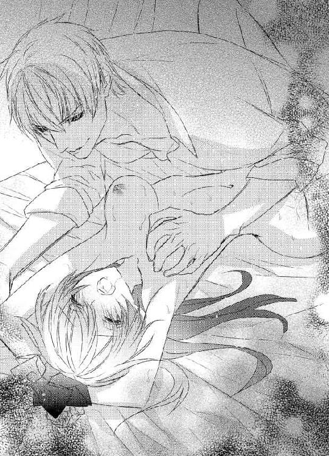

| 身代わり花嫁の災難 (蜜猫文庫) | |
| 森本あき | |
| 竹書房 (2015) | |
この作品は縦書きでレイアウトされています。
また、ご覧になる機種により、表示の差異が認められることがあります。
一部の漢字が簡略字で表示されていることがあります。
イラスト／旭炬
わたしたちは親友よ。
だから、絶対にあなたを守るわ。
たとえ、どんなことをされたって。
１
「いやっ...」
クリスティ・スペンサーは、やわらかいもので頬をくすぐられて身をよじった。ベンジャミン・プラットのにやけた声が耳に届く。
「まだ、何もしてないぞ」
何もされていないわけがない。いまの自分の格好を見られたら、きっと悲鳴を上げて、逃げたくなる。こんなの屈辱的だ。
だけど、反論はできない。それが、ベンジャミンとかわした契約だから。
やわらかいものが頬を何度かなぞって、そのまま、つーっ、と下まで降りた。口元、あご、首筋。触れるたびに、ぞわり、と体が震える。
厚い布で目隠しをされているクリスティには、ベンジャミンが持っているものがなんなのか、まったくもって見当もつかない。
「これが何かわかるか」
鎖骨を撫でられて、クリスティはぎゅっと唇を噛んだ。おかしな声がこぼれそうになるのを、必死でこらえる。
「わかるわけが...ないでしょ...」
平静を装って答えるものの、吐息が混じった。
「当ててみろ」
ベンジャミンは楽しそうに告げる。
「いやよ」
こうやって焦らすのは、ベンジャミンの好きな遊びだ。どうせ、されてしまうんだったら、さっさと終わりたい。
最初のころは、どうにかして逃げよう、と考えていたけれど、いまはもう、あきらめてしまっている。
そのうち飽きるわ。
それを信じて、我慢するしかない。
「そうだな。当たったら、ここでやめてやってもいい」
「え...！」
クリスティは目を見開いた。それだけ大きく開けたのに、ベルベットの布はまったくなんの景色も見せてくれない。
ヒントになる何かが見えたらいいのに。
「本当にやめてくれるの」
「俺が、約束を破ったことはあるか」
わからない。そもそも、別の約束をしている最中で、それが守られるかどうかわからない状態で、どうやって答えればいいというのか。
「もちろん、男たるもの、自分の発言には責任を持つ」
そこまで言うからには、守るつもりなのだろう。だとしたら、ベンジャミンに抱かれなくてもすむ。
「わかったわ」
クリスティはうなずいた。このやわらかさからして動物の毛でできたものだろう、と憶測はつく。肌に当たる部分が結構広めなので、たぶん、体が大きな動物だ。加工品として毛を使う、と考えれば、選択肢は限られてくる。
いくつか言っていけば、そのうち当たるだろう。
「そのかわり、外れるたびに、俺の言うことをひとつ、聞いてもらうぞ」
...どうせ、そんなことだと思ったわ。
クリスティは、心の中でこっそりため息をついた。
ベンジャミンは、クリスティで遊びたいだけ。当たるわけがない、と高をくくっている。
おあいにくさまね。
クリスティは胸のうちでつぶやく。
わたしは幼いころから、お父様に連れられて狩りに行ってるの。動物には詳しいのよ。そう簡単には負けてあげないわ。
「どうする？」
「いいわ」
クリスティは受けて立つことにした。賭けに勝ったらもうけもの。負けたところで、もともとされるはずのことだ。たいして問題はない。
そう考えたクリスティは、つくづく甘かった。
まだベンジャミンのことがわかっていない。
それを思い知らされることになるなんて。
「これは教えておいてやろう。たぶん、すでに推測はついているだろうが、俺が持っているものは動物の毛で作られている」
え、まさか、最初にその答えを出すなんて。いったい、どういうことなの。
クリスティの心に不安がよぎる。
しっかりするのよ、クリス。
クリスティは自分に喝を入れた。
ベンジャミンはわたしを揺さぶりたいだけ。ここで動揺したら、相手の思うツボじゃない。
「なんの動物かは、俺も知らん。だから、それはどうでもいい」
「...え」
クリスティは、予想外の事態に混乱する。
だったら、いったい何を当てるの？
「この道具はなんなのか、それを当てたら今日は解放してやる」
「...それは、正確な名前じゃなきゃダメなのかしら」
「いや、でかいくくりでいい。たとえば、ナイフだとしたら、銀でできていようがほかの金属だろうが、肉用だろうが魚用だろうがバターナイフだろうが、それは問わない。ナイフと言った時点で正解だ」
それだと、クリスティがかなり有利になる。なのに、そんな条件にした理由は、ただひとつ。
クリスティにはけっして当てられない、と確信しているからだ。
考えるのよ、クリス。
クリスティは、自分を鼓舞した。
動物の毛でできている道具なんて、そんなにないわ。そのうち、絶対に当たる。自信満々なベンジャミンの鼻をへし折ってやるのよ。
「わかったわ」
クリスティは脳をフル回転させる。家の書斎にあるもの。壁に飾ってあるもの。ここに来てから見たもの。
その中に答えはある。
「さて、どうする。この時点で答えてもいいぞ」
まずは、ひとつ消しておこう。ベンジャミンは他人を長くいたぶりたい、ひんまがった性癖を持っている。ここで外れたところで、そんなにたいしたことはさせられまい。
「羽ペンかしら」
そんな簡単なものを答えにするわけがない。でも、除外をしておかないと、いつまでも頭に残ってしまう。まちがっているとわかっていつつも、クリスティはそう口にした。
「答える必要もないと、おまえだって知っているだろう」
ベンジャミンは、やわらかいものでクリスティの頬をくすぐる。
「ひっ...」
クリスティの唇から、悲鳴に似た声がこぼれた。ベンジャミンの笑い声が響く。
ああ、もう、本当に腹の立つ男！
「ちがう。なので、コルセットの結び目を解け」
すでにドレスを脱いで、ベッドに横たわらされていた。ベルベットの布で目を覆われたときに、ほんのちょっとだけ抵抗はしたものの、どうせ、ベンジャミンの思うままにされるというあきらめと、逆らえば逆らうほどベンジャミンを喜ばせるだけだとわかっていたので、途中で受け入れた。
コルセットと下着だけを身につけてベッドに横たわる自分の姿なんて、見たくないから。目隠しされたのを幸いだと思う部分もあった。
コルセットを外してしまったら、上半身があらわになる。下着一枚、それもほぼレースで、いろんなところが透けているものだけを身につけている状態。
さすがに、それは恥ずかしすぎる。
どうせなら、全部脱がせてくれればいいのに。まだ全裸のほうがマシだ。
「どうした。手を動かせ」
ベンジャミンは楽しそうだ。クリスティがとまどっている姿を見るのが嬉しくてたまらないのだろう。
クリスティは思い切って、おなかのあたりにある結び目をほどいた。メイドが毎朝着させてくれるコルセットは、ベンジャミンの命令で前結びになっている。クリスティの目を見つめながら、それをほどくのが、ベンジャミンにとってはとてつもなく愉快なことらしい。
本当に最低な男。
クリスティは胸のうちでつぶやく。
そう思うのは、もう何度目なのかわからない。数えたところで、多すぎて覚えられない。そのぐらい、ベンジャミン・プラットという男はゆがんでいる。
結び目が外れると、ぴったりはまっていたコルセットに隙間ができた。そこで、ふと思いつく。
ベンジャミンは、結び目を解け、と言ったのだ。脱げとは命令されていない。コルセットをはがそうとしたら、約束がちがう、と強気で言い張ろう。
そんなクリスティの胸のうちを察したのか、それとも、もとから、そのつもりだったのか、ベンジャミンはコルセットに手をかけなかった。
「つぎは当てられるように、少し長めに触ってやろう」
ベンジャミンはそう言いつつ、デコルテを道具でこする。クリスティは触れられた部分に意識を集中した。
くすぐったい、とか、恥ずかしい、とか、言ってる場合じゃない。道具の名前を当てたら、今夜は逃れられるのだ。
道具がデコルテ部分を這いまわる。毛先はやわらかい。そして、何本もの毛が集まっている。
「どうだ。答えるか」
クリスティは首を横に振った。いまはまだ、特定できない。頭の中に、これだ、というのが浮かんでこない。
「リクエストがあれば聞いてやるぞ。どうやって触ってほしい、とか、どこを集中的にいじってほしい、とかな」
ふふん、と鼻で笑うベンジャミンに、いらないわよ、とわめいてやろうかと、一瞬考えたけど。カッとなって、せっかくのチャンスを棒にふるなんてバカげている。
クリスティは深呼吸をして、望みを口にした。
「あまり速く動かさないでいただける？ それと、広範囲じゃなくてもっと狭めてもらえないかしら」
デコルテ全体を撫でられると、その道具の動きにどうしても意識が持っていかれてしまう。肩のつけねだけ、とかにしてもらったほうが、純粋に道具の形状や性能に集中できる。
「了解」
ベンジャミンは、いったん、道具をクリスティの肌から離した。
「ゆっくりと、一点集中で。それでいいんだな」
「いいわ」
クリスティがうなずくと、くすり、と笑う声が耳に届く。いったい、何を笑っているんだろう、と考える間もなく、道具がコルセットの隙間に差し込まれた。
「いやっ...！」
クリスティは体をよじる。まだぐるぐる巻きになった紐を完全にはほどかれていないから、コルセットが体から離れてしまうことはないけど、隙間は確実に大きくなった。今日のコルセットはドレスにあわせて、少しカットが深いから、動きつづけるとおっぱいがこぼれてしまうかもしれない。
でも、こんなの予想してなかった。デコルテのどこかを道具で撫でるだけだと思っていたのに。
「おまえもバカだな」
ベンジャミンのにやけた顔が目に浮かぶようだ。あいつの顔なんて、思い出したくもないのに。
栗色の髪、しゅっとした面長な顔、一重で涼しげな目元に、髪と同じ栗色の瞳。高くて筋の通った鼻筋と薄い唇。肌は少し日焼けしていて、それが精悍さを醸し出している。
何も知らずにベンジャミンを見たら、すごくかっこいい、と見とれたことだろう。ううん、知ってるいまだって、たまに、はっとするぐらい美男子だと思う。
意地悪そうに目を細めても、にやにやしていても、唇をゆがめても、眉間に皺を寄せても、その表情がすべて絵になる。
だから、いままで、いろんな女性にひどいことをしても許されてきたのだろう。
ベンジーならいいわ。
パーティーで実際、そう言っている女の人を何人も見てきた。
クリスティは、その考えにまったく同調できない。ベンジーなんて、親しげに呼ぶつもりもない。
わたしにとって、この男は敵なのだ。
そうよ、しっかりして、クリス。
クリスティは自分に言い聞かせる。
ベンジャミンは、わたしを弄びたいの。動揺させて、混乱させて、怖がらせて、楽しみたいだけなの。
「俺の策略に、まんまとはまるなんて」
ね？ この調子に乗った口調。誇らしそうな声。腹が立つったら、ありゃしないわ。でも、負けないで。冷静になって。
ベンジャミンが何をするかじゃなくて、道具がなんなのかを当てるのよ。わたしが正解を口にしたときのベンジャミンが、どんなに悔しがることか。その顔が見られないのは残念だけど、悔しがらせた事実だけで十分よ。
「いまからゆっくりかわいがってやるよ。ここの一点をな」
ベンジャミンが道具で、クリスティの左の乳首を、つん、とつついた。
「ひぅ...」
クリスティの唇から、かすかに声が漏れる。
クリスティは、右よりも左の乳首のほうがちょっとだけ弱いのだ。ベンジャミンは、それを熟知している。だからこそ、左を選んだ。
「しっかり感じろよ。もちろん、快感じゃなくて、なんの道具か、ってことだからな」
あなたに言われなくたって、わかってるわよ。
その言葉は呑み込んだ。自分の計画を、わざわざばらすわけがない。
つん、つん、と乳首をつつかれたら、そこが、ぷつん、と立ち上がるのがわかった。乳首に神経が集中したみたいに、道具の動きに反応してしまう。
「あっ...やぁん...」
声を我慢するのはやめよう。そのほうが、ベンジャミンをだませる。
感じすぎて、道具が何かを考えられない状態だ、と思われていたほうがいい。
「まだまだわからないだろうな」
ベンジャミンは道具でクリスティの乳首を上から下へこすりおろした。細かい毛に乳頭を刺激されて、クリスティの体が大きくのけぞる。
「ふっ...あぁん...だめっ...」
これだけ毛の部分が長いってことは、ある程度、大きさのある道具なのだろう。動物の毛を使った大きな道具。毛がたくさん使われていて、やわらかい。
ベンジャミンは、今度は道具を下から上へ動かした。乳首もそれにあわせて、上に引っ張られる。ぐに、と上に倒れたところで、道具が離れた。乳首が、ふるふる、と震えながら、もとの位置に戻る。
「んんっ...いやぁ...はぁん...」
その間ずっと、クリスティの体は電流のような刺激を感じる。全身がしびれて、びくん、と反応する。
まだ、ちょっとしか触られてないのに。
「思ったよりも、おもしろくないな」
ベンジャミンが、ぽつり、とつぶやいた。
「目隠しをすると感覚が鋭敏になるそうだからやってみたが。よく考えたら、おまえはもともと、どこもかしこも敏感なんだった」
ベンジャミンの言葉に、クリスティはカッと頬を染める。
ベンジャミンに出会わなければ、そんなこと知らずにすんだ。普通に結婚して、普通にセックスをして、それでたぶん満足していた。
全部、この男が悪い。
わたしは、悪くない。だから、恥じる必要もない。
なのに、どうしても羞恥で体が赤く染まっていく。熱が体をめぐる感覚に、とても悔しくなる。
わたしのせいじゃないのに。
わたしは何もしてないのに。
「それに、俺のことをきつい目でにらんでいるのが、そのうち快感に潤むところを見られないのもつまらない。よし、こうしよう。俺がこれからこの道具で、おまえのクリトリスをいじる」
そのものずばりの単語を出されて、羞恥の熱はもっとひどくなった。
なんなの、こいつ！
汚い言葉なんて使いたくないのに、そんなふうに心の中で叫んでしまう。ベンジャミンに会うまでは、こいつ、なんて言葉、口にしたことはもちろん、頭で思い浮かべたことすらなかった。
「下着が濡れて、膣が透けて見えるようになるまで、おまえはどんどん正解を言っていけ。感じやすいおまえの愛液で下着がびちょびちょになって、着てても着てなくても変わらないぐらい丸見えになったら、タイムオーバーだ」
「いやよ、と言ったら？」
「両者合意せず、ということで賭けは無効になるな。俺の当初の予定どおり、この道具でじっくり全身をいたぶってやる」
クリスティは、ぎゅっ、と唇を噛んだ。そうだとしたら、受けるしかない。
大丈夫、そんなにすぐに透けるわけがない。いくら濡れやすいといっても、下着全体に広がるには時間がかかるはず。
「わかったわ。早くしなさいよ」
こうなったら、とっとと当てるしかない。さっきのでヒントはもらった。
大きめの道具。毛はやわらかい上に密集している。
「よし、新しい賭けが成立だ。ちなみに、おまえが負けたら、目隠しをとって、その布でおまえの両手をしばって、俺が何をするのかじっくり見せてやる。いつものように手で邪魔するなんてできないから、楽しみにしてろ」
「ひ...卑怯よ！」
そんなの聞いてない。
「賭けは成立した。いやなら、死ぬ気で当てろ。いくぞ」
ベンジャミンがクリスティの足を左右に広げた。道具を、下着の上からクリトリスに当てる。
「ふぅん...」
布越しだというのに、全身に電気が走った。道具を動かされて、さっそく、じんわり、と愛液が染みだす。
ああ、もういや。
クリスティは手で唇を覆った。
どうして、わたしはこんなに感じやすいの。直接触られてもいないのに、すぐに乱れてしまう。
「早くしたほうがいいぞ」
うるさいわね。わかってるわよ。
「レースだから、すでにところどころ透けてる。乳首いじられただけで濡れただろ」
「ひどい...！」
そうだ、レースだった。もとから透けてるようなものだ。道具に気を取られすぎていたのと、視界が覆われていて見えない状態だったから、すっかり忘れていた。
絹の下着なら、しばらくもった。それを基準にしていた。
「あなたは...どれだけ卑怯なの...！」
「負ける賭けなんてするわけがないだろ。ただ、おまえがこの道具名を当てる、って可能性もあるからな。そこはもう、潔く負けを認めてやる。で、どうする？ こうしてる間も、どんどん透けてきてるぞ」
ベンジャミンはずっと道具を動かしていた。クリスティもそれはわかっていたけれど、ショックのあまり、そんなに感じていなかったので、大丈夫だと勝手に思っていた。
体は、どうやら快感に正直らしい。だったら、早く当てないと！
「ブラシ」
「ちがう」
「はたき」
「ちがう、と言うのもめんどうだから、当たったら教えてやる。俺は楽しんでるから、どんどん言っていけ」
ベンジャミンはクリトリスを道具で押した。毛の奥に硬い感触がある。つまり、何かの先に毛がついている。
ぐりぐり、と道具を回されて、クリトリスが強くこすられた。
「ふぁっ...あぁん...いやぁ...」
クリスティは、びくん、びくん、と何度か体を震わせる。膣から愛液がどんどんあふれているのが、自分でもわかった。
乗馬用のムチ、タオル、リボン、耳かき、バッグ、歯ブラシ、下着。
もう自分でも、何を言っているのかわからない。時間がない焦りと、クリトリスを刺激されている感覚で、頭の中が真っ白になっている。
動物の毛を使った道具って、何があったかしら。いえ、待って。そうじゃないわ。動物の毛を使いそうもないから賭けにしたのよ、きっと。
だって、相手はベンジャミン・プラットなんだもの。
ナイフ、フォーク、お皿、グラス、枕、ベッドカバー、ドレス。
思いついた道具をかたっぱしから言っていく。正解を考えるわけじゃなくて、とにかく何か言っていないと怖い。
いつ、おしまい、と言われるのか。
わたしの負けが決まるのか。
お財布、靴、ペンケース、万年筆、果物カゴ、リンゴ、オレンジ、バナナ。
「はい終了」
もう最後は、果物カゴからの連想になってしまっていた。当たるわけがない。
「本当は、しばらく前から、おまえのきれいなピンクの膣口が、ぱくぱく開いているところも丸見えだったんだがな。あまりにも必死だから、おもしろくて放置してた」
...たぶん、そんなことだろうと思っていた。レースの下着がこんなに長い間、透けずにもつわけがない。
だけど、簡単に負けたなんて認めたくない。
「じゃあ、いったい、なんなのよ」
クリスティはささやくように聞いた。このしゃべりかたなら、あえぎが混じっていても気づかれまい。
「もし、わたしが羅列した中に正解があったら、これから一週間、わたしに触れさせないわよ」
「そんな条項、あとから盛り込むのは卑怯だ、と言いたいところだが、まあいい。おまえのそのプライドの高さを、ポキン、とへし折るのも楽しいからな」
本当に性格が悪い。こんなひどい男、見たことがない。
「目隠しを取ってみろ」
言われて、クリスティは少し躊躇する。これを取ったら、わたしの負けが決まってしまう。
あの条件を呑んだからには、クリスティの言ったものの中に正解はないのだ。
だけど、もしかしたら、何かにかすっているかもしれない。広い意味ではおなじ仲間、というものがあったかもしれない。
問題は、クリスティがすべて覚えていない、ということだけれど。それでも、戦ってみる価値はある。
クリスティは目隠しを外した。しばらくは光のまぶしさで視界がぼやける。焦点があってきて、ベンジャミンの顔が目に入った。
かっこいい。
素直にそう思ってしまう。
どんなにひどい男だとしても、容姿にはそれが現れない。本当に卑怯だ。
「これが道具だ」
ベンジャミンが差し出したのは、細長い木の棒の先に丸い毛の塊がついているもの。初めて見るそれに、クリスティは自然と顔をほころばせた。
「わたしの勝ちよ」
さすがに、これはない。いくら負けたくなくても、いままでないものを勝手に作りだすなんで。
だって、これに名前なんてあるわけがないもの。わたしをいじめるために、だれかに作らせた道具なんでしょ、どうせ。
「どうしてだ」
ベンジャミンは、にやり、と笑った。その笑顔すら、腹立たしい。
「だって、あなたが作った新しい道具の名前なんて、だれも知らないもの」
「おまえの知識のなさといったら、あきれるほどだな」
尊大に言い放つベンジャミンに負けたりなんかしない。親には、きちんと教育されていた。社交界で必須と言われる教養は身についている。勉強熱心なクリスティは、周りから才女と呼ばれていた。
クリスティが知らないなら、たいていの人は知らないのだ。
「じゃあ、なんなの？ もったいぶってないで、教えなさいよ」
「まあ、そう焦るな」
ベンジャミンはベッドから降りると、入り口のすぐ近くに置いていた四角い箱を手に取った。かなり大きくて、その上、重そうだ。
「それは何？」
「だから、落ちつけって言ってるだろ」
ベンジャミンは箱ごと、ベッドにまた乗った。
来なくていいのに。
心の中で思ったことは、もちろん、口にはしない。反抗されればされるほどベンジャミンは喜ぶのだと、もう知っている。
それでも、たまに我慢できずにやってしまうのが、クリスティの悪い癖だ。
「おまえは、俺が勝手に作った道具ということにして逃れたいんだろうが、そうはいかない。これを見ろ」
ベンジャミンは箱を開けた。裁縫箱のような形状で、蓋が左右に開く。浅い木の受け皿に、ベンジャミンが持っている道具のサイズちがいが、ずらり、と並んでいた。太いものから細いものまで、十数本。こうやって並んでいると、まるで芸術品のように見える。
だまされてはいけないわ。
クリスティは自分を戒める。
たくさん作って、わたしをかく乱しようとしているのよ。だって、こんなもの、実際にあるわけがないんだから。
「だから、名前を教えてよ」
イライラして怒鳴りたい気持ちを、クリスティはどうにか抑えた。
淑女は、いついかなるときも高貴にふるまいなさい。
母親に、そう育てられてきた。
ベンジャミンと一緒にいると、さすがに丁寧な口調で話しつづけるだけの忍耐力はなくなるが、怒りに身をまかせたりはしたくない。
だから、声を荒げたりしない。
あなたのところまでは堕ちていかない。わたしには高潔さがある。
それをアピールするために。
「フデだ」
「フデ？」
ほらね。やっぱり、でっちあげだわ。そんな奇妙な名前のもの、耳にしたこともない。
「知らない、と言いたいんだろう。だから、証拠もそろえた」
木の皿を、かぱっ、と外すと、下には本が何冊か入っていた。辞典や歴史書など、クリスティでも読んだことがあるシリーズだ。
ただし、膨大な数に及ぶので、すべてに目を通してはいない。
「これがどうしたの」
ベンジャミンは箱から本を取り出して、クリスティの手の届くところに置いた。
「しおりが挟んであるところを読め」
もしかしたら、本当にフデというものなのかしら。実際にある道具なら、クリスティの負けになってしまう。
クリスティは、それでも最後の希望を持ちながら、本に手を伸ばした。まずは辞典から。
フデとは、東洋で使われる筆記用具。インクではなくスミを使う。
たった一行、そう書かれている。
筆記用具？ これが？ そもそも、スミって何？
それでも、辞典にはたしかに載っている。フデというものがあることだけはまちがいない。
でも、待って。
クリスティは、ピン、とひらめく。
この道具がフデかどうかはわからないでしょ。絵も写真も掲載されてないんだし。
ほかの本にも説明だけだったら、そう抗弁しよう。
対抗策を思いついたことで気をよくしたクリスティは、だけど、つぎの本で絶望にたたき落とされる。
歴史書の一冊、『東洋の文化史』。東洋には興味がないので、読んだことがない。ボーンチャイナを好んで使う友人もいるが、クリスティは彩りの鮮やかな西洋の食器のほうが好きだ。
しおりを頼りに、ページを開いた。そこにはフデの写真と使い方の解説とフデを使った作品が、半ページに渡って載っている。
クリスティは息を飲んだ。東洋に興味がなかったばかりに、こんなふうに追い込まれるなんて。
ほかの本なんて必要ない。これだけでも、フデが存在する証明になる。
だけど、クリスティは往生際も悪く、ほかの本もめくった。どれにも、フデの絵や写真が載せられている。
「さて、と」
十分、時間をおいて、ベンジャミンが勝ち誇ったように告げた。
「負けを認める覚悟はできたか」
できていない。できるなら、ずっと本をめくっていたい。
フデなんて知らない。知るわけがない。だから、賭けはなしに。
そう言えたら、どんなにいいだろう。
こんなの証拠にならない、と本をびりびりに破ってやりたい。
だけど、クリスティにはできなかった。
この男とちがって卑怯者にだけはならない。
それが、クリスティのプライドだからだ。
「負けたわ」
クリスティはうつむかなかった。顔をあげて、まっすぐベンジャミンを見て、はっきり言葉を発する。
「その気の強さだ」
ベンジャミンはにやりと笑った。
「俺が、ずたずたにしてやりたくなるのは」
やってみればいいわ。
クリスティは心の中で答える。
でも、わたしはずたずたになんかならない。
何をされたって、プライドまでは渡さない。
「んっ...ふぁ...」
もっとも細いフデで、乳頭をつつかれた。さっきとはちがい、少し毛が硬い。それで乳頭をこすられると、毛先が束になって乳首を刺激する。
「やっ...あぁん...」
あまりの快感に、クリスティは体をのけぞらせた。約束どおり、両手を頭の上にあげさせられて、ベルベッドの紐で縛られている。だから、フデを押しのけることはできない。ベンジャミンにされるがままだ。
コルセットと下着はすでに脱がされていた。脱ぎかけなら全裸のほうがいい、と思ったけど、やっぱり、何も覆うものがないのは恥ずかしい。
さっきまでは、目隠しがあった。だけど、いまはない。
そのちがいも大きいのかもしれない。
「おまえは、本当に乳首が感じやすいな」
くるくる、と乳頭の上でフデを回された。ぷくん、とふくらんで充血した乳首を、毛先が襲う。
「ふぇっ...やぁん...」
「ダブルにするか」
ベンジャミンが木の皿から取り出したのは、一番大きなフデ。毛先も握ったこぶしぐらいはある。
「やだっ...」
クリスティはずりあがって逃げようとした。ベンジャミンは止めない。それどころか、目を細めてクリスティの動きを見ている。
ベンジャミンにはわかっているのだ。逃げ場なんてないことを。クリスティがベッドから落ちる勇気すらないことも。
落ちてやろうか。
ほんのちょっとだけ、その考えがよぎった。
そんなに高さはないし、床にはふかふかの絨毯が敷いてあるので、ケガはしないはず。うまく着地をして、逃げればいい。
...裸で？ それも、両手を縛られたまま？
そんな姿、だれにも見られたくない。ベンジャミンから逃げられたとしても、クリスティの評判は地に落ちる。
あのクリスティ・スペンサーが裸で逃げ回っていた。
そんなうわさが立てられたら、社交界どころか実家にも戻れなくなる。
「本当に、おまえには飽きないな」
ベンジャミンがにやりと笑った。
「どうにか現状を打開しようとがんばって考えるのに、結局はあきらめざるをえなくなる。そのときの落ち込んだ表情が、このうえもなく色っぽい」
この変態！
本人にぶつけてやりたい。でも、変態、なんて言葉、口にするのも汚らわしい。
どんなことをされようと、わたしは高潔でありつづける。
ベンジャミンの遊び道具になると決めたときに、そう誓った。自分の予想以上にベンジャミンがひどい男だったせいで、その決意もたまに崩れそうになるけれど。
まだ地の底に落ちたくはない。
「こうして、いじめてやりたくなる」
ふたつのフデで左右の乳首を同時にくすぐられた。大きいほうのフデは、毛先がずっとやわらかい。その感触のちがいが、クリスティを狂わせる。
「いやぁっ...あぁっ...だめぇ...」
細いフデで、乳輪を、ぐるり、となぞられる。ぷっくらふくらんでいた乳輪が、ますます大きくなった。
感じたら乳輪が縮むのではなく、全体的にふくらむ。
そこを、ベンジャミンがすごく気に入っている。クリスティのような体質の女性は、そういないらしい。
だったら、普通がよかった。ベンジャミンがきらいな体をしていたかった。
「この、ぷくっ、と腫れるところがいいよな」
ベンジャミンはフデでしつこく乳輪をいじりながら、つぶやく。
「ほら、おまえも見てみろよ」
いやよ、と顔を背けたら、あごを持って、無理やり見させられる。あごを持たれるのが屈辱的すぎて、そんなの絶対にされたくない。
だから、クリスティはいやいやながら視線を下に向けた。
乳輪が盛り上がって、その中央についている乳首は、つん、と勢いよく立ち上がったまま。自分のものなのに、いやらしく見える。
ベンジャミンがフデを持ち変えて、今度は反対の乳輪もおなじようにいじられた。大きなフデは上下左右に大きく揺らして、乳首全体をこする。
「あぁん...いやっ...んっ...はぁん...」
クリスティは腰をくねらせた。ジン、とした刺激が体中を駆け巡って、ある一点へ向かっている。
ベンジャミンは、とっくにそんなこと気づいているだろう。
クリスティの膣内は、さっきから震えっぱなしだ。乳首だけでもイケるぐらい敏感な体は、絶頂に向かっている。
だけど、イキたくない。フデで気持ちよくなる、なんて思われたくない。
ベンジャミンはフデを乳首から離した。
ああ、よかった。これで、もう少し我慢できる。快感には波があるから、しばらく時間が空くと、引いてしまう。
ベンジャミンが筆を裏返した。クリスティがほっとした瞬間を狙っていたのだろうか、毛先とは反対の硬い木の底で、クリスティの乳首を、ピン、と勢いよく弾く。
それも両方、同時に。
「いやぁぁぁっ...！」
大きさのちがう木の棒で乳首を強くこすられて、耐えきれずにクリスティは絶頂を迎えた。乳首が、ふるふる、と揺れるのにあわせるように、膣の中も、ひくん、ひくん、と断続的に震える。
「どうした」
どうしたかなんてわかっているだろうに、ベンジャミンは楽しそうに聞いてくる。
「腰をがくがくさせてたぞ。見てやろう」
いや、と言う気力もない。イッたあとすぐは、手を動かすのすらいやなぐらい、一気に疲れが押し寄せる。
ベンジャミンがクリスティの足を左右に大きく開くのにも、抵抗できなかった。
「ベッドシーツまで、びっしょり濡れてるぞ」
でしょうね。
投げやりな気分で、そう思う。イッた直後だけは、気の強さも羞恥もなりをひそめる。
「なんだ、反応なしか」
つまらなそうにつぶやくベンジャミンに、ああ、そうだったわ、と毎回、はっと気づく。
この男は抵抗する女を征服したいのだ。クリスティが従順だったら、ベンジャミンはいまごろ、クリスティを解放してくれていただろう。
ベンジャミンに弄ばれた女たちは、社交界にたくさんいる。その数ときたら、よくパーティーに顔を出せるな、とベンジャミンのことを尊敬してしまうぐらいだ。
もちろん、いい意味ではない。その厚顔無恥さがすごい、と思うだけだ。
だけど、だれもベンジャミンのことを悪く言わない。それどころか、いい経験だったわ、お嫁に行っても、あの思い出だけで耐えられる、なんて言い出す女性もいるほど。
ベンジャミンに抱かれた女を嫁にもらう男性のほうが気の毒だ、と思うクリスティは、どうやら少数派らしい。家柄で結婚相手を決められてしまう女性たちは、一度ぐらいは好きな人に抱かれたい、と思うようだ。
だから、ベンジャミンの毒牙にかかる女性が後を絶たない。
ひどい男なのに。フデなんていう、見たことも聞いたこともない道具で、こんなとんでもないことをしているのに。
クリスティは、結婚相手にすべてを捧げたかった。それが淑女のたしなみであり、高貴な家に生まれた義務でもあると信じていた。
だけど、捧げるべき処女はもうない。
無理やりじゃない。もっと守りたいものがあったから、ベンジャミンと取引をした。それについては、なんの後悔もしていない。
これから先、クリスティに縁談が持ち込まれるのかはわからない。ベンジャミンとの関係は、そろそろ社交界でも知れ渡ってきているだろう。だけど、クリスティからは言わない。ベンジャミンの、そこだけはいいところだと認めてもいいが、女性との行為を自慢げに吹聴したことは一度もない。すべて、女性側から回ってくるだけだ。
だから、もし、だれかがクリスティを娶ってくれたら、一生、隠し通す。
こんなうわさを聞いたけど。
夫となる人が不安そうに聞いてきたら、笑い飛ばす。
そんなの、ただのうわさよ。わたしがあのベンジャミン・プラットと寝ていたら、あなたにだって自慢しているわ。
堂々と、なんの後ろめたさもなく、笑顔で言い放つことができる。その自信がある。
だって、これはただの契約だから。
愛なんて、カケラもないから。
罪悪感なんて抱くわけがない。
でも、そのためには、あまり長く、ベンジャミンとの関係をつづけるのはよくない。早く飽きられることが重要だ。
ベンジャミンとセックスするようになって、クリスティの体は徐々に作り変えられている。
ベンジャミン・プラットとの間には何もない。わたしは純潔よ。
そう言い切りたければ、そろそろどうにかしないと。
「ここは、このフデにするか」
クリスティがぼんやりとそんなことを考えている間に、ベンジャミンがまた別のフデを取りだした。棒の部分が少し太めで、毛先も丸く開いている。
ベンジャミンはクリスティの足の間に体を収めると、毛先でクリトリスをなぞった。
「ひぅ...」
快感が遠ざかって凪のようだった体に、また新たに火がつく。
「こっちも充血してるな」
ベンジャミンは毛先でクリトリスをくすぐる。小さなとがりをゆっくり毛先で刺激されて、クリスティは体を上下に跳ねさせた。
「んんっ...あぁん...」
あんなに引いていた快感の潮が、一気に戻ってきた。ベンジャミンはクリトリスから毛先を動かして、そのまま、膣口までをなぞる。
「やっ...いやぁっ...それ...だめっ...」
ベンジャミンの指や舌でされたことは何度もあるけれど、毛先なんて初めてだ。味わったことのない感覚に、クリスティの肌が総毛立つ。
「元気になってきたな。気持ちいいんだろ」
今度はクリトリスまでを撫で上げられた。何度も毛先で往復されて、いったん乾いたはずの愛液がまた染み出す。
「おまえは、ホントに濡れやすいな」
膣口をぐりぐりと毛先で撫でられた。そのまま、ちょっとだけ中に潜り込んでくる。
「いやぁっ...あっ...ふぅ...」
膣の中に入れられることにも、慣れてしまった。最初は全然気持ちよくなくて、痛いだけだったその行為が、いつの間にか快感に変わった。
ずっと痛くてよかった。もしくは、痛くなくても何も感じないままがよかった。
こんな毛先にすら、膣内は反応する。きゅう、と縮むのが、ありありとわかった。
もっとされるのかと覚悟していたら、ベンジャミンはあっさりフデを抜いた。ほっとしていると、ベンジャミンがフデをクリスティの目の前に持ってくる。
「ほら、毛先がぐっしょり濡れてる。本来は、スミという黒い液体を使うらしいが、おまえの愛液でも何か書けそうだな」
「やっ...！」
クリスティは目を見開いた。
まさか、そんなことをするなんて！ この男は、いったいどれだけ最低なのよ！
「俺の名前でも書くか」
ベンジャミンは楽しそうに目を細めると、フデをおなかに置いた。サインをするように、すらすらと自分の名前を書く。
フデの濡れた感触が、さすがに気持ち悪い。
「真っ白な肌に透明な愛液だから、まったく目立たんな」
ベンジャミンは残念そうに肩をすくめた。
ああ、よかった。
クリスティはほっとする。
おなかにベンジャミンの署名なんて、冗談じゃない。
「まあ、焦ってるおまえが見られたから、いいとしよう」
...どうして、わたしはこうバカなんだろう。いつだって、ベンジャミンの真意を見抜けない。クリスティに意地悪することが無上の喜びなのだとわかっているのに、毎回、読みまちがう。
「まだやりたいことはあるが、別の機会にしてやってもいい。だから、選べ。フデを一本、また一本と膣の中に入れられて、それで掻き回されるのと、俺のもので貫かれるの。どっちがいい」
「...フデを選んだら、それでおしまいなの？」
「ちょっとは頭が回るようになったな」
ベンジャミンはにやりと笑った。
「もちろん、終わりなんかじゃない。フデでまたイカせたあとで、俺のをぶち込んでやる」
だったら、選ぶまでもない。
「...あなたのがいいわ」
この言葉を口にするたび、屈辱感でいっぱいになる。
本当なら、何も入れられたくない。このまま、終わりにしてほしい。
「俺のが好きなのか」
「好きなわけないでしょう」
思わず、本音が漏れた。はっと気づいたときは、もう遅い。
「そうか、好きじゃないんだな」
ベンジャミンはにやにや笑っている。
「俺のペニスが好きでもないのに、入れられて、あんなによがっているのか。つまり、おまえは、ただの淫乱だ」
ちがう、ちがう、ちがう！
耳をふさぎたいのに、手を縛られていてできない。
「俺じゃなくても、だれにだって足を開くんだろ。ペニスがついてれば、だれでもいい。そうじゃないのか」
「恥を知りなさい！」
耐えきれずに、クリスティは怒鳴った。でも、後悔なんてしない。
こんなことを言われて黙っているほうが、わたしのプライドが確実に傷つく。
「わたしは、そんな女じゃないわ！」
「じゃあ、なんで、いまこの瞬間も、ここをびしょびしょにしてんだ」
ベンジャミンの指がクリスティの膣に差し込まれる。
「ひゃぅ...」
毛先とはちがう硬い刺激に、クリスティの唇からあえぎがこぼれた。
「ほら、どんどん入っていくぞ」
ベンジャミンの指は、ぬーっ、と奥に進んでいく。
「あっ...いやぁ...あぁん...やぁっ...」
「いや、って言っても、膣は誘い込むようにうねってるじゃないか」
ベンジャミンが指を抜き差しし始めた。指が動くたびに、にちゃ、と濡れた音が響く。
「どうだ。おまえは淫乱なんだろ」
クリスティは唇を引き結んだ。
いままで何度も問われてきた。そのたびに、答えを拒否した。
そんな言葉を口に出す気はない。たとえ、否定するとしても、言葉として発したくはない。
「いい目だ」
ベンジャミンは指を二本に増やして、一気に根元まで突き入れる。
「いやっ...だめっ...やぁん...」
「その反抗的なまなざし。俺を射ぬこうとする緑の瞳。たまらない」
ベンジャミンは指を勢いよく引き抜いた。膣を下にこすられて、クリスティの中が、びくびくっ、と勢いよく震える。
「絶対に俺に服従させてやる」
そんな日が来るわけがない。
わたしはクリスティ・スペンサーよ。スペンサー家の名誉にかけて、あなたなんかには屈しないわ。
「楽しみにしていろ」
ベンジャミンは膣口にペニスを押し当てた。長くて硬いそれが、男性として普通なのか、それともちがうのか、それすら知らない。
結婚するまで、知らなくてよかった。夫を生涯ただ一人の相手にしたかった。
その夢は叶わない。
でも、忘れることはできる。
純潔を装うことはできる。
だから、この男のものになんかならない。
「いくぞ」
ぐっ、と膣口が左右に開かれた。先端が潜り込んできて、クリスティに圧迫感を与える。
だけど、それはすぐになくなった。快感だけが押し寄せる。
「はぁん...あぁっ...」
ベンジャミンのペニスが、徐々に埋め込まれた。ぐちゅり、と愛液の音がする。
「相変わらず、狭くて気持ちいいな」
ベンジャミンはクリスティの腰を持つと、グン、と最後に大きく差し入れた。クリスティは大きく背中をのけぞらせる。
「あぁっ...んっ...やっ...」
今日はもう焦らすつもりはないのか、ベンジャミンが激しく動き出した。ペニスが出入りするたびに、ぐちゅ、ぐちゅ、と濡れた音が漏れ聞こえる。
「ふっ...はぁん...あっ...いやぁ...」
奥をつつかれて、膣全体がうずいた。ひくつく感覚が短くなって、絶頂が近いことを教えてくる。
絶頂なんて、知りたくなかった。セックスでイケない女性もたくさんいるというのに、どうして、わたしの体はこんなにも快感に素直なのだろう。

「んんっ...んっ...やっ...いやっ...」
波が押し寄せる。それに、クリスティは逆らえない。
ぐちゅん、ぐちゅん、ぐちゅん、ぐちゅん。
ベンジャミンが動くたびに、愛液がこぼれる。膣のうごめきもひどくなる。
膣口まで抜かれて、そのまま一気に奥まで貫かれた瞬間。
「あぁぁぁぁっ...！」
大きな悲鳴をあげながら、クリスティはイッた。それとほぼ同時に、ベンジャミンの精液が中に注ぎ込まれる。
クリスティは、びくん、びくん、と体を震わせながら、それを受け止めるしかない。
こんなの、いやなのに。
中に出されたくないのに。
それをクリスティがいやがると知っているから、ベンジャミンはかならず中に放つのだ。
すべてを搾りだしてから、ベンジャミンはペニスを抜いた。さっきまでの硬さがウソかのように、だらり、と垂れさがっている。
最初は目をそらしていたけれど、いまは見ても平気になった。むしろ、その状態なら何もされなくて、安心できる。
「どうだ。ずっと俺のものになりたくなったか」
「いいえ」
冗談でしょう。一生、なるつもりはないわ。
「だったら、あいつを娶ってもいいんだな」
クリスティは、ぐっ、とつまった。そうだった。すぐに拒否しちゃいけないのを、いつも忘れてしまう。
「いまはまだ、よ。時間をかけて、じっくり検討しましょう」
焦りなんか見せない。涼しい顔をして言いのけてやる。
でも、心の中では。
早く、と願う。
早く、この男がわたしに飽きますように。
もしくは。
早く、あっちの手続きが片づきますように。
ベンジャミンがだれとも長つづきをしない遊び人だと知っていたから、すぐに飽きてくれると思っていた。まさか、一ヶ月もベンジャミンの屋敷に監禁されるなんて想像もしていなかった。
手続きには、まだまだ時間がかかる。それまで、持ちこたえなければならない。
もしくは、ベンジャミンが飽きて、クリスティを捨ててくれるのを待つしかない。
どうやったら飽きられるのか、それを教えてほしい。
だれでもいいから。
だれか。
２
「わたしね、好きな人ができたの」
頬を染めて告げるサンドラ・パーシーは、きらきらと輝いて見えた。
「よかったわね！」
クリスティは、わがことのように喜ぶ。
十八歳になって、そろそろ周りでは婚約する友達も増えてきた。クリスティたちが暮らすヨーロッパの小さな国では、十七歳で社交界にデビューするのが慣例になっている。それは、結婚できる年齢の十八歳までに相手を見つけておきなさい、という、親たちの思惑が絡んでいるからだ。
社交界のパーティーに出入りできる家柄は、とんでもなく上流から、ぎりぎりどうにかひっかかっている、いや、いつ落ちてもおかしくない下流までいろいろだ。もちろん、下流に属する人たちでも名声も冨もある。ただし、それは、あくまでも、一般庶民に比べたら、であって、上流階級ばかりが占めている社交界では当然、地位が低くなる。
社交界は戦場のようなものだ。一見、和やかに談笑しているようでも、その中では嫉妬と陰謀がうずまいている。
あの家にだけは負けたくない。
そうやってライバル争いをしている様子が、あちこちで見受けられる。洗練された会話が表面的には交わされているものの、その言葉の端々に、いやみやあてこすりが含まれているのは当然のこと。
微笑みながら、相手を傷つける。
それが社交界で生き残る戦術なのだ。
胸をときめかせて、十七歳のデビューを待っていたクリスティは、社交界が自分の思っていたような交流を広げる場ではなかったことにがっかりした。
スペンサー家といえば、だれもが知る名門一家だ。曾祖父はこの国の独立戦争で活躍した英雄で、祖父は一時期、首相を務めたこともある。父親は現在、国会議員。クリスティの兄はその秘書をやっており、父親が引退したあとは議員を継ぐことになっている。
なので、だれもクリスティには意地悪をしない。母国の英雄一家に逆らうなんてバカなことをする人は、さすがにいない。
だからといって、親しくなろうともしてくれない。近づいて利用するよりも、距離を置いておいたほうがいい、という判断なのだろう。
学校にも行かず、家庭教師にすべて勉強を教えてもらっていたクリスティは、集団生活というものを知らない。普段しゃべるのは、両親と兄のみ。世話係のメイドがいるけど、使用人が本気でクリスティの友達になってくれるわけもない。
そうですね、クリスティさま。
張りついた笑顔で、そう答えるだけ。
だから、友達が欲しかった。社交界にデビューして、パーティーに出席するようになれば、おなじ立場の女の子にたくさん会える。きっと、たくさんの友達ができるだろう。無二の親友なんてものも、見つけられるかもしれない。
だけど、そんなの幻想だった。周りを見ても、本当に仲のよさそうな人たちなんていない。
笑顔で攻撃を繰り出す。笑顔で受けて、反撃する。
そんな姿ばかり見させられたクリスティは、三ヶ月後には友達を作ることをあきらめた。
だって、話しかけたって、作り笑顔で返事をされるだけだもの。これだったら、メイドと話しているのと変わらないわ。
頻繁に顔を出していたパーティーに、一ヶ月に一度しか行かなくなった。それも、母親に催促されて、いやいや。
お婿さんを見つけてきなさい。
なにごとにもストレートな母親は、こういう話題でも言葉を濁さない。だから、母親と話しているのが一番楽しい。
社交界での婚約者の見つけ方は単純だ。ルールはただひとつ。
男女関係なく、地位が高い人が好きな相手を選ぶ。
スペンサー家はこれまでも、これからもずっと、選ぶ側だ。兄もいとこも、自分の好みの女性を見つけて伴侶にしている。ほかにも選ぶ側の家柄はいくつもあって、もし、何人かがおなじ相手を選んだ場合は、両家の親が出てきて話し合いで決まる。
本当に話し合いなのかどうかは怪しい。あくまで表面的には、なのだろう。裏でどんなやりとりが行われているのか、クリスティは絶対に知りたくない。
そこまで地位が高くない家柄にとびきりの美人や美男がいたりすると、その人をめぐってかなり激しい争いが起こる。それで命を落とした者もいるとかいないとか。
選ぶ側の者が、おなじく選ぶ側のだれかを見初めて、その相手が拒否した場合も、話し合いとなる。この場合、両家のプライドがかかっているせいか、一人を大勢で取り合うよりもひどいことになるらしい。
そういう話を聞かされて、クリスティは、わたしはだれも選ばない、と誓った。めんどうなことになりたくないし、結婚なんてまだまだ先でいい。十八歳になってから決めたって、遅くはない。
全員が婚約者を選び終えてから、残った（と言ったら申し訳ないけれど）人からだれかを夫にしよう。
婚約者を選ぶつもりもなければ、友達を見つけることもあきらめたパーティーというのは、退屈すぎて眠くなってしまう。
うちの息子はどうかしら、と売り込みに来る母親は後を絶たないものの、いえ、結構です、なんて失礼な断り方はできない。
ここは社交界。笑顔で乗り切るのが一番だ。
そうですね、考えておきます。
これだけでいい。よけいなことは、一切言わない。
あとは興味のありそうなふりをして、おもしろくもない会話をつづける。
一ヶ月に一回のパーティーでも多すぎるんじゃないかしら。これなら、家で本を読んでいたほうがいいわ。
そう思うようになったときだった。サンドラに会ったのは。
その日は、最初からうまくいかなかった。まずは、新しい靴を履いていったこと。いつもよりヒールが高かったのもあって、見事に靴ずれができた。こうなると、歩くのもつらい。自然と壁際に寄りかかるように立ちつくすことになる。パーティーで座るなんて許されない。当然、椅子なんてものはどこにも置いていない。
そこに、いままで適当にあしらっていた男性たちが、これはチャンスとばかりに押し寄せてきた。普段なら、うまく逃げ回るのに、靴ずれのせいで歩けない。
笑顔で興味もない会話をつづけるのも我慢の限界になって、ちょっと飲み物でも、と断りつつ、飲み物を乗せたお盆を持つウェイターに近づいた。シャンパンを取って、それを飲み干す。
お酒は社交界にデビューできる十七歳から飲んでいいことになっている。それでも、クリスティはパーティーで飲むことはなかった。お酒の味がそんなに好きではなかったし、たくさん飲んで意識がなくなる、なんていう話をよく聞くから、外で飲むのは怖かった。
もし、酔っている間に、だれかを婚約者として認めたらどうしよう。
そんな事態を招きたくない。いまはまだ、だれとも婚約する気になれなかった。近づいてくる人に、魅力的だと思えるような男性はいなかったからだ。
スペンサー家の女性として、凛としていないと。
自分にそう言い聞かせて、パーティーの間は笑顔を絶やさず、お酒も飲まず、会話もとぎれさせず、出席者として務めてきたつもりだ。
だけど、いまはお酒を飲みたかった。
飲んだ瞬間の、ふわり、とした感覚で、靴ずれの痛みが取れないかしら。
あまりの痛みに、そんな突飛もないことを考えた。
きっと、それがいけなかったのだ。
一気に飲んだシャンパンは、体中を駆け巡った。くらり、と揺れるような感覚がして、気分が上昇する。
このまま、うまく男性たちから逃げてしまおう。
足を一歩踏み出した瞬間、ヒールが、つるり、と地面を横に蹴った。きゃあ、と小さな叫び声をあげて、クリスティは派手に転ぶ。
周りにいた人たちが全員、驚いたような目でクリスティを見た。そして、転んだのがクリスティ・スペンサーだとわかると、目におもしろそうな色を浮かべて、何人かで固まってひそひそ話し始める。
屈辱なんて言葉では表せない。文字通り、クリスティは全身を真っ赤に染める。
早く立たないと。シャンパンを飲んで転んだ、なんてこと、お父様の耳に入ってほしくない。お父様はやさしいから、しかられることはないだろう。だけど、心の中では、はしたない、と思うにちがいない。
そうじゃないのに。靴があわないだけなのに。シャンパンも一杯だけなのに。
毅然と立ち上がりたい。何もなかったかのように、ふるまいたい。だけど、こういうときに助けてくれる友達なんて、一人もいない。
「きゃあ！」
そんな声がして、クリスティの前にもう一人、だれかが倒れた。
「ここの床、すごく滑るわ～。こんなの、転んじゃうわよ」
クリスティは驚いて、彼女を見る。床が滑るんじゃない。クリスティが滑っただけだ。
なのに、どうして、彼女は転んでみせたのだろう。
「もう、せっかくおろしたてのドレスなのに。皺になったら、どうしよう。ね、わたしを立たせてくれない？」
上半身を起こしてクリスティの方に手を差し出した彼女は、同性のクリスティからしても、はっとするほど美しかった。髪は輝くばかりのブロンド。根元にいくにつれて色が薄くなって茶色っぽくなることもなく、すべてきれいに金色。ふわり、とカールした髪は、ちょうど肩につくぐらいの長さだ。目もくっきり二重で大きくて、まつげがすごく長い。瞳の色は碧。小ぶりな鼻と真っ赤で小さめの唇が完璧なバランスで配置されている。
まるで、フランス人形のようだ。
この子の隣に並ぶのは、女だったらだれでも避けたいんじゃないだろうか。だって、見比べられる。
クリスティは、特に自分を卑下するつもりはない。つぶらな瞳、つん、と上を向いた鼻、厚めの唇、どれも気に入っている。美人ではないけれど、かわいらしい顔をしてるんじゃないかしら、という自信はある。
特に好きなのは髪の毛。劣性遺伝と言われ、あまり好まれることのない赤い髪だけれど、光に透かしたら、すごくきれい。まっすぐなストレートで、肩甲骨に届くぐらい伸ばしている。
いくらスペンサー家とはいえ、クリスティの顔が二目と見られぬ不細工だったら、だれも寄ってこない。それなりに男性に言い寄られるのは、見た目も悪くないからだ。
でも、この子とわたしだったら、みんな、この子を選ぶんでしょうね。
そんなことはクリスティにとってはどうでもいい。嫉妬心を母親のおなかの中に置き忘れてきたんじゃないのか、と家族や親せきから心配されるほど、クリスティは他人をうらやむことがなかった。
知り合いが幸せになったら、わたしも嬉しい。
知り合いじゃない人が幸せだろうと不幸だろうと、わたしにはなんの関係もない。
そんなクリスティを、周りの人たちは、変わっている、と評する。でも、嫉妬して人を陥れようとたくらむ人生よりは、他人を気にしない生き方のほうが楽に決まっている。
なので、彼女の美貌にも、すごい美人ねえ、としか思わなかった。これだけきれいなら、鏡を見るのも楽しそう。
「早く起きましょう」
催促されて、クリスティは彼女の手を取った。きめ細かな真っ白の肌。
美人は手まできれいなのね。
感心しながら、クリスティは先に立って、彼女を引き上げる。
「ありがとう」
彼女はびっくりするぐらい軽かった。背も、クリスティより頭ひとつ分は低い。
美人で細くてちっちゃい。
男性の夢をすべてつめこんだら、彼女になるんじゃないだろうか。
「こちらこそ、ありがとう」
彼女がクリスティをかばうために、わざと転んでくれたことはわかっている。だけど、どうしてかはわからない。
「外は涼しくていい感じよ。ちょっと散歩しましょう」
彼女に腕を取られて、クリスティはそのまま従った。ひそひそ話の真ん中で、じっとたたずんでいたくはない。
クリスティはようやく笑顔を取り戻した。防御として、そのまま顔に張りつける。
にこにこしながら、裏庭に通じるガラス戸を開けた。夏のうだるような暑さは引いて、さすがにこの時間は気温が下がっている。
庭にはベンチがあった。あそこに座りたい。忘れていたが、靴ずれができていたのだった。その部分が痛みを訴え始めている。
「サンドラ・パーシーよ」
クリスティを助けてくれた子が、にっこり笑顔でクリスティを見上げながらそう告げた。
「クリスティ・スペンサーです。助けてくれてありがとう」
さっき、そういえばちゃんとお礼を言ってなかった。クリスティは立ち止まって、深々と頭を下げる。
「だめね、わたし、頭が真っ白になっちゃって。平然と立ち上がればよかったわ」
パーティーで転ぶなんて、そうたいしたことじゃない。いや、ちょっとはたいしたことだけど。これからしばらく話題にはなるんだろうけど。
一人じゃなかった。
サンドラと名乗った女の子に、クリスティは感謝のまなざしを向ける。
二人も転んじゃったのよ。みものだったわ。
そうやって笑い物になるだけなのに。
「わたしね」
サンドラは、にこっと笑った。
「帰ろうと思ってたの。せっかく二週間前にデビューできて、これからパーティーでたくさんお友達を作ろうと思っていたのに、毎日のように参加しても、だれも話しかけてきてくれないんだもの」
「え、男の人も？」
クリスティは驚く。こんな美人を放っておくなんて。
「お母様に連れられた男の子なら、たくさん寄ってくるわ。でも、保護者同伴でおしゃべりしても、おもしろくないでしょう？ それも、うちの息子はどうかしら？ って聞かれたって、初対面なのでわかりません、と答えるしかないじゃない」
それだけでわかった。サンドラもまた、選ぶ側であることを。
なるほど、だとしたら、この美貌でも、たくさんの人から求婚されることはない。サンドラほどの美人なら、だれでも娶りたいだろうに、じっと声がかかるのを待っていなければならない。
大変だわね。
サンドラへの想いに胸を焦がす男性たちを、勝手に気の毒がってみる。クリスティが転んでもだれ一人助けにこなかったし、今日出席した中からは婚約者なんて選ばない。
全員、サンドラにふられればいいのよ。
クリスティに、じゃないところが少し悔しいけど、自分のことはよくわかっている。サンドラに比べたら、天と地の差だ。
「だから、あなたが転んで」
「クリスティよ」
もう一度名乗った。なんとなく、名前で呼んでほしくなったのだ。
とんでもない美人なのに、サンドラには気取ったところがない。本当に育ちがいい人は、性格もいいものだ。きっと、何代もつづいたお金持ちなのだろう。
クリスティのように、曾祖父から急に格式があがった家とはちがう。
「クリスティね。うん、覚えたわ。ごめんなさいね、わたし、人の名前を覚えるのが、ちょっと苦手なの。悪気はないのよ」
ぺろっ、と舌を出すしぐさは、とてもかわいい。
「クリスティが転んだ瞬間、周りの人がさっと動いて、空間を空けたでしょ。まるで、クリスティをさらしものにするみたいに」
そういえば、そうだった。混みあっていたあの場所に、大きなポケットができていた。
「もともとつまらなくて帰ろうと思ってたぐらいだったのに、だれも助けようともせずに笑っている様子を見て、ますますいやになって。あと、腹も立ったのよ。だから、わたしも転んでやろう、って。サンドラ・パーシーです、って名乗るの、本当はあまり好きじゃないんだけど、今日だけは名前があってよかった、と思ったわ。あのとき、わたし、周りにいる人たちを、このサンドラ・パーシーを笑えるものなら笑ってごらんなさい、って思いながら、にらみつけたもの」
「サンドラ・パーシー！」
連呼されて、ようやく気づいた。パーシー家といえば、この国で一番の名門一家だ。独立前から連綿とつづく家系には、歴史書に載るような人たちがたくさんいる。地位も名誉も冨も、ほかの家とは比較にならない。
そのパーシー家に、とんでもなくゴージャスな秘蔵っ子がいる、と、うわさには聞いていた。そういううわさは大げさなことが多いので、ふーん、と聞いたきり、忘れてしまっていたけれど。
うん、たしかに、とんでもなくゴージャスだわ。
「なあに？」
サンドラは、にっこりとクリスティを見返した。
いえ、ちがうのよ、呼んだわけじゃないの。びっくりしただけ。
だけど、その無邪気な表情を見ていると、そういうことを言うのすらヤボに思えてしまう。
「あのね、わたし、靴ずれができてて」
だから、どうにか話題を作った。
「あのベンチに座ってもいいかしら」
立っているのも、そろそろ限界だ。
「あら、気づかなくてごめんなさいね。じゃあ、わたしが支えてあげる」
サンドラはクリスティの腰に手を回した。
一回りぐらいは小さいサンドラに寄りかかったら、また転んでしまいそうで。でも、サンドラの好意を無にしたくなくて。
クリスティはうまく体重をかけないように歩いて、ようやくベンチに座った。靴を脱いだら、ほう、と息がこぼれる。
「痛いの？」
「そうね。痛いわ。でも、しばらくすれば、きっと大丈夫よ」
ずっと立ったまま談笑しなくてもいい。少し休んだあとなら、玄関まではどうにか歩けるだろう。
「じゃあ、おしゃべりしましょ」
サンドラはきれいな瞳で、まっすぐにクリスティを見る。
「え、でも、いいの？ サンドラと話したい人がたくさんいるでしょ」
「うーん、でも、わたしは話したくないのよね。最初に言ったように、つまらなくて帰ろうと思っていたの。パーティって、もっとおもしろいものだと想像していたのよ、わたし」
サンドラは唇をとがらせた。
「十七歳のデビューを、ずっと夢見ていたのに。だって、パーティーってきらきらしてるでしょ。大人しか入れないし、お酒も飲めるようになるし、きっとすごく楽しいんだ、って」
「わかる！」
クリスティは、うんうん、と何度もうなずく。
「わたしもそう思っていたの。お母様はね、お婿さんを見つけるところよ、って言うんだけど、そんなわけがない、って。わたし、学校に行ってないから友達もいなくて、パーティーでたくさんの女の子の友達ができるといいな、って思ってたのに」
「できないわよね」
「うん、できない！」
寄ってくるのは、スペンサー家の娘婿という立場を狙った人たちばかり。
「クリスティは、いつデビューしたの？」
「半年ぐらい前かなあ。わたしも、サンドラとおなじように思ってた。きっとすごく楽しいはずよ、って。でも、つまらないから、ここ最近はほとんど出席してないの。お母様に、十八歳までにお婿さんを決めなさい、ってお尻をたたかれるから、しょうがなく来てるんだけど」
「わたしはね、絶対に変な男をつかむんじゃありません、何年かけてもいいから、パーシー家のサンドラじゃなくて、サンドラ・パーシーという一人の女性を好きになってくれる男性を見つけなさい、って、お母様に命令されてるの」
「え、いいなあ」
クリスティは、思わず、そうこぼした。
「わたしも、好きな人と結婚したいわ」
「こんなこと聞いて、本当に失礼なのはわかっているけど、クリスティってどっち側なの？」
選ぶ側か、選ばれる側か。
パーティーには、クリスティのことをスペンサー家の一員だと知らない人がいないので、すごく新鮮な質問だ。

「ごめんね、いやな思いさせちゃった？」
すぐ答えられなかったクリスティをどう思ったのか、サンドラは申し訳なさそうに身を縮めた。
「わたし、考えなしにものを言う癖があって。お母様にもお父様にも注意されてるんだけど。ちょっと知りたくなっただけだから、答えなくていいわよ」
しゅんとしている姿が、すごくかわいい。美人なのに、こうやって見せるしぐさがかわいいなんて、最強なんじゃないだろうか。
ここまでレベルが高すぎると、競争心なんて持てそうもない。もともと、嫉妬とは無縁なクリスティは、サンドラのことを好きになってきている。
もしかしたら、友達になれるかも。
そう考えると、うきうきしてきた。半年通って、初めてこんなに長く女の子とおしゃべりをしている。気も遣っていないし、すごく楽しい。
「あのね、サンドラ」
クリスティは、じっとサンドラを見つめた。
「わたしとお友達になってくれない？」
もし断られたら、自分の身分をあかさなくてもいい。
クリスティがどっち側の人間かも知らないサンドラが、自分をどう思うのか。
それを知りたかった。
「喜んで！」
サンドラは、きゃっ、と声を出して、ぴょん、とベンチから飛び上がった。
なんでこう、いちいちかわいいのかしら。
「嬉しい！ わたし、初めてお友達ができた！ クリスティが転ぶ前に帰らなくてよかったわ」
「ちょっと！」
クリスティは苦笑いを浮かべる。
「あ、ごめんなさい。また、よけいなことを言っちゃった」
サンドラは、こつん、と自分の頭をたたいた。
「それでも、お友達でいてくれる？」
不安そうに見つめてくるサンドラに、クリスティは、もちろん、と笑顔でうなずく。
「さっきね、サンドラが、パーティーがつまらない、って言ったとき、わたしもおんなじだなあ、って思ったの。わたしのほうがデビューが半年早かったから、その気持ち、よくわかるわ、って。だから、お友達になりたいの」
「よかった～」
サンドラは、ほっと胸を撫で下ろした。
「せっかくできたお友達が、すぐにいなくなっちゃったらどうしよう、って怖かったの」
「そんなことあるわけないでしょう」
クリスティは、サンドラの手をぎゅっと握る。
「サンドラが、わたしを助けるために転んでくれたときから、ずっとお友達よ」
クリスティの失態をほくそ笑みながら見ていた人たちのほうが、社交界では普通なのだ。ちょっと恨みはするけれど、仕方がない、とは思う。
なのに、サンドラは迷わずに助けてくれた。
あのサンドラ・パーシーよ。
そう呼ばれるほどの地位があるのに、恥をかくことよりも困っているクリスティに手を差し伸べることを選んだ。
高潔とは、こういう人のことを言うのだろう。
「わたしも、クリスティが転んで床に這いつくばってるのを見た瞬間から、お友達になりたいな、って思ったわ」
「ウソばっかり」
クリスティは笑った。サンドラも、ぺろり、と舌を出す。
「さすがに、それはウソだけど。こうやってしゃべっているうちに、いい人だな、って思ったの。それに、クリスティ、わたしのこと知らなかったでしょ」
「ばれちゃった？」
「うん。途中で、びっくりして、わたしの名前を呼んだじゃない？ ああ、いま気づいたんだ、ってわかったの」
サンドラはにこっと笑った。
「なんだ、わたしがサンドラ・パーシーだから親しくしてくれたんじゃないんだ、って考えたら、すごくほっとしたの。わたしなんて、ただの小娘なのに、それでも、パーシー家とお近づきに、なんて考えてる人たちが多いから」
うん、わかる。それは、本当によくわかる。
偉大なのは自分たちじゃないのに。クリスティの場合は曾祖父が、サンドラにいたっては、会ったこともない、はるか昔に亡くなったご先祖さまが、いまの地位を築いたのに。
また十七歳で、世の中も知らない小娘にすらすり寄ろうとする神経がクリスティには理解できない。
それはスペンサー家に生まれたから言えるのだ、と反論されたら、黙るしかないけど。クリスティがなんの地位もない庶民だったとしても、えらい人の家系だから仲良くなりたい、とは、きっと思わないだろう。
「クリスティがちがうって知って、嬉しかったわ。でも、わたしはサンドラ・パーシーよ。もし、何か困ったことがあったら頼ってね」
「ごめんね、わたしもクリスティ・スペンサーなの」
パーシー家ほどじゃないけど、権力なら持っている。だから、サンドラに頼らなくてもどうにかなる。
「え？」
サンドラは目を見開いた。
「スペンサーって、あのスペンサー？」
「そうよ。わたしも最初に名乗ったわよ、ちゃんと」
クリスティは、ふふっ、と笑う。
「ごめんなさいね、あのときはよく聞いてなかったの。わたしも転んでやったわ、って高揚してたから」
「でしょうね」
クリスティの名前すら、覚えていなかったぐらいだ。聞いていなかったとしても、なんの不思議もない。
「あら、じゃあ、わたしたち、このパーティーでもかなり注目されている二人じゃないの」
サンドラがいたずらっぽい表情を浮かべた。
「なのに、二人で裏庭に隠れてるなんて」
「それよりも、二人で転んだことのほうが話題になってるわよ」
「あ、それもそうね」
サンドラは目を細める。
「きっと、明日の話題はわたしたちのことでもちきりね」
「そうでしょう。でも、いいわ。サンドラとお友達になれたことだし」
「それは、わたしもおんなじよ」
二人は自然に手を取り合って、ぎゅっと握る。
それが、サンドラとの出会い。
そのあとは、パーティーがあれば参加した。あんなに、つまらない、と思っていたパーティーは、サンドラがいるだけで、ぱっと華やいだ場所になる。
いつしか、呼び方も、サンディ、クリス、と変わっていった。
さすがに最初から抜け出すわけにはいかないから、自分を売り込んでくる男性の相手を適当にしたあとで、こっそり二人で逃げ出して、たくさん、おしゃべりをした。
生い立ち、家族のこと、好きなもの、きらいなもの。
そして、もちろん、恋の話。
クリスティとおなじく、学校に通っていないサンドラは男性との接点がない。パーティーだけで相手を選ばなければならない。
サンドラ自身を好きになってくれる人。
その条件は、かなり厳しい。社交界デビューまで、ほとんど人目にさらされなかったサンドラではあるが、美人だといううわさは流れていた。
そして、実際にパーティーで目にすると、たいていの男性はサンドラの美貌に目を奪われる。
さすがにパーシー家の娘だけあって気を遣っているのだろう、選ぶ立場の男性が堂々と交際を申し込むことはなかった。そのかわり、選ばれる側の男性からは長い手紙が、毎日、サンドラのもとには届けられる。
わたしはどこどこのだれだれだが、あなたになら選ばれたい。
そのあとは、熱烈な愛の言葉。
社交界にデビューしたばかりのサンドラは、婚約者を探すよりもクリスティとおしゃべりするほうが楽しい、と無邪気な顔で言う。クリスティだって、おなじだ。
サンドラと友達になった、というと、両親はとても喜んでくれた。それは、相手がパーシー家の一員だからじゃなくて、単純にクリスティに友達ができたことが嬉しいらしい。
母親の、早くお婿さんを見つけなさい攻撃はつづいていたけれど、正直、どうやって選んだらいいのかわからない。母親づれでやってきて、ほぼ母親がしゃべっていて、本人が何を考えているのか、本当にクリスティに興味があるのか、どころか、どういう声をしているのかすら知らない。
本当にお婿さんなんて見つかるのかしら。
二人でそう言い合って、でも、つぎの瞬間にはちがう話題に移る。
友達から始まった関係は、親友に変わった。
サンドラのためなら、なんでもしてあげたい。
そこまで考えてしまうのは、初めてできた友達だからかもしれない。
でも、それでもよかった。
だって、わたしはサンドラに出会えて幸せなんだもの。
「で、どういう人なの？」
いつものようにパーティーを抜けて、二人で話していた。出会ってから半年が過ぎて、そろそろクリスティは十八歳の誕生日を迎えようとしている。
お婿さんとか、絶対に見つかるわけがないわ。
頻繁にパーティーに出るようになって、いろんな男性と会って、会話を交わして。結論が、それだった。
だからいっそう、サンドラの告白が嬉しい。
サンドラだけは、相手を見つけられたんだわ。
「知らないのよ、それが」
サンドラはにこにこしている。
「え、どういうこと？」
「あのね、パーティーで出会ったんじゃないの」
クリスティはびっくりして、目を丸くする。
「サンディ、その人、ちゃんとした相手？」
「どうなのかしら～」
サンドラは首をかしげた。
名門パーシー家で英才教育を受けていたわりに、サンドラは少しぬけたところがある。他人を警戒しない、というのだろうか。だれかが見守ってないと誘拐犯にでもついていきそうな危うさがある。
とにかく、だれでも信用する。自分がウソをつかないから、相手もそうだと思っている。
「でも、わたしよりもしっかりしているのよ。魚市場で働いてるから」
「ええっ！」
クリスティは目を見開いた。
「それって、労働者ってこと？」
「そうよ」
サンドラは、けろりとしている。
「でも、労働者なんて呼び方、失礼じゃない？ 普通の人は、きちんと働いて生きているんだから。わたしたちみたいに、何もしなくても生活できるほうがおかしいのよ」
たまにサンドラは、こういった正論を口にする。それは、クリスティだってわかっている。労働者というのは、社交界では差別用語に等しい。
「ごめんね」
だれだって、好きな人のことをけなされたくはない。
「つい、うっかり。深い意味はなかったの」
「わかってるわよ、クリス」
サンドラは、ぽん、とクリスティの腕に触れた。
「ただ、クリスのその反応に、ほかの人もおんなじなんだろうな、と思ったら、ちょっとね」
ちょっとね、のあとにつづく言葉は口にしない。
悔しい？ 悲しい？ 腹立たしい？
とにかく、いい言葉ではないだろう。
「どういう出会いなの？」
「十七歳になったら外に出たい、ってお母様に直談判してたの。ほら、わたし、籠の鳥じゃない？」
さらっと、とんでもないことを言ってのける。こういうところは相変わらずだ。
「籠の鳥って」
あまりいい言葉ではないけれど、さしてまちがってもないので、クリスティは笑ってしまった。
「お母様たちが心配するのはわかるけど、わたしは社交界デビューをして、もう大人なんだから自由に出かけさせてください、って」
「無理だったでしょ」
クリスティですら、そんなの許可されていない。どうしてもどこかに行きたいときは、運転手に連れていってもらう。もちろん、運転手は用事の間もクリスティに張りついて離れない。
お嫁にいくまでは、何かがあったら困る。
親なら、そう考えるのが当然だ。
「もちろん、無理なのはわかっているのよ。だから、いわゆる交渉術ってやつ。少しずつ条件を下げると、それならいいかも、って思うようになるんだって」
「サンディも頭を使うのね」
感心して言ったら、サンドラは頬をふくらませた。
「あのね、わたしのこと、ただのおバカさんだと思ってると痛い目を見るわよ」
「サンディはバカじゃないけど、交渉せずに直球勝負だと思ってた」
いつもまっすぐ。ウソをつかない。
それがサンドラだ。
「わたしも正々堂々と戦いたいんだけど、お母様相手には通用しないのよ。だから学んだの。すっごいわがままから始めればいいんだ、って」
「なるほどね～」
クリスティは、ふんふん、とうなずいた。これは覚えておこう。
「粘り強く交渉して、たまの食材のお買い物についていくぐらいなら、って言われたわ。市場ならだれもがわたしの顔を知っているし、何か困ったことがあれば助けてくれる、と思ったんでしょうね」
パーシー家はこの国で一番大きな市場を所有している。質のいいものを安く提供できるように、そこの店賃はすごく安価だと聞いた。客をだましたり、質の悪いものを売ったりすれば、すぐに追い出されるので、安心してだれもが買える。
市場に店を出している人たちは、当然、パーシー家にはとても感謝をしている。サンドラの母親の狙いどおり、勝手にボディガードをかって出てくれる人たちがたくさんいるにちがいない。
「わたしはお食事が大好きだから、すごく嬉しかったの。どんなものをどうやって売っているのか、わたしは本でしか知らないじゃない？ キッチンに入るのは禁止されてるし、食料を備蓄してある場所には入れるけれど、そこには新鮮なお肉やお魚、お野菜なんてないでしょ」
「へえ、キッチンに入っちゃだめなの？」
それは驚きだ。クリスティは、食材が魔法のように料理に変わるのを見ていたくて、入り浸っていた時期がある。
「だめなの。使用人が気を遣うからだって」
「なるほどね」
たしかに、それはわかる。クリスティがいると、料理人は明らかにやりにくそうだった。それを悟ったから、入り浸るのをやめたのだ。
「だから、お野菜とかが売ってるところを見てみたくて。一週間前かな。初めて行ったの」
「え、好きな人に会ったのって、一週間前なの？」
それは、ちょっと早くないかしら。
「ふふふ、そうなの」
サンドラは幸せそうに笑った。その笑顔で、すべてを許してしまいそうだ。
「市場はとても楽しくて、全部のお店をじっくり見たいけど、ちょっと立ち止まると、どうぞ、これ、って商品を渡されたりするから、困っちゃって。ずんずん歩いていたら、お魚売り場に着いちゃって、その奥にはもうなんにもなくて、ああ、これでおしまいかあ、って残念な気持ちでいたら、わたし、気づいたの。きっと、こうなることをわかってて、お母様は市場に行くことを許してくれたんだわ、って」
「それはありそうね」
ひっそり出かけたかったのに大歓迎されたら、サンドラは懲りて二度と行かなくなる。
母親なら、そのぐらい考えていてもおかしくない。
「悲しくなるよりも、少し腹が立ったの、お母様に」
サンドラは、ぺろっ、と舌を出した。子供っぽいそのしぐさが、なぜか、サンドラにはよく似合う。
「だから、お魚ぐらいちゃんと見よう、って一軒ずつ見て行ったら、彼のところに着いたの。彼はごそごそとお店の奥のほうで何かしていたから、これはゆっくり見られるわ、って思って、商品をひとつひとつ見ていったの。お魚って、本当にきれいね。見とれちゃった」
「うん、きれいよね」
一度だけ、父親に水族館に連れて行ってもらったことがある。定休日で、父親がそこの館長と約束があっただけだけれど、父親が館長と話している間、案内係の人にいろいろと見せてもらった。
楽しかった。また行きたいと思ったけれど、残念ながら、その水族館はなくなった。父親との話し合いは閉鎖についてだったらしい。
たった一度だけど、いまでも水族館の中で泳ぐ魚たちの姿を覚えている。あれは、本当にきれいだった。
「彼は、隣の店主に何か言われたみたいで、慌ててわたしのほうに来たの。わたしは魚を見ていて、彼がすぐそばに近づくまで、気づかなかったわ。おはようございます、サンドラ様。その声を聞いた瞬間、わかったの」
サンドラはいったん言葉を切って、幸せそうに顔をほころばせた。
「この人がわたしの王子様だって」
「ええ、すごい！」
そんなロマンチックな出会いがあるなんて。
「顔も見なかったの？」
「見なかったわ。でも、確信できたの。わたしはドキドキする心臓を押さえながら、顔をあげたのよ」
「それで!?」
まるでロマンス小説を読んでいるかのようだ。
「とってもかっこよかったわ。髪は短くて、眉が太くて、目がきらきらして、鼻も口も大きくて、日に焼けていて、いままで見たことないような野性的な人よ」
それは、パーティーにいる男性と比べたら、ということなんだろうけど、水を差すのはやめておこう。
「目があった瞬間、彼もわたしに恋をしたの。見つめ合っていた時間は一分もなかったと思うけど、わたしには永遠に思えたわ」
「すごーい！」
恋かあ。
クリスティはうっとりと視線を宙にさまよわせた。
いいなあ。わたしも恋をしてみたい。だれがお婿さんにぴったりなのか、という視点じゃなくて、きちんと男の人と向き合いたい。
「わたしはお魚について問いかけたの。彼の声をもっと聞きたかったから。たくさん質問して、たくさん答えてもらったわ。今日のおすすめはなんですか？ って聞いたら、これです、ってメカジキを指さしたの。じゃあ、それをください、ってお代を払おうとしたら、いけません、プレゼントです、って」
きっと、サンドラはそのときの会話をすべて覚えているのだ。嬉しそうに目を細めて語るサンドラは、恋をする少女の顔をしている。
「普段のわたしなら、ああ、そうか、わたしが買おうとしても買えないんだ、って悲しくなったでしょうに、そのときは嬉しかったの。彼が初めてプレゼントしてくれたものがメカジキって、すごくない？」
「うん、すごいわね」
普通はありえない。もっと女の子の喜びそうなものを選ぶだろう。
だけど、サンドラは幸せそうだし、きっと、彼も幸せだったはずだ。
「彼がメカジキを包んでくれて、わたしに渡してくれたときに、少しだけ、おたがいの指が触れたの。もうね、体がとろけるかと思ったわ」
きゃっ、と言いながら、サンドラは頬を手で覆った。
「やだ、わたし、なんてこと言ってるの！」
「とろけちゃってるからね、しょうがないわよ」
クリスティは声を立てて笑う。
「そうね、とろけちゃってるの」
サンドラは真剣に恋をしているのだ。
クリスティは、それを理解した。
でも、だとすれば。問題は山積みのはず。
「サンディはどうしたいの？」
パーシー家と労働者との結婚が許されるわけがない。労働者の妻となるからには、いまの身分を捨てることになる。生まれたときから使用人がすべてやってくれる環境で、自分でできることは何もない。
それは、クリスティだって一緒。今日、家を追い出されたら、生きていける自信はない。
「結婚したいの。っていうか、するわ」
「それ、お母様に言った？」
「言ったわよ。市場から帰ってすぐに、ね」
さすがサンドラ。正直が服を着て歩いている、と言われるだけのことはある。
でも、それは隠しておいたほうがよかったんじゃないのかな。
「お母様の反応は？」
「まずは相手の気持ちをたしかめなさい、って。あなただけが突っ走っても結婚はできないわよ、とも言われたわ」
「え？」
クリスティは眉をひそめた。
「つまり、相手が結婚したい、って言ったら、結婚できるの？」
「そうよ」
「労働者と？」
「クリス」
サンドラはさっきまでの浮かれた様子はみじんもなく、冷静にクリスティの名前を呼んだ。
やっちゃった。
いまさら反省しても遅い。
「クリスのことは大好きだけど、つぎ、その言葉を口にしたら、しばらく絶交するから」
「ごめんなさい」
恋をして、結婚したいと思っている相手を、差別的な用語で呼ばれたくはない。それを理解していながら、驚きのあまり、つい口が滑った。
「名前を教えてもらえたら、それで呼ぶわ」
「知らないの」
にこっと笑うサンドラに、クリスティはまたもや驚く。
「え、知らないの？」
「だって、教えてくれないんだもの。その翌日にね、わたし、プロポーズしに行ったのよ。わたしと結婚してください、あと、名前も教えてください、って。周りの人たちがすごく驚いていたけど、彼が一番びっくりしていたわ」
サンドラって暴走機関車だったのか。知らなかった。
それとも、恋がこうさせたのか。
でも、さすがにそれは行動が早すぎない？
「だめです、サンドラ様、って。なんでダメなのかも教えてくれないの。いまはね、毎日通って、お魚の質問をしているの。それには、ちゃんと答えてくれるから。で、その日のおすすめをプレゼントしてもらって、最後に、わたしと結婚してください、って頼むのよ。それには答えてくれないの。どうしてだと思う？」
「これは、わたしの意見じゃないからね。ただ、聞かれたことに答えるだけだから、怒らないでよ」
答える前に、一応、そう断っておく。サンドラは、うん、とうなずいた。
「あなたがサンドラ・パーシーだから」
「お母様もおなじことを言うのよね」
サンドラは、ふう、と小さくため息をつく。
「そして、わたしもそう思うの。だけど、わたしがサンドラ・パーシーなのは変えられないでしょ」
「そうね。変えられないわ」
だから、みんな、パーティーで相手を見つけるのだ。身分ちがいの恋なんて実らない、と知っているから。
「お母様が、そこにこだわっている人と結婚なんかできないわよ、って」
サンドラの母親は、今度もまたわかっていたのだろう。サンドラが魚市場の人と結婚なんてできないことを。反対すると、逆にがんばってしまいそうだから、応援するふりをしたにちがいない。
「で、どうするの？」
あきらめるまで、どのくらいかかるのだろう。それまで、毎日市場に通うのだろうか。
一度ぐらい、サンドラにつきあってみるのもいいかもしれない。
「説得するのよ。お母様も、あなたががんばりたいと思うならとことんやってみなさい、って応援してくれてるし」
「え、本当に応援してるの？」
そのうちあきらめるだろう、と高をくくってるわけじゃなくて？
「もちろん。お母様はね、花屋の娘だったの」
「えええええ！」
あまりの驚きに、大きな声が出た。
「お父様が一目惚れをして、どうにかしてお母様と一緒になりたい、ってがんばったのよ。わたしたちが生まれるより前のことだから、知らないのは当たり前なんだけど、当時は、お母様、希代の悪女として名を馳せたそうよ。パーシー家の乗っ取りをたくらむ毒蜘蛛って呼ばれたんですって。だけど、お父様が好きだったから、気にならないって言ったらウソになるけど、耐えられたらしいわ。だから、わたしにも、本当に好きになった人と結婚しなさい、って小さいころから教えてくれたの」
なるほど。だとしたら、応援しているのも本当だろう。
「ただ、現実問題として、わたしがお嫁に行くわけだから、いろいろな手続きにかなり時間がかかるらしいわ。それも、彼が承諾してくれないとどうしようもないのよね」
「ねえ、サンディ」
クリスティはサンドラの手を取って、じっと目を見つめた。
「その彼がサンディのことを好きでいてくれる自信がある？」
「あるわ」
サンドラの笑顔は輝かんばかりだった。もともと美人だったのに、幸せな気持ちが加わって、まぶしいぐらいの光を放っている。
「サンディは、絶対に彼と一緒になりたい？」
「もちろん！」
「だったら、わたしはサンディの恋を応援するわ」
だって、それが親友の仕事だから。
「ありがとう！」
サンドラはクリスティに抱きついた。
「クリス、大好き！」
「わたしも大好きよ、サンディ」
あの日、一緒に転んでくれた。わたしを助けてくれた。友達になってくれた。親友にもなった。
あなたがいるから、毎日が楽しい。
だから、わたしがあなたの恋を実らせてみせる。
あなたに幸せでいてほしいから。
絶対に。
３
クリスティは、いやよ、と断固として拒否しようとした。なのに、ベンジャミンはうすら笑いを浮かべるだけ。
「したくないなら、それでもいい」
それが言葉どおりの意味じゃないことぐらい、クリスティにだってわかる。
許してやる、ではないのだ。だから、つぎの言葉を待つ。
「そのかわり、パーティーには俺一人で行く。おまえを連れて行かない」
「だめよ！」
クリスティは叫んだ。
それだけは、どうしても阻止しなければならない。クリスティがいなければ、だれがサンドラを守るというのか。
「だったら、どうする」
ベンジャミンは肩をすくめる。
「俺はパーティーに行く。これは決定事項だ。パーシー家直々のお誘いを断るわけにはいかないからな」
一年に一度、パーシー家では盛大なパーティーが開かれる。市場を持つパーシー家らしく、翌年の豊穣を祝うためだ。
秋も深まったころの日曜日。
それしか決まっていないから、毎年、日にちは変わる。その招待状をもらうかどうかで、家の格式が決まるとまで言われている。
ちなみに、スペンサー家は独立記念日にパーティーをしている。それはとてもありがたいことなのだ、と独立記念日の朝、かならず、両親は兄とクリスティに言い聞かせた。
この日にパーティーをやりたい家は数え切れないほどある。だけど、うちがやらせていただいているんだ。おまえたちもそれに感謝しながら一日を過ごしなさい。
独立記念日の一週間前から、スペンサー家は慌ただしくなる。会場となるのは屋敷の一階。天気がよければ、前庭でガーデンパーティーも行う。かなりの人数を招待するために、屋敷を広く使わなければならない。よぶんな家具を倉庫にしまったり、飾りを出したり。庭のほうは、庭師が何人もやってきて準備を始めたり。バタバタバタバタ、使用人たちが走り回っている。
キッチンなんて戦争のよう。メニューを決めるのは母親だ。いつもはキッチンにまったく顔を出さない母親も、この時期はこもりきりになる。
案を出して、試食して、ダメだったらまた別のものを作って。
祖父はすでに引退して、悠々自適な生活を送っているが、パーティーにだけはかならず顔を出席する。敷地内に別宅を建てて、いつもはそこに籠っているのに、パーティーの準備時期には頻繁に屋敷に顔を出すようになるのだ。
だからといって、準備の邪魔をしたりはしない。独立戦争に関する資料や写真が飾られる部屋で、一日中、それらを眺めて過ごしたりしている。
クリスティは、やさしい祖父が大好きだ。この時期になると毎日会えるのが嬉しくて、朝起きるなり祖父を探す。
おじいさま、遊んで！
にこにこしながら誘うクリスティの頭を撫でて、じゃあ、お話でもしてやろうかね、と、独立戦争で亡くなった曾祖父の思い出をしてくれる。いつの間にか兄もそこに現れて、二人で目を輝かせながら、曾祖父の活躍を聞いたものだ。
独立記念日当日の午後三時から、パーティーは始まる。クリスティは参加できる年齢じゃないから、祖父の住む別宅に預けられていた。もちろん、祖父はいない。もと首相として、そして独立戦争の英雄の息子として、たくさんのお客様をもてなさなければならない。
一年に一度、だれもいない祖父の家で過ごす時間は、クリスティにとっては楽しいものだった。祖父の家にあるめずらしい本を読んだり、パーティーに出す豪勢な料理を、この日ばかりは、ちょっとお行儀悪く、好きな順序で食べてみたり。
いまごろ、どんなパーティーが開かれているのかしら。
それを想像しながら、わくわくしていた。
去年、社交界デビューして、ようやくそのパーティーを経験できるんだ、と喜んでいたら、とんでもない。
パーティーの準備って、こんなに大変だったのか。それは、お母様も鬼気迫る表情になるはずだわ。
そう納得するほど、とにかく忙しい。毎日、三時間ぐらいしか睡眠が取れない。
つぎから、サンドラと、ここのパーティーってつまんないわね、と裏庭でこそこそ言い合うのはやめよう。さすがに、独立記念日に千人近くを招待して行う規模のパーティーとは準備の量もちがうだろうけど、人を招待する以上、大変なのにはちがいない。
今夜、サンドラは社交界デビューしてから初めて、自分の家でのパーティーに参加することになる。クリスティとおなじように準備のためにこき使われているのか、それとも、サンドラは何もしなくていいわよ、と甘やかされているだろうか。
会いたいなあ。
強く、そう思う。
毎週二、三回、かならずパーティーで顔を合わせていたのに。もう一ヶ月以上、サンドラに会ってない。ころころと鈴が鳴るような笑い声を聞いていない。
サンドラは寂しいと思ってくれているだろうか。それとも、名前も知らない魚市場の男で頭がいっぱいで、クリスティのことなんてどうでもよくなっているだろうか。
...ううん、それはない。だって、わたしたちは親友だもの。
どのパーティーに出るのか、それとも、いまはまったく出席していないのか、その情報がないから、どこにも出かけたくなかった。特に、ベンジャミンが隣にいる状態で、顔に笑顔を張りつけて出席するなんて、拷問以外のなにものでもない。
だけど、パーシー家のパーティーなら、絶対にサンドラがいる。おしゃべりだって、することができる。
サンドラに会いたいのももちろんだけど、状況が知りたい。
あとどのくらい、この男の家にいればいいのか。我慢していればいいのか。
それさえわかれば、いくらでも耐えられる。
先の見えない現状で、ベンジャミンにおもちゃにされているから、ときどき発作的に逃げ出したくなるのだ。
サンドラの恋を応援する。
そう決めたのに、その目的すら忘れそうになってしまう。
サンドラに会いたい。話がしたい。
だから、絶対にパーティーには行かなければならない。
「どっちにしろ、これは入れてもらう」
ベンジャミンは小さなペニスの形をした木彫りの道具をクリスティの目の前に持ってきた。
「俺がパーティーに参加している間、この屋敷でいい子にしていてもらうために、ベッドに両手をくくりつけて、これより大きなディルドを入れて待っているか、手のひらサイズのこいつをおまえの膣内に入れて、パーティーに連れていくか。どっちでもいい。好きなほうを選べ」
ペニスをかたどった性具を、ディルドと呼ぶと初めて知った。ベンジャミンといると、よけいな知識ばかりが増えていく。
そんなことを考えているのは、どっちも選びたくないから。ベンジャミンが、好きなほうを選べ、と言うときは、両方、最悪なのだ。
迷うことなんてない。サンドラに会いたければ、パーティーに連れていってもらうしか方法はないのだ。
でも、こんなものを入れているのがばれたら？ 栓があるから抜けない、とベンジャミンは断言するけど、そんなのわからない。
だって、あなた、入れたことないでしょう？
この屋敷のベッドの上で、ディルドを入れられているだけなら、だれにもみっともない姿を見せずにすむ。ベンジャミンが戻ってくるまで、我慢していればいい。
サンドラに会わなくてよければ、すぐにそっちを選ぶのに。
「わたしは、それを自分では入れないわよ」
これは答えたのとおなじ。
「つまり、どういうことだ」
なのに、ベンジャミンはそれだけですませるつもりはないらしい。
本当に意地悪な男。
「パーティーに行きます」
サンドラに会って、話を聞かないと。いま、どうなっているのか。どういう状況なのか。
それを知りたくてたまらない。
サンドラのためなら、なんでも我慢できる。サンドラを絶対に守ってみせる。
その気持ちに変わりはない。
だけど、先が見えないことに不安になってきているのも正直なところだ。ベンジャミンはすぐにクリスティに飽きるだろう、という予測がすでに外れて、屋敷に連れてこられて一ヶ月もたってしまっている。
母親は喜んでいるにちがいない。
ベンジャミンの屋敷に滞在する期間が長ければ長いほど、嫁入りが確実になった、と思うだろうから。
表向きには、クリスティとベンジャミンは、婚約前のお試し同居、ということになっている。おたがいのことを知るために、ともに生活をする。
じっくり話し合って、性格があうかどうかをたしかめて、当然、性的接触はなし。婚前交渉なんてありえない。
対等な立場だからこそできる、特例だ。
この条件に平然と同意したベンジャミンは、地獄に落ちるにちがいない。性的接触を禁ずる、という項目に、赤線を何本も引いて、ベンジャミンに見せつけたいぐらいだ。
だけど、そんなことをすると、違反したと堂々と言ってやろうか、なんて、逆にクリスティを脅しかねない。処女を失ったことがばれるのは、クリスティとしても避けたい。
「だったら、これを入れていくってことだな」
ベンジャミンは、わざわざクリスティの目の前でディルドを振った。
うなずきたくなんかない。いまだって、拒否したい。
だけど。
「...はい」
こう答えるしか、サンドラに会う方法はない。
「了解した」
きっと、また入れるまでいろいろされるんだろう。
クリスティはそれを覚悟した。せっかく、ドレスを着つけてもらったのに。髪も編み込んで、きれいにセットしてあるのに。豊穣を願うパーティーだから、と麦の花をかわいくアレンジしたコサージュと髪飾りを作ってもらって、それもつけている。
久しぶりに会うサンドラに、元気そうだと思ってほしかった。クリスティが目一杯おしゃれを楽しんでいれば、心配させなくてすむ。
お試し同居とか大丈夫なの、クリス。
きれいな碧い瞳を心配そうに揺らしていたサンドラの表情を思い出す。
大丈夫じゃないわ。でも、どうしようもないの。
そんな本音は胸に隠した。同居っておもしろそうじゃない、とわざとはしゃいでみせた。
それを信じさせたい。
もし、服装が乱れたら、メイドに着直させてもらおう。この屋敷に住むメイドやバトラー、その他の使用人は、クリスティが何をされているのか知っている。だけど、だれにも言わない。というか、言えない。
この屋敷内での行為を他言したら、とんでもない金額をベンジャミンに払わなければならないからだ。使用人の立場なら、一生かかっても払いきれない。そして、ベンジャミンが本気だということを、使用人すべてが理解している。
いやな男だけれど、保身に長けているところはありがたい。ベンジャミンだけじゃなくて、クリスティの名誉も守ってくれる。
「スカートをまくりあげろ」
ぐずぐずしている時間はない。クリスティは唇を噛んで、ドレスの裾を下着が見えるぐらいまでめくりあげた。
「濡れてないと痛いからな」
そう言って、ベンジャミンはディルドを口に含む。
「なっ...」
クリスティは目を見張った。
「唾液をつけてるだけだ」
ベンジャミンはにやりと笑うと、クリスティの下着を横にずらして、膣口をあらわにする。襲いくるだろう刺激をこらえるために、ますます強く唇を噛むと、ベンジャミンはディルドを入り口に当てて、そのまま、すっ、と中に入れた。すぐに下着をもとに戻す。
「さ、行くぞ」
とても簡単に入ったことと、あまり中に何かがある感覚がないこと、そして、なによりもベンジャミンが何もしなかったことに驚いて、クリスティは目を何度も瞬かせた。
え、これで終わり？
「俺がもっといじってやらなかったから、不満なのか？」
目を細めるベンジャミンに、クリスティは黙って首を左右に振った。よけいなことを言って刺激したくない。
「これで、パーティーに行けるのかしら？」
なんでもたしかめる。そうじゃないと、質問しなかったおまえが悪い、と言われてしまうから。
「そうだ。これでパーティーに行ける。時間もちょうどいいし、そろそろ行くか？」
「ええ」
内心、すごく喜んでいることを見せないように、クリスティは冷静に答えた。だけど、本当なら、その場でぴょんぴょん飛びたいぐらいだ。
一ヶ月ぶりにサンドラに会える！
すごくすごく楽しみ！
「しかし、おまえも変わってるな」
パーシー家へ向かう車中、ベンジャミンがつぶやいた。ベンジャミンの車は、とても長い。国内では、まったく見たことがない。ベンジャミンの国では何台か作られているようだ。とんでもなく値段が高くて、普通の金持ち程度では買えないらしい。
ベンジャミンはこの国の人間ではない。隣国から『見聞を広めるため、一年ほど滞在する』という名目でやってきている。ただし、この一ヶ月間、見聞を広めようとしている姿なんて見たことがない。クリスティに意地悪をすることが見聞を広めることになるのか、隣国のえらい人に聞いてみたいぐらいだ。
クリスティを屋敷に連れ込むまでも、日々、パーティーに出ては女の子をひっかけるだけ。ただ単に遊んでいるとしか思えない。
普通なら周囲は顔をひそめるだろうに、それが許されているのは、ベンジャミンが王家の血筋だから。
隣国は王制なのだ。大きさもクリスティたちが住む国の何倍もある。遠く離れた盟主国から独立するときにとてもお世話になったとかで、いまでも頭が上がらない。
ベンジャミンは、いまの皇太子のいとこで、順位は低いが王位継承権もある。パーシー家ですらはるかに及ばないほどの権力と富を所有している。
「何がですか」
運転手に聞かれているかも、と意識をして、クリスティはいつもより丁寧な口調で答える。
「好きな男を守るために体を張る女なら、いくらでも見てきたが、女友達のためにここまでするやつは知らないな」
「それは、友達か親友かのちがいなんじゃないですか」
サンドラ以外だったら、クリスティだって自分を犠牲にしたりはしない。
大広間で無様に転んだところを助けてくれた。
それだけじゃ、ベンジャミンのおもちゃになる覚悟なんて持てない。
お友達になりましょう、と言い合ってから半年、たくさんの話をした。パーシー家とスペンサー家という名門に生まれ、知らず知らずのうちに重圧を感じていた二人は、とにかく気があった。たまに意見があわないことはあっても、それは性格のちがいなのだと、おたがい割り切ることができた。
サンドラは、いままでクリスティが会った中で一番美人で、性格がよくて、非のうちどころのない女の子だ。育ちがいいとはこういうことなのか、と会うたびに感動する。
本の虫、と呼ばれていたこともあるクリスティは、自分で言うのもなんだけれど、かなりの知識を持っている。それは、社交界で目上の人たちと会話をするときに役立ちはしたものの、周りの女の子たちが、ひそひそと、今後、お嫁にいくだけなのに、あんなに頭がよくたってしょうがないじゃない、と聞えよがしに言ってきたりして、かなり傷ついたこともある。
お嫁にいったら人生が終わりというわけじゃない。クリスティはきっと、これからも本を読みつづけるだろう。
なのに、普通に会話をするだけで悪口を言われる。だからといって、がんばって、その女の子たちとの会話に入ろうとしても、ファッションだったり、だれかのゴシップだったり悪口だったりで、まったく楽しめない。
だけど、サンドラはちがう。もしかしたら、クリスティよりも知識が深いかもしれない。クリスティが話すことを、すぐに理解してくれる。
たとえば絵画。たとえば文化。たとえば草木について。たとえば、なぜ空の色が変わるのか。
そういった会話を、サンドラとなら楽しめる。
美人でスタイルがよくて才女。だけど、少し天然で信じやすくてだまされやすい。
そんな二面性を持つサンドラを、クリスティはこよなく愛した。性別がちがっていたら、サンドラと結婚したいぐらいだ。
だからといって、サンドラにそういう意味での恋心を抱いたことは一度もない。サンドラが魚市場の男を好きになった、と聞いたときは、飛び上がるほど喜んだ。
こういう関係をなんと呼ぶのか、いまだに定義づけはできない。
親友でいいのか、もっと深いものなのか。
でも、名前なんてなくてもいい。わかっているのは、これから二人とも結婚して、子供ができて、年をとっても、ずっと親友でいるということ。
「親友ねえ」
ベンジャミンは含みを持たせて、そうつぶやいた。
「なんですか？」
「女の友情なんて、はかないもんだ。おなじ男を好きになったら、すぐに壊れるだろ」
「それは...」
どうなんだろう。
もし、クリスティもサンドラとおなじ人を好きになったら。
クリスティは、まだ恋をしたことがない。だから、人を好きになる気持ちがわからない。たぶん、わたしが身を引くだろうな、と、いまは思えるけど、実際にそうなったら、そこまで潔くあきらめられるかどうか。
「真実かもしれませんし、ちがうかもしれません」
「そのつんけんしたかわいくないしゃべりかた、どうにかなんねえのか」
ベンジャミンがいらつくように言っていたら、やったわ、と喜ぶところだけれど。楽しそうに口にするから、本当にタチが悪い。
この口調がダメージを与えられているのかどうか、知る術がないから。
だけど、ベンジャミンのようにあまり品のないしゃべり方をするのは、クリスティのプライドが許さない。
わたしは淑女なの。だから、あなたのようにはならないわ。
その自戒をこめて、いつもきちんとした言葉で対応しているつもりだ。たまに、ちょっと乱暴なことを思うぐらいは、神様だって見逃してくださる。
そもそも、王家の血筋を引いているくせに、ベンジャミンがひどすぎるのだ。
たしかに、高貴な雰囲気は備わっている。顔もいい。お金持ち。気取ってなくて、だれとでも気軽にしゃべる。
ベンジャミンがこの国の社交界にデビューしたのは、ちょうど二ヶ月前のこと。彗星のごとく現れた貴公子に、女性たちは我先にと群がった。
この国の人間じゃないから、選ぶ側、選ばれる側は関係ない。外交の関係上、ベンジャミンのやることをとがめる人もいない。
ベンジャミンはだれでも選べた。社交界デビューしてから一ヶ月、毎日パーティーに顔を出して、毎日ちがう女性を連れて帰った。
ベンジャミンのうわさは、またたく間に知れ渡った。基本的にゴシップがきらいで、できるだけそういう話から離れているクリスティとサンドラですら、ベンジャミンのことを知っていたぐらいだ。
ベンジャミンのゴシップは、女性に関してだらしない、をはるかに超えていて、潔癖なところのあるクリスティはベンジャミンに嫌悪感を抱いた。
絶対に近寄りたくはない。
幸い、ベンジャミンの周りにはいつも女性がたくさんいたので、自分たちから押しかけないかぎり、関わりを持たずにすんだ。ちらり、と見たところ、たしかにとんでもなく美男子だったから、女性があれだけ追いかけるのも仕方がない、とは思う。
もし、お嫁さんに選ばれたら、社交界にいるような家柄の女性でも玉の輿と呼ばれるほどの大きな縁談になる。
一夜きりの遊び相手からの昇格を狙って、何人もの女性が果敢に挑み、そして散っていった。
ベンジャミンがサンドラに目をつけたのは、当然のなりゆきだったのかもしれない。
パーシー家という、この国で一番の家柄の末娘。結婚できるまで、あと半年ちょっとで、だれの手もついていない。
おまけに、とびきりの美人。
サンドラが、魚市場の男に恋をした、とクリスティに打ち明けたのとおなじ時期に、どうやら、ベンジャミンはサンドラに的をしぼったようだ、という話が流れてきた。
もし、それが本当なら、サンドラの恋は成就しない。
サンドラの母親は、どうにかベンジャミンとの結婚を阻止しようとしてくれるだろう。だけど、自分たちより力の強い隣国の、それも王家の血筋。
その相手を断ることなんて無理だ。十八歳になったばかりのクリスティにだって、それぐらい理解できる。
まずは、うわさをたしかめないと。
クリスティは、あのとき、ベンジャミンに近づいてよかったと思っている。ベンジャミンが、サンドラを娶る、と公言してしまったら、もうどうにもならなかったから。
その前に阻止できてよかった。
こんなことになってしまったけれど、それでも後悔なんてしていない。
「お話があります」
ベンジャミンにまとわりつく女性たちを無視して、クリスティはまっすぐにベンジャミンを見つめた。
「なんだ」
そのとき、初めてベンジャミンの声を聞いた。声までかっこいいんだ、と感心したことを思い出す。
性格は最悪だけど、それ以外は完璧だった。遊び人だから勉強なんてしていないに決まってる、とあなどっていたら、クリスティよりもはるかに頭がよくて、それでいまも、よくやりこめられている。
「二人きりで、お話があります」
わたしはクリスティ・スペンサーよ。
周囲の女性を威圧するために、そのオーラを出した。女性たちは悔しそうに、ベンジャミンから離れる。
「ほう、なるほど」
ベンジャミンは目を細めた。
「おまえも権力者か」
「サンドラ・パーシーをお嫁にするというのは本当ですか」
「どうして、最近、そればかりを聞かれるんだろうな」
ベンジャミンは肩をすくめる。
「俺の婚約なんて、どうでもいいだろうに」
「もし、そのつもりならやめてください」
クリスティはまっすぐにベンジャミンを見た。駆け引きなんて知らないクリスティは、正直に訴えるしか方法を知らない。
悔やんでいるところが、もしあるとすれば、ここの部分だけだ。
もっとずるがしこく立ちまわればよかった。ベンジャミンをだまそうと作戦を考えてから実行に移せばよかった。
「どうしてだ？ おまえが俺の嫁になりたいからか？」
「サンディには好きな人がいます。邪魔をしないでください」
「へえ、そうなのか」
ベンジャミンの目が、きらり、と光った。長いつきあいになってしまったいまならわかる。あれは、楽しんでいたのだ。
「もし、俺がサンドラ・パーシーを嫁にしたかったとする。それでも、もし、おまえの頼みにうなずいたとする。俺に、なんの得がある？」
「尊厳を手に入れられます」
人として尊いことをした、というプライド。
「そんなもの、必要としてない」
ベンジャミンは、ふっ、と鼻で笑う。
「だが、他人のプライドをへし折るのは大好きだ。だから、交換条件を出してやろう。おまえが俺のところに来るなら、サンドラ・パーシーは見逃してやる」
「...どういう意味ですか」
意味がわからないほど子供でもない。だからといって、すぐにはうなずけない。
「おまえの処女をもらう」
ベンジャミンは、はっきりそう告げた。
「どっちかを選べ。おまえの処女か、サンドラ・パーシーの処女か。両方いただいてもいいんだが、おまえが自分を犠牲にするというのなら、サンドラ・パーシーは見逃してやってもいい」
迷わなかった、といえばウソになる。だけど、もし自分が断って、さっき、あんなに上気した顔で恋を語っていたサンドラがベンジャミンの餌食になるなんて、絶対にいや。
わたしには好きな人がいない。サンドラのような恋をしていない。
だから、サンドラを守ってみせる。
「条件があります」
ただし、言いなりになるだけじゃない。わたしだって、意思がある。
「サンディには、わたしがこの取引を持ちかけたことを黙っていてください」
「こっちも条件がある」
ベンジャミンは目を細めた。
「俺が飽きるまでは、おまえは俺のものだ。どうする、クリスティ・スペンサー」
「どうして...」
わたしの名前を知っているのだろう。
「おまえは、自分が思っている以上に有名人だ。それに、サンドラ・パーシーのことで頼みごとをするなんて、おまえしかいない。どうだ、条件をのむか」
「いいわ」
クリスティはうなずいた。ベンジャミンのうわさは知っていたし、飽きるまで、なんて言っておきながら、どうせ何日ももたないにちがいない、とあなどっていた。
取引成立。
すぐにベンジャミンは動いた。さすがにスペンサー家の娘をお持ち帰りするわけにはいかない、とのことで、その日は別々に帰った。つぎの日、クリスティの家にベンジャミンが来て、娘さんを見初めたから、婚約前のお試し同居という形でしばらくともに暮らしたい、もちろん、一切手は出さないですし、契約書もかわします、と。
親の前で話すベンジャミンは、とてもしっかりして見えた。これなら、だれだって信用するだろう。
祖父は、この縁談をひときわ喜んだ。独立戦争でお世話になった隣国の王家筋が婚約者になるかもしれないなんて夢のようだ、と涙さえ流した。
それから一ヶ月、クリスティはベンジャミンの家に幽閉されている。ベンジャミンとだけ言葉をかわし、だれも訪ねてはこない。
今日が久しぶりの外出だ。それも、サンドラのおうちでのパーティー。
楽しみすぎる。
...ディルドという不安材料はあるけれど、いまのところ、中にあるのかどうかもわからないぐらいだ。これなら、きっと大丈夫。
小さめのを選んだのが失敗だったんじゃないの、と勝ち誇りながら言ってやりたいが、自分の有利な状況をわざわざ報告する必要はない。
「どうした、急に黙って」
あなたとの出会いを思い出してました。
そんなことを口にしようものなら、そうか、と満足そうに笑みを浮かべるのがわかっているので、車窓から景色を見ているふりをした。
「あなたのお屋敷以外の景色がめずらしくて、見とれていました」
「そうか」
ベンジャミンは、それ以上、追及しない。クリスティも口を開かない。しばらく沈黙がつづいたあと、急に車がガタガタと揺れ出した。それまでは、まったく振動もなく、シートの心地よさもあいまって、さすが世界最高級と呼ばれるだけあるわ、と思っていたのに。
「山道じゃないのに、おかしいですわね」
ベンジャミンの屋敷からパーシー家までは舗装された道路がつづいているはずなのに。
「ああ、普通の道はいまごろ、たくさんの車で混んでるだろうから、抜け道を通ってもらっている」
「そうですか」
今日は豊穣祭。あちこちでパーティーやお祭りがおこなわれている。なので、大きな道はどこも混んでいるだろう。特に、最大のパーティーが行われるパーシー家までの道のりなんて、車が何台連なっていてもおかしくない。
パーシー家の近くに来たら渋滞は仕方がないとしても、それまでは裏道を通るのが正解だ。
「しばらく揺れる。我慢しろ」
クリスティはうなずいた。
まさか、これがベンジャミンの策略だとも知らずに。
「...っ」
クリスティは声を殺した。舗装されていない道路は、どこにでこぼこがあるかわからなくて、揺れに備えようがない。
平坦な道を走っているときにはまったく気にならなかったのに、車にあわせて体が揺れるたびに、膣内に入っているディルドが存在感を示し始めた。
なるべく車の動きにそって、体が変なふうに跳ねないようにがんばるのだけれど、長い車のせいで前のほうはまったく見えない。それに、日が落ちて、あたりは暗くなっている。
ドン、とひときわ大きく車が揺れて、クリスティの体が浮いた。とすん、とシートに戻る瞬間に、ディルドが膣をこする。
「ふぁっ...」
こらえていた声がこぼれた。はっと口を手で押さえるものの、きっと聞こえてしまっているだろう。
ちらり、とベンジャミンを見ると、彼もまた車窓を流れる景色を眺めながら、シャンパンを飲んでいた。
この長い車には冷蔵庫もついていて、そこにいろんな飲み物が冷えている。
おいしそうにシャンパンを飲んでいるベンジャミンに触発されてか、クリスティも何か飲みたくなった。ただ、冷蔵庫までが遠い。長い長い車の運転席のすぐ後ろにあるので、歩かなければならない。
揺れ動く車の中で、歩く。
考えただけで、冷や汗が出そうだ。
ここは我慢するしかない、とクリスティは気を紛らわすことにした。いったい、どうしよう。さすがに真っ暗な外を見ても楽しくないし、車の中に本なんてないし、もしあったとしても、ここまで揺れていると確実に酔う。クリスティは三半規管がそんなに強くないのだ。
しょうがない。ここは、ベンジャミンを利用しよう。
「聞きたいことがあるの」
クリスティはベンジャミンに問いかけた。こういうときは、いつもの丁寧な口調はやめておく。親しみを出したほうが、ベンジャミンも普通に答えてくれるだろう。
「なんだ」
「あと何分でパーシー家に着く？」
「さあ、どうだろうな。パーティーには間に合うから心配するな」
心配なのは、そんなことじゃない。
「...大きな道に戻ったほうがいいんじゃないかしら」
自分の真意を読みとられないように、さりげなく言った。
「裏道で迷ったら、たどり着けなくなるかもしれないわ。今日はサンディの晴れ舞台よ。なるべく早く着いておきたいの」
あくまで、サンドラへの友情。
それを主張しておく。
「大丈夫だ」
ベンジャミンは自信満々に言い放った。
「迷わないように、運転手には何度かこの道を通らせてある」
変なところで用心深い。これじゃあ、説き伏せられない。
ガタン、とまた大きく車が揺れた。どんどん道が悪くなっているように思える。
ここは、やっぱり、何か飲んだほうがいいかもしれない。お水でも飲んで、少し気分を落ちつかせよう。
クリスティが覚悟を決めて、冷蔵庫まで行こうと立ち上がったら、その腕をつかまれた。強引にシートに座らされて、その勢いでディルドが膣内でこすれる。
「いやぁっ...！」
さすがに予想外の動きに、声を噛めなかった。クリスティは真っ赤になって、ベンジャミンをにらむ。
「何よっ！」
「出た、その強気な口調」
ベンジャミンはにやにや笑った。
「そのほうが、よっぽどおまえらしい。ところで、そろそろ中がうずいてるんじゃないのか？ 十五分ぐらい、悪路を走ってるからな」
そこで、ようやく気づいた。これは、ベンジャミンのたくらみなのだ、ということを。
パーシー家に早く着くため、なんてたわごとを信じていたなんて、わたしは、どれだけバカなんだろう。
「見せてみろ」
ベンジャミンは長いシートにクリスティを横たわらせた。抵抗したいのはやまやまだけど、そうするとドレスも髪型も乱れる。ここにはメイドがいないし、自分では直せない。サンドラに、乱れた格好で会いに行くわけにはいかない。
本当に、卑怯な男だ。
クリスティは悔しさに唇を噛んだ。
それもすべてわかっていて、車の中でしかけてきたにちがいない。
ベンジャミンはクリスティのスカートをめくりあげた。皺をつけたくなくて、クリスティはその端を自分でつかむ。
屈辱的すぎて、顔が熱い。
ベンジャミンは足の間に体を割り入れて、下着に顔を近づけていく。
「甘い匂いがする」
その言葉に、カッと体が火照った。本当にベンジャミンという男は、クリスティを翻弄するのがうまい。
「少し濡れてるぞ」
ベンジャミンは下着の上から膣口を指で押した。ディルドの栓があるので、実際には膣口には触れていない。なのに、押されたせいでディルドが少し奥に進んで、クリスティは甘くあえいでしまう。
「あぁん...やっ...」
「こういうときだけ、かわいい声を出すんだよな、おまえは」
ベンジャミンはにやりと笑うと、下着を横によせた。伸縮性のあるコットンの下着を履いてきたのが裏目に出た。シルクにしておけばよかった。そうしたら、こんなふうに膣口をあらわにしなくてすんだのに。
「抜くぞ」
ベンジャミンはディルドの栓の部分を持って、ずるり、と引き抜いた。
「ふぁっ...んんっ...」
「あんまり濡れてないと思ったら、これが止めてくれたのか。ほら見ろ」
ベンジャミンはクリスティに見せつけるように、ディルドを差し出した。
「濡れ濡れじゃねえか」
「ちがっ...！」
クリスティは否定するものの、ちがわないことはわかっている。
「じゃあ、濡れてないんだな？」
確認されて、クリスティは、こくり、とうなずいた。こうなった以上、意地を張りつづけたい。
だって、こんな道具を入れられただけで濡れるなんて、おかしいもの！
「じゃあ、俺が指を入れて、何もつかなかったら、このままディルドを抜いてやる。だけど、ほんのちょっとでも愛液がついたら...」
「濡れてるわっ！」
恥ずかしさなんて、いまはない。抜いてくれるというのなら、濡れてることなんて、いくらでも認める。
「だから、もう、それは抜いてちょうだい」
「濡れてるのか？」
ベンジャミンは目を細めた。
「どのくらいだ」
「...え」
「いま、どのくらい濡れてる。びちょびちょか」
「び...びちょ...びちょよ...」
ああ、だめだわ。やっぱり、恥ずかしい。こんな言葉を口にするなんて、ありえない。
「ディルドで、びしょぬれになったんだな」
「そ...そう...よ...」
もう、いや。早く許して。
「なのに、ウソをついた、と」
「...ごめんなさい」
まったく謝罪の気持ちはないけど、ここは頭を下げておこう。ディルドを外してもらえるなら、なんでもする。
「いまさら謝っても遅いな。最初から認めていたら、許してやったのに。まあ、プライドが高いおまえが、そんなことするはずがないとわかってはいたが、少しの可能性でもないよりはマシだろ」
「だったら、教えてくれてれば...！」
「そんなの、楽しくもなんともない。ついでに、俺の個人的な賭けを、なんで、わざわざ教えてやらなければならないんだよ。濡れてない、って堂々と言ってのけた時点で、おまえはディルドをつけてパーティーに出ることになったんだ。あきらめろ」
クリスティは悔しさに、ぎゅっとこぶしを握った。どうやら、クリスティの運命は決まったらしい。
「着くまで時間があるから、少し遊ばせてもらうか」
そう言うと、ベンジャミンはディルドの先端でクリトリスをつついた。まだ触られていなかったそこは、簡単にクリスティに快感をもたらす。
「いやぁっ...だめっ...やぁん...」
ぬる、ぬる、と濡れて少しやわらかくなった木製の先端がクリトリスを上下にこすった。ぷくん、とふくらみ出したとがりをゆっくり何度もなぞる。
「ふぅん...あっ...」
蓋をされていない膣口から愛液がこぼれ始めた。つーっ、と太腿のほうまで滴る。きっと、中にたくさんたまっていたのだろう。
「はしたない子だ」
ベンジャミンはささやきながら、ディルドをそのまま下ろして、膣口に当てた。ひっ、と息をのんだ瞬間、一気に差し入れられる。
「ひぃん...やぁっ...」
クリスティはどうにかドレスと髪型を守ろうと、体を動かせないでいる。それをいいことに、ベンジャミンはますますクリスティの内部を責め始めた。
ディルドをゆっくり抜き差しして、膣を掻き回す。抜いて、そのままクリトリスまでをディルドでなぞる。クリトリスを先端でそっと押して、そのままくりくりとディルドでこする。
「はぁん...あぁっ...いやっ...いやぁ...」
ひくん、ひくん、ひくん、ひくん。
いつもの感覚がクリスティを襲った。
「おねがっ...許して...いやなのっ...あぁん...」
ディルドがまた膣の中に入ってきた。じゅぶ、じゅぶ、と音をさせながら、激しく抜き差しを繰り返す。
ディルドの先端がクリスティのもっとも敏感な部分に触れた瞬間。
「いやぁぁぁん...！」
クリスティは叫びながらイッた。びくびくっ、という膣の痙攣が収まるまで、ベンジャミンはディルドを出し入れしつづける。
「自分だけ楽しむなんて、ありえないな」
放心状態のクリスティに、ベンジャミンはとんでもないことを言い放った。
楽しんでなんかない。やめて、と何度も訴えた。
お願いまでした。
「罰として、あとから楽しませてもらうぞ」
「...好きにしたらいいわ」
パーティーから帰ってきたら、なんでもすればいい。それが契約だから、しょうがない。
だけど、いまからサンドラに会うというときに、イカされたくはなかった。汚されたような気がして、泣きたくなる。
もうとっくに汚れているけど。それでも、気の持ち方がちがう。
そんなことを言ったところで、ベンジャミンが理解してくれるとも思えない。それどころか、クリスティに意地悪できたことを喜ぶだろう。
「パーティーの間、ディルドが落ちないように気をつけろ」
だったら、抜いてくれればいいじゃない。
そう口にする元気がいまはない。イッたあとの倦怠感で、全身がだるい。
ぐっ、とディルドを奥まで埋め込まれて、下着をもとに戻された。ベンジャミンは起き上がる。
このまま横になっていたいけど、ドレスのためには体を起こしたほうがいい。
ずっとつかんでいたドレスの裾を離して、クリスティはシートに座った。
あともうちょっとでサンドラに会える。
それだけが心の救いで。
ほかは、何も考えたくなかった。
４
パーシー家の近くに来てからというもの、車はまったく進まなくなった。ずらり、と並ぶ車の先頭ははるかかなたで、早めに出てきたのに遅刻しそうだ。
早くサンドラに会いたくて内心は焦っているものの、さすがにこの渋滞ではどうしようもない。
ようやくパーシー家の門に到着したときには、すでにパーティー開始の時刻から二十分も過ぎていた。
門のところで、招待状のチェックをされる。なるほど、ここでいったん止まるから、ますます混むのだ。
パーシー家を外から見たことはあるものの、中に入るのは初めてだ。去年の豊穣祭にも招待されていたはずだけれど、まだ社交界にデビューしたばかりで、大きなパーティーに出席するのはなんだか怖くて欠席した。両親は顔を出していたので、クリスティがいなくても失礼にはあたらない。
サンドラとは親友だが、おたがいの家を行き来したことはない。外出するときにはボディガードや運転手がついてまわるので、気軽に友人の家に遊びに行くなんてことは無理だ。
それも、パーシー家とスペンサー家という、地位も権力もほぼ同等な家柄の場合、どちらが遊びに行くかとかの相談をしなければいけないらしい。
そんなめんどくさいこと、したくない。パーティーに行けば会えるので、わざわざどちらかの家で遊ぼう、なんてこと、考えたこともなかった。
門の中に入ると、広大な庭。明らかにパーシー家のほうが広い。敷地面積も倍ぐらいはありそうだ。
「すごいおうち」
クリスティは目を輝かせた。
「そうか？ 家だとしたら狭いだろ」
さすが、金持ちの国の王族関係者は言うことがちがう。お城に住んでいるんだろうから、パーシー家が手狭に見えてもしょうがない。
でも、クリスティは、自分の家とはまたちがう豪華な屋敷やお庭を見られて、わくわくしている。何年か前に建て直したばかり、というお屋敷は、遠くからでもすごく近代的な建築様式が使われているのがわかる。
外壁は真っ白。白は汚れが目立つ、と避ける人は多い。いつもピカピカにしておくためには、掃除もかなり大変だ。クリスティの家は、レンガっぽく見せるためにくすんだ赤に塗ってある。
でも、こうやって見ると、やっぱり真っ白なおうちはとでもきれいだ。
前庭を誘導に従って進む車の列も、やっぱりとろとろとしか動かない。家の前でいったん止まって、中の人間が降りるので、それもしょうがないのだろう。
ようやく屋敷の入り口に着いたのは十五分後。すでに、パーティーには三十五分遅れている。
「さあ、行くぞ」
ベンジャミンはクリスティに腕を差し出した。この男の腕を取るなんて、とても不快だけれど、世間的には『婚約を前提にお試し同居をしているカップル』だから、離れて中に入るわけにはいかない。
クリスティはベンジャミンに腕を絡めた。なるべく、距離を取るようにしよう。
玄関先も、人でいっぱいだ。肌寒い季節になって、クロークにコートを預ける人たちがたくさんいるからだろうか。
パーティーの開始時間は過ぎているし、サンドラはすでに中に入ってしまったんだろうな、と残念に思っていたら、玄関を入った瞬間、サンドラの姿が目に飛び込んできた。
さすが、社交界一の美女と呼ばれているだけのことはある。存在感がほかの人とはまったくちがって、すぐにわかった。
どうやら、パーティーはまだ始まってないらしい。パーシー家全員が、玄関からすぐ入ったところに並んで、客を出迎えている。
それもそうか。クリスティたちのあとにも、たくさんの車が並んでいた。全員を待つのは無理だとしても、さすがにこの状態では始められないのだろう。開始時間が早いのも、これを計算してのことかもしれない。
クリスティが初めてホスト側として参加したスペンサー家の独立記念パーティーも、実際に始まったのは一時間半後とかだった。とぎれることなく訪れるお客様を笑顔で出迎えていたら、いつの間にか時間がたっていたのだ。
さすがに玄関先で混み入った話はできないし、みんな忙しそうだから、と、会釈だけして中に入ろうとしたら、ほかの客にあいさつしていたサンドラが、ぱっとクリスティのほうを振り向いた。
「クリス！」
サンドラが叫んで、ぴょん、と飛び上がる。
「来てくれたのね！」
ととと、と走ってクリスティのところにやってくるサンドラに、クリスティはびっくりして目を見開いた。
ちょっと、サンディ！ 走っちゃだめよ！
ホスト側は慌てたところを絶対に見せてはダメ。パーティー開始時間までは準備で走り回っていたとしても、最初のお客様がいらっしゃったら、あとは早足で歩くのも禁止です。
パーティーが始まる前に、何度も口をすっぱくして母親に注意された。たしかに、ホストの人たちが走っているパーティーなんてない。
「サンドラ。何をしてるんだ」
すかさず、サンドラの父親の叱責が飛んだ。大声でもないし、怒鳴ってもいない。冷静だけど、叱責だとわかる。
さすがパーシー家の主。威厳がちがう。天真爛漫なサンドラも、ぴたり、と足を止めた。
「ごめんなさい、お父様」
「普通にあいさつをしなさい」
どうやら、話をすることは許されたようだ。でも、長くサンドラを引き止めるわけにはいかない。パーティーの間に話すこともできるだろうから、ここは簡単に近況報告をかわすぐらいにしよう。
「はい」
うなずくサンドラに、クリスティから近づいた。ホストとしては、立ち位置を外れるわけにはいくまい。
一ヶ月ぶりに会ったサンドラは、以前にも増してきらきらと輝いていた。お化粧はしているけど、その内側からにじみでる美しさがある。
うまくいっているのかしら。
それを聞きたい。だけど、客がかならず通る玄関先で、うっかりそんなことを質問できない。
「サンディ、久しぶりね」
クリスティは、なるべく声を低めた。ホストの一人であるサンドラに恥をかかせたくない。きゃっきゃ騒ぐのは、他人のパーティーの裏庭でやるべきだ。
「久しぶり、クリス」
さすがのサンドラも、父親に怒られたからか、おとなしい。
「そして、はじめまして、プラット卿」
そうか、正式に二人が顔を合わせるのは、これが初めてなのか。
「ベンジャミンと呼んでほしい」
ベンジャミンはサンドラを魅惑するためなのか、クリスティが見たこともないような、とっておきの笑顔を浮かべた。
ふーん、こういう顔もできるのね。
クリスティは別になんとも思わない。それどころか、すごいなあ、と感心する。
あの性格の悪さを補ってあまりあるほど魅力的な笑顔が作れるなんて。
もちろん、いやみに決まってる。
「もしくは、ベンジーでもいい」
「それでは、ベンジャミン様」
サンドラはいつものように天然な対応だ。
「お楽しみくださいませ。お連れ様を少しお借りしてもよろしいですか？」
「じゃあ、俺は中に入っている」
やけにあっさりと、ベンジャミンは承諾した。クリスティの腕を離して、玄関から入ってすぐの大広間に向かう。
このままはぐれられたらいいのに。
クリスティは心から願った。
どうか、だれか、わたしの頼みを聞いてください。
「クリス、元気だった？」
いつものように手を取り合って、ぴょんぴょん飛びながらあいさつをしたい。そのほうが、自分たちらしい。
だけど、さすがにそれはできない。
「ええ、元気よ。サンディは？」
「すごく元気。今日は最後までパーティーにいてくれる？ 例の件を話したいわ。でも、最初の方はやることがたくさんあって、時間がとれそうにないの」
うん、わかる。ホストはいろいろ忙しい。
「なるべくいるつもりよ」
クリスティはにこっと笑った。ベンジャミンのことは、いまは考えまい。帰りたい、と言い出したら、どうにかして引きとめよう。
「ちょっとだけ教えて。例の件、進展はしたの？」
「ええ」
きらきらとした笑顔に、クリスティはほっと胸を撫でおろした。どこまで進んでいるかはわからないけど、いい結果にはなっていそうだ。
これは、ますますちゃんと話を聞かないと。
「クリスも幸せそうね。ベンジャミン様もいい人そうだし、安心したわ。クリスには、もっとかっこいい人が似合うと思うけど」
最後は茶目っ気たっぷりに言ってのけた。
サンドラの美的感覚は少し変わっている。鏡で自分を見ているので、美しさの尺度が他人とはまったくちがうのだろう。
クリスティからしたら、いくら頼まれても選びたくないような無骨すぎる男性を、すごくかっこいいんだけど、なんかピンとこないのよね、と言っていて、耳を疑った。それ以降も、あの人、かっこいい、と言うのは、顔が大きめで、あごが割れてて、目も鼻も口も全体的に大きくて、お世辞にも美男子とは呼べないような人たちばかりだ。
...そういえば、魚市場の人のことも、野性的と言っていた。それはつまり、いままで、好みだと公言している系統の顔立ちなのだろう。だとすれば、その彼がサンドラの求愛をすぐには受け入れてくれないのも納得できる。
こんな美人が俺に惚れるわけがない。きっと、からかわれている。
そう考えても、なんの不思議もないからだ。
でも、サンドラのこの笑顔から判断すると、この一ヶ月がんばって、相手にどうにか信じさせたのだろう。
サンドラは美人だけど、それはおまけみたいなもの。サンドラの誠実さ、純粋さ、真摯さを知ったら、だれだって好きになる。
サンドラは、とびっきり性格がいいのだから。
「サンディ以外の人たちはみんな、ベンジャミンのことをかっこいいと思うのよ」
ベンジャミンを憎んでいると言っても過言ではないクリスティですら、顔だけはすごくいいと認めざるをえない。
「え...」
本当に驚いた顔をするサンドラに吹き出しそうになって、クリスティは慌てて、またね、と手を振った。
本当にベンジャミンがかっこよく見えないんだ。それを話したら、ベンジャミンはがっかりするだろうか。それとも、逆に闘志を燃やすだろうか。
あの性格からして、絶対に後者だ。おかしなことになったら困るので、これは胸に秘めておこう。
クリスティが大広間に入ると、すぐにシャンパングラスをお盆に載せたウェイターがやってきた。そのうちのひとつを取って、クリスティは大広間を見渡す。
さすがパーシー家、大広間も本当に広い。ここだけで三百人ぐらいは入りそうだ。
クリスティの家だと、大広間は百人がせいぜい。招待客千人全員がある程度の余裕を持って動けるためには、一階すべてを開放しなければならない。ガーデンパーティーもやっているので、室内にはかなり余裕があったけど、雨予報のときは二階も会場にしているとのこと。
豊穣祭の招待客が何人なのかは知らないけれど、車の混み具合からして、かなりの人数であることはまちがいない。まだ半分ぐらいしか来ていないとしても、大広間はかなりの余裕があった。会場はここだけじゃないだろうから、大人数でもゆったりと過ごせる。
クリスティは大広間を歩きながら、壁にかかっている絵や写真を楽しんだ。家族の集合写真には、幼いころのサンドラも写っている。小さいときからひときわ美人で、写真の中ですら輝いてみえた。
小さな飾り棚があちこちに置かれ、豪華な花が飾ってある。たくさんのウェイターが動き回っていて、シャンパンだけじゃなくて、小さなオードブルを勧めてくれる。
クリスティはクラブケーキとレバーパテを乗せたカナッペをもらう。それを食べて、シャンパンを飲んで。
こうやってパーティーを楽しむのも久しぶりだわ、と満足するものの、それはまだ十分もたってないからで、そのうち退屈することはわかっている。
パーティーなんて、そんなものだ。規模が大きくても、どれだけきちんと段取りがしてあっても、一人でいる以上、どんどん孤独を感じて、帰りたくなってくる。
サンドラと友達になる前のパーティーは、いつもそうだった。
「ここにいたか」
後ろから声をかけられて、クリスティはため息を押し殺した。こんなに広い場所で、すぐに見つけなくたっていいだろうに。
「どうしたの？ わたしを捜してた？」
周囲のだれに聞かれているかわからないから、つっけんどんなしゃべり方は封印するしかない。
相思相愛ではあるものの、おたがいの立場と生活習慣がちがうから結婚してもうまくいくかどうか未知数なため、お試し同居をしている。
そんな設定なのに、ベンジャミンに冷たくするのはおかしい。
「必死でな」
ベンジャミンも演じることを決めたのだろうか、普段なら考えられないようなセリフを口にした。
「そんなに、わたしと離れたくない？」
クリスティは、にこっと笑ってみせる。
「というか、そばにいないと俺が危険だ」
「...どういうこと？」
だれかに命を狙われているのだろうか。パーシー家のパーティーはゲストを厳選して、おかしな素性の人間は入れないようになっているはずなのに。
だけど、ベンジャミンだしなあ、とクリスティは思った。
上流階級の子女をつまみ食いしてきたから、だれかに思いきり恨まれているとか、普通にありそうだ。
「一ヶ月ぶりにパーティーに顔を出したからか、誘いが尋常じゃない」
「それは、女の子からってこと？」
「たまに、男にも誘われる。そっちの趣味はないから、断ってはいるが」
いや、わたしが聞きたいのは、そういうことじゃなくて。
「わたしと婚約前提のおつきあいだってことは発表してるわよね？」
もしかして、内緒にしてたかしら。親とサンドラに言っただけで、周囲には伝わってないとか。
婚約破棄になるとかわいそうだから、と、両親が情報を止めてくれている可能性もある。
「もちろんだ。そうじゃなければ、同居なんてできるわけがないだろ」
あ、そうか。公式発表もなしにベンジャミンの屋敷にこもっていたら、クリスティがただのふしだら女に思われる。そっちのほうが、婚約破棄より、よっぽど痛い。
「だったら、どうして？」
「そりゃ、おまえになら勝てる、と思ってるんだろうな」
ベンジャミンは、にやりと笑った。意地悪をしてるつもりなんだろうけど、そんなわかりきったこと言われても、特になんとも思わない。
クリスティの容姿は、これといって特筆すべきものがない。つやつやして張りのある赤毛だけは、きれいね、と言われるけれど、それも赤毛がめずらしいからであって、クリスティだから、というわけではけっしてない。とんでもなく不細工でも、とんでもなく美人でもなく、どちらかといったらかわいい、という、よくありがちな評価をされるぐらいの顔だ。
あの女になら勝てるわ。
そう思われても、しょうがない。そして、たぶん、そうやってライバル心を燃やす女性たちは、実際にクリスティより容姿がいいのだろう。
あ、そうだ。いいことを思いついた。
「ベンジャミンも、そう思う？」
クリスティは笑顔を浮かべながら、聞く。
「何がだ」
自分の思ったような反応をしなかったからか、ベンジャミンは不審そうだ。
「その子たちのほうが、わたしよりきれい？」
「顔だけでいえば、そうだろうな」
「だったら、浮気していいわよ」
クリスティは笑みを深めた。
遊び人のベンジャミンのこと、そろそろちがう子ともセックスをしたいにちがいない。クリスティに飽きてくれるのが一番いいけれど、それが無理なら、たまには別の子としてくれたら、クリスティの負担も減る。
わー、なんていい考え。我ながら、天才なんじゃないかしら。
「は？」
ベンジャミンがあっけにとられたようにクリスティを見る。
「おまえ、なに言ってんだ？」
「だって、どこの夫婦もみんな、浮気をするものでしょう」
自分の両親にかぎってない、と言い切りたいところだけれど、実際のところはわからない。知りたくもない。
パーティーに出ると、どこどこのだれだれさんが浮気した、というゴシップばかりで、本当にうんざりする。夫婦で参加していても、パーティー内は別行動で、おたがいに干渉しない、など、内情は乱れまくっているらしい。
実際、クリスティも、バスルームや二階の小部屋から、パートナーとはちがう男女の組み合わせが出てきたところに、何回か鉢合わせしていた。最初は、こんなところで浮気しなくても、と不快になったけれど、パーティーに出席しつづけると、その人たちの気持ちも理解できなくもない、と変化してきた。
とにかく、パーティーが退屈すぎるのだ。浮気相手を見つけるぐらいしか楽しみがないんだろうな、と思えるようになる。
もちろん、浮気なんてしないほうがいい。いつまでも仲睦まじく過ごせるなら、それにこしたことはない。
だけど、みんながみんな、好きな相手と結婚できるわけじゃない。結婚相手の見つけ方を考えると、浮気するのもしょうがないかな、と思う。
潔癖で正義感の強いクリスティですら、そう考えるようになるぐらいだ。退屈な結婚生活を送っている人たちには、罪悪感なんてカケラもないだろう。
「それは、きちんと夫婦になってからの話だ。離婚後の財産分与もすべて決めて、離婚を切り出したほうが不利になる婚前契約を結んでいるからこそ、離婚よりも火遊びを選ぶわけであって、俺たちはまだ婚約すら正式にしていない」
「そうか。だから、浮気にはならないのね」
なるほど。言葉の定義ってむずかしいわ。
「いや、浮気にはなる。一応、婚約前提だからな」
「...じゃあ、何が問題なの？」
よくわからないんだけど。わたしが、浮気していい、と言ってるんだから、堂々と浮気すればいいのに。
「おまえは、クリスティ・スペンサーだ」
ベンジャミンは、じっとクリスティを見た。なんだろう、この真剣な顔。ちょっと怖いんだけど。
どきり、と心臓が跳ねるのは、恐怖のせいにちがいない。
「顔だけなら勝てるやつらは数え切れないほどいる」
ちょっと！ いくら事実とはいえ、数え切れない、って、すごくけなされている感じしかしないんだけど。
「だが、家柄、知性、容姿、財産、すべてひっくるめたら、おまえに勝てるやつなんていやしない。サンドラ・パーシーぐらいだろうな」
「そうね。サンディは、わたしより何もかも上だから」
「いや、知性ならおまえが勝ってる、と、もっぱらの評判だぞ」
え、それは嬉しい。かわいいね、と言われるよりも、きみとしゃべっていると楽しい、とほめられたほうが、クリスティはぐっとくる。
ただ、だれもそう言ってくれないのが問題なのだけれど。
「とにかく、おまえに勝とうと思ったら、それ以外の部分で勝負するしかない」
「それ以外って、どこ？」
結婚するための条件って、ほかにあったかしら。
「子供を作る」
「なるほどね」
クリスティは感心した。
正攻法でダメなら、ちがう角度から。
みんな、ちゃんと考えてるんだ。ベンジャミンと結婚したい、という気持ちがまったく理解できないけれど、そこまで必死なのはすごい。
「おまえとの婚約が正式に決まる前に、と、すごい勢いで迫ってくるんだ、みんな。あとは、婚約前提なら気軽に遊べるでしょ、と割り切ってる女もいる」
「そっちにすれば？」
割り切ってる女性なら、結婚を迫ったりしないはず。
「本当に割り切っているのか、割り切ったふりなのか、俺には見極めがつかないぞ。女は演技するからな」
たしかに。クリスティもそのちがいを見抜ける自信はない。
「あ、じゃあ、既婚者はどう？」
さすがに既婚女性は遊びに徹するだろう。
「離婚で失う財産よりも、俺と結婚することで増える財産のほうが多かったら、どうなると思う？」
答えなんて、すぐに出てきた。
わざと夫にばらして、離婚をする。
なるほど、だれを選んだとしても、どこかに罠が待っていそうだ。
「王族の一員っていうのも大変ね」
ただの顔のいい金持ちなら、よりどりみどりで遊べたのに。いや、ちょっと待って。この国に来てから一ヶ月、遊びまくってなかったかしら。
「ねえ、ベンジャミン」
クリスティはベンジャミンを見上げた。
「なんだい、クリスティ」
うわあ、気持ち悪い。クリスティの背中がぞわぞわする。
おたがいの名前を呼び合うなんて、いったい、どのくらいぶりかしら。クリスティは、たまに呼ぶけど、ベンジャミンはいつも、おまえ、と言っている。
顔をしかめると、ベンジャミンは楽しそうに笑った。
本当に、この男は、わたしに意地悪をするのが好きなんだから！
だけど、聞きたいことがあるので、我慢するしかない。
「わたしと契約するまでは、たくさんの女の子と遊んでいたでしょう？」
「なんだ、やきもちか」
そんなわけがない。だけど、話が進まないので無視することにした。
「その子たちが妊娠している可能性はないの？」
「あるかもしれないな」
ベンジャミンは平然と言い放った。
ああ、もう、本当に最低な男。
「だったら、そのうちのだれかが結婚を迫ってくるんじゃない？」
脅し半分で言ってみると、ベンジャミンは平然と答える。
「それはない。たとえ子供ができたところで結婚はしない、など、いろいろな条項が入った契約書に全員サインさせているからな。それからじゃないと抱かないことにしている」
「...それは...なかなかすごい...わね...」
なんて返していいかわからずに、クリスティはとぎれとぎれになんとか言葉をしぼりだす。
ベンジャミンの予防策がしっかりしているのは、王族関係者である自分の立場を考えてのことだとすれば、まあ、まだ納得はできる。そもそも、ベンジャミンだけの考えじゃなくて、弁護士などから注意されているのかもしれない。
クリスティが驚いたのは、そんな契約書にサインしてでも、ベンジャミンと関係を持ちたい、と思う女の子たちが後を絶たないということ。いくらベンジャミンがかっこいいからといって、そんなあつかいをされて、プライドは傷つかないのだろうか。
クリスティだったら、もし万が一、何かのまちがいでベンジャミンを好きになって（なんて考えただけで不愉快になった。仮定だとしても、ありえなさすぎる）、ベンジャミンも自分に興味を持ってくれて、いざ、そういうことになったときに契約書なんて出してきたら、一気に冷めるだろう。
この程度の男なのね。
ベンジャミンを軽蔑するだろうし、好きになった自分すら恥じる。
なのに、みんな、契約書にサインをするのか。そのうえ、悪口も言わず、もう一度抱かれてみたい、なんて言うんだ。
どこがいいんだろう。
クリスティは、ベンジャミンをじっと見つめた。
わたしにはわからないけど、ここまで世の女性を魅惑しているのだから、きっと、いいところがあるはずだ。
「なんだ、そんなに見つめて」
ベンジャミンが目を細めた。
「こんな男のどこがいいんだろう、とか考えているのか」
ぎくり。
クリスティは動揺を表情に出さないように、気持ちを引き締める。
まさか、当てられるとは思わなかった。ベンジャミンはときどき、クリスティを驚かせるほど鋭い。
「あなたの顔なら、契約書にサインをしてでも抱かれたい女性がたくさんいるのも当然ね、って思ってたのよ」
「おまえは、本当にウソが下手だな」
ベンジャミンは、くすりと笑った。あまりにも自然で、まったくいやみのない笑顔に、クリスティは少し見とれてしまう。
こんなふうに笑えるのね。初めて見たわ。
なるほど、こんな純粋そうな笑顔で近づいてきたら、ころっとだまされるのもしょうがない。
「ねえ、もしかして、わたし以外の人にはやさしいの？」
「おまえにもやさしくしてるつもりだぞ」
今度は、にやり。うん、このほうがしっくりくる。
...どうしよう、わたし、毒されているのかしら。
「だが、まあ、おまえの質問に率直に答えるとしたら、そうだな、一回かぎりの相手には、とことんやさしくしている」
「どうして？」
もともとやさしくなんかないのに。
「恨まれたらめんどうだからだ。契約書についても、これは形式上のことだから、何かあったらきちんと責任を取るよ、と真面目な顔で訴える。抱いているときは、お姫様のように扱う。それだけで、ほぼ全員が一夜限りの関係で満足してくれるな」
ほぼ全員は、つまり、例外がいるってこと。
「ひどい目にもあってるのね」
それは、詳しく知りたいものだわ。
「ひどい目というか、もう一度会って、だの、あの夜が忘れられないわ、だの、読む気も失せる言葉が羅列された手紙を送ってきたり、パーティーでつきまとったり、家の前で待ってたり、というのはいる」
「へえ」
そういうときも、やさしく追い払おうとするのかしら。ベンジャミンを困らせるために、もっとたくさんの人が似たようなことをすればいいのに。
「そういうときは、どうするの？」
「完全無視して、そいつの前で別の女を口説く。あきらめませんわ、とか言ってても、何度もそれをやられたら、プライドだけは高いから、こっちからふってあげるわ、みたいな捨てゼリフを吐いて、去っていくな。下手に声かけると、それでまた期待されるから、一切話さないにかぎる」
なーんだ。
クリスティはがっかりした。
少しは痛い目にあえばいいのに。天罰って、どうやったら下るのかしら。
「いままで接触があった女性で、もう一度会いたい、って思う人はいないの？」
「いない。この女、どんな具合かな、っていう、ただの興味で抱いてるだけだから。それがわかれば用はない。来るもの拒まず、だ。美人だろうと不細工だろうと、そんなのどうでもいい」
「だったら、どうして、わたしのことは何度も抱くのよ」
クリスティはベンジャミンにしか聞こえないぐらいの小さな声でささやいた。興味本位でしかないのなら、もう解放されてもいいはずだ。
「それはな」
ベンジャミンはクリスティの耳元に唇を近づける。はたから見たら、耳にキスされているように思えるだろう。
「おまえが、俺をきらっているからだ。近づいてくる女に興味はない。この俺を好きにならない女には、ものすごく関心がある。さっきまで、ディルドを抜き差しされて、よがって泣いていたくせに、いまは何もなかったように澄ましてる。その顔を、どうやって崩してやろうか考えるのが楽しくてしょうがない」
ディルド！
クリスティは、いまになってようやく思い出した。車の中でイカされて、膣が少しゆるんだからか、それとも別の原因なのか、あれ以降、入っていることすら忘れていた。歩いても、特に何も感じなかった。車の振動とちがって、そんなに激しく動いてないからだろうか。
「ただ、ディルドはもう役に立たないみたいだな。この細さならすぐに慣れて何も感じなくなる、って以前言われたことを、さっき思い出した。だから、抜いてやってもいい」
「ホントに...？」
何か罠があるんじゃないだろうか。
「入ってても、おまえは平気だろ。それなら、抜くときに屈辱を感じている表情を浮かべるのが見たい」
本当に本当に本当に、この男は性格が悪い。ねじ曲がっている。
だけど、いつまでもディルドが悪さしないとはかぎらない。いまのうちに抜いてもらっておいたほうがいい。
「トイレに行くぞ」
ベンジャミンはクリスティの手を取って自分の腕に絡ませると、大広間からまた奥に入った。廊下を進んで、左右に四つほど大きな部屋がある。普段はリビングだったり、ダイニングだったりするのかもしれない。どこも、家具をなくしてパーティー仕様にしてあるので、なんの部屋かはわからない。
ベンジャミンと腕を組んで歩いている最中、ずっと視線を感じていた。射るような、刺すような、鋭いものばかり。ベンジャミンをとられた、と恨まれているのだろう。
大丈夫よ、わたしはこの男とは結婚しないから。
そう言ってあげたいけれど、できない。だから、まっすぐ前を向いて歩きつづける。
廊下の突き当たりまで来たら、ベンジャミンはそのまま右に折れた。そこには細い廊下がつながっている。
「どこに向かってるのか、わかってるの？」
どんどん人も少なくなってきている。というか、すでにだれもいない。
「ああ、わかってる」
「どうして？」
「さっき、教えてもらった。連れ込むとしたら、どこがいい、って」
だれにか、なんて、聞かなくてもわかる。ベンジャミンを狙っている女性のだれかだ。きっと、その彼女は、自分が誘ってもらえると喜んだだろうに。
でも、かわいそうだとは思わない。むしろ、ベンジャミンの毒牙にかからなくて幸いだとさえ思う。
「静かで、パーティー会場から離れてて、だれも来ないところ。だとしたら、この奥にある個室トイレがいいそうだ。ふさがっていても、そういうことに使われてるんだろうな、とそっとしておいてくれるらしい」
「ええっ、パーシー家なのに、そんな場所があるの？」
さすがに、パーシー家ほどのところになると、みんな遠慮しておとなしくしているものだと思っていた。
「どこにでもある。というか、発情したら、そこがどこだろうとセックスしたい、ってやつらがパーティーに出席してるんだ。見つけるに決まってるだろ」
「うちには...」
そこまで言ってから、しまった、と口をつぐむ。そんなの、絶対に知りたくない。
「あるって話だぞ。どこかは、黙っておいてやる」
にやり、と笑うベンジャミンに感謝しそうになって、クリスティは、だめだめ、と自分を戒める。
きっと、この情報をいつか使おうと思っているにちがいない。ベンジャミンは、そんな性格だ。
「お、ここだな」
廊下に同化したクリーム色のドアを開けて、ベンジャミンは中に入った。そこは、一人用のトイレ。だけど、かなりの広さがあって、きちんと掃除もしてあって、アメニティもそろっているし、花なども飾られてある。こんな奥のほうにあるからには緊急用だろうに、ちゃんとしているのに感心した。
ここなら、たしかに、他人の目をこっそり盗んで艶事をするのにふさわしい。
ベンジャミンは内側から鍵をかけると、クリスティに向き直った。
「さて、これからやることを説明する。一、おまえがその便座に腰かける。当然、蓋をしたままだ。二、足も便座に乗せて、スカートを下着が見えるまでまくれ。三、下着を脱げ。以上だ」
「どうして...脱がなきゃいけないの...」
わかっているけど、問いかけてしまう。
だって、ここはサンドラの家。絶対に侵してはならない聖域。
「ディルドが出るところを、じっくり観察したいからだ」
それもたしかにあるだろう。でも、それは、下着を横にずらすだけでかまわない。
「出す...だけなのね...」
声が震えている。こうやって怯えると、ベンジャミンを喜ばせるだけなのに。
「四、俺はわざわざ目立つように歩いてきたから、ぐずぐずしてたら、おまえの親友とやらが探しに来る」
そんなの、絶対にいや！
クリスティは、何も考えないことにした。ただ、ベンジャミンに言われるままに行動しよう。
クリスティは蓋をされた便座に腰かけて、足も乗せた。かなり不安定で、怖い。
「ちょっと危ないか」
ベンジャミンも気づいたようだ。うーん、と少し考えて、片足を下ろしてみろ、と提案する。
クリスティは右足を下ろした。不安定なことにはかわりがないが、右足で踏んばれる分、かなり楽にはなった。
「よし、大丈夫そうだな」
クリスティの体のぐらつきを見ていたのだろう、しばらくして、ベンジャミンがうなずいた。
「スカート」
そのひとことで、クリスティはスカートの裾に手を伸ばす。ベロアの生地が手に心地いい。だけど、もっとレースが何重にもなってふくらんでいるスカートのドレスにすればよかった。そうしたら、まくりあげることすらむずかしいのに。十八歳になったことだし、少し大人っぽいほうがいいわね、と、色も落ちついた青、デザインも生地を最大限にきれいに見せるためシンプルな形にしたのが裏目に出た。
簡単にまくれてしまう。
スカートの裾を持って、下着が見える位置までずりあげた。このまま持ち上げて、顔を隠してしまおうか。見えなければ、そんなに恥ずかしくもないだろう。
「スカートは放していい」
ベンジャミンの言葉に、絶望感が募った。手を離すと、はらり、とちょうどおなかの上に落ちる。
これでは、顔も下着も、どちらも隠れない。
「じゃあ、脱げ」
逆らわない。早く終わらせる。
そう決めたから、クリスティは下着に手をかけた。便座にあげている左足からまずは抜く。ちょっとした曲芸のようになって、なんだか笑ってしまった。
そのまま、すとん、と落としたら、右足の靴のところで引っかかった。
「脱いで、寄越せ」
クリスティは足元から引き抜いて、ベンジャミンに向かって投げる。せめてもの反抗だ。
ベンジャミンはまったく気にした様子もなく、ベンジャミンに届く前に床に落ちた下着を拾った。そのまま、上着のポケットに無造作に入れる。
「落ちるなよ」
ベンジャミンはそうひとこと言ってから、便座の前で膝を折った。目線をクリスティの膣あたりにあわせる。
もう何度も見られている。恥ずかしくなんかない。
そう自分に言い聞かせていないと、全身が朱に染まりそうだ。
だって、こんなシチュエーションありえないでしょ！
ベンジャミンは手を伸ばして、ディルドの栓の部分に触れた。もちろん、そこだけ触るわけにはいかないことはわかっている。でも、指がその周りに当たると、クリスティは困るのだ。
ここまで歩いてくるときも、ここに座ってからも、特に何も感じなかった。ディルドが入っているかどうか、ちょっと疑わしいぐらいだ。
なのに、ベンジャミンの指が触れると、自然にそこが熱くなる。膣の中も反射的に収縮する。
そうすると、わかる。
ディルドの存在を感じる。
「早く...抜いてっ...」
そうやって頼むことが逆効果だと知っていながら、それでも言わずにはいられない。いつ、だれがやってくるかもわからない場所で、こうやって足を広げてすべてをさらしている。
「俺は約束を守る男だ、と言ってるだろ」
ベンジャミンは、すっ、とディルドを引き抜いた。細くて小さいせいか、そこまでクリスティに負担がかからない。出そうになった声も、飲み込めた。
これで、パーティーに戻れる。
ほっとしたのも、つかの間。
「いやぁぁっ...」
ベンジャミンに指が中に入ってきた。
「うわ、すっげーやわらけえ」
ベンジャミンは楽しそうに、指を抜き差しする。そこは、ぬちゅ、といやらしい音を立てた。
「やっ...だめっ...」
「さすがに一時間以上、ディルドでほぐしつづけただけはあるな。俺がいままで、どれだけ愛撫しても無理だったぐらい、熱くとろけてる」
ああ、そうだったのか。
ようやく、クリスティは悟った。ディルドはクリスティを辱めるためだけに使ったわけではない。時間をかけて、中をほぐしたのだ。
ひどい。こんなの、ありえない。
なのに、声を出せない。だって、あえぎがこぼれてしまう。
「濡れが少ないのは、さすがに緊張してたからか。これから、たっぷり濡れさせてやろう」
ベンジャミンはクリトリスを指でつまんだ。
「ひゃうっ...」
痺れるような快感が襲ってきて、クリスティは体を震わせる。こりこり、と充血した部分を指先でこすられて、クリスティの膣内がそれに連動するようにひくつき始めた。
「お、垂れてきた」
ベンジャミンは膣口を指でつつきながら、つぶやく。ぐいっ、と押されて、指先が中に入ってきた。
「あぁんっ...いやっ...やぁっ...！」
本気で抵抗したい。
ディルドを抜くだけだと思っていたから、ついてきたのに。
そう文句を言いたい。
だけど、気づかないうちにほぐされまくった膣壁は、その指すらも喜んで受け入れる。ベンジャミンは指を、にゅーっ、と奥まで進ませる途中で、くいっ、と曲げた。そこに、クリスティのもっとも感じる部分がある。
ちょん、とつつかれただけ。なのに、いままでにないぐらい感じた。
「だめぇぇぇっ...！」
びくびくびくっ、と膣壁が痙攣する。イッてはないけど、それに似たような感じ。
気持ちいい。
どうしよう、すごく気持ちいい。
「もう大丈夫だな」
ベンジャミンは指を引き抜いた。すぐにペニスを当ててくる。いつの間にペニスを露出していたのか、まったく気づかなかった。
いや、と拒否したかった。なのに、膣口が細かく震えて、それを待っている。
ぐっ、と先端を押し入れられた。それだけで、クリスティの内部はうごめく。
「俺の肩か首にしがみつけ」
クリスティは素直に従った。さすがにそろそろ、ずり落ちそうで怖くなっていたのだ。
クリスティが体を起こして、ベンジャミンの肩につかまった瞬間、ずずず、とペニスも中に進んだ。
「あぁっ...いやっ...だめっ...いやぁん...」
中をしつこく愛撫されたわけじゃない。ディルドを入れられていただけ。
なのに、いつもよりもはるかに感じてしまう。
クリスティは自分から腰を揺らした。もっと中に欲しくて、押しつけるように前に出す。
「やらしいな」
ベンジャミンは目を細めると、クリスティの唇をふさいだ。舌が中に入ってきてクリスティのと絡まる。
このほうがいい。声を出さなくてすむ。
クリスティは、ベンジャミンの舌に応えるように自分からも絡めた。舌先をこすりあわせたり、また絡めたり。
キスもまた愛撫なのだとわかるほど、体が熱くなる。
ベンジャミンのペニスが、すべて埋め込まれた。いつもより硬いように感じるのは、気のせいだろうか。
「俺の、ギンギンだろ」
キスの合い間に、ベンジャミンがささやく。
「おまえの膣がディルドにとろとろにされるところを、ずっと想像してた。どれだけやわらかくなるのか、楽しみでしょうがなかった。指を入れた瞬間、あまりにもとろけてて、この俺が何もしてないのにイキそうになったぐらいだ。長い間、おまえのこのやわらかさを楽しみたいところだが、残念なことにもちそうにない」
それはよかった。もう、こうなったら、さっさとイッてほしい。
「どうにかして、おっぱいも触ってやろうと思ったが、そんな余裕すらねえ。だから、帰り、車の中で、おまえのおっぱいを揉みしだいて、乳首を吸いつづけてやる。いいな」
ぞわり、と背中が粟立った。嫌悪感からだと思いたいが、それはちがう。
今日は乳首に触れられてない。
それは、クリスティも考えていたことだ。
触られたいわけじゃないのに。むしろ、何もしてほしくないのに。
こうやって気持ちよくなってしまうと、正常な判断ができなくなる。
「触らせないなら、ここで裸にひんむくぞ」
「触ってっ...」
クリスティはベンジャミンの手を取って、みずから胸に導いた。コルセットもしているし、ドレスの生地もある。これじゃあ、ベンジャミンも楽しくないだろう。
「いまじゃなくてっ...あとからっ...いっぱい...触ってぇ...」
裸にされるのは困る。
その理性だけはあった。
だから、こうやって頼むしかない。
「考えてることが全部わかってるのに、それでもエロいから許せる、って、すげーことなんだぞ」
ベンジャミンは、ふう、と息をついた。
「まあ、いい。帰りの車が楽しみだ。いまは、とろっとろの膣を堪能してやる」
ベンジャミンは胸にあった手を腰に回した。どうやら、支えてくれるつもりらしい。
「動くぞ」
ベンジャミンのペニスが膣内を出入りし始めた。
ぐちゅ、ぐちゅ、ぐちゅん、ぐちゅん、ぐちゅり。
どんどん音が激しくなっていく。
「あっ...んっ...あぁっ...」
キスをされているせいで、いつもよりも声が出なくてすんでいる。ベンジャミンのペニスにこすられて、膣壁が激しく痙攣し始めた。
「やぁん...イッちゃ...あっ...もっ...イく...」
「俺も、さすがに限界だ」
びくびくびくっ、と膣が震えて、クリスティは絶頂に達した。叫び声は、ベンジャミンがキスで吸い取ってくれる。
しばらくそのままの体勢でいてから、ベンジャミンは、ずるり、とペニスを引き抜いた。クリスティはいつものとおり、イッたあとの放心状態。

ベンジャミンはトイレットペーパーを取ると、膣からあふれてくるものを拭きとってくれた。めずらしく親切なことを、と思っていたら、それをゴミ箱に捨てて、ドアへ向かう。
「パーティーの間、下着なしで過ごせ」
ベンジャミンは、にやりと笑った。
「おまえが恥ずかしがってる姿を見て、帰りまでにまた精力を戻さないとな」
「やだ...返して...」
全身がけだるくて、声がか細くなる。
「外で待っててやる。ゆっくり支度しろ。鏡もあるから、ちゃんと自分の姿をたしかめろよ」
ベンジャミンはそう言うと、トイレを出た。クリスティはその後ろ姿を見ながら、最低、とつぶやく。
本当に、この男、最低。
「あ、ベンジャミン様！」
トイレの外でサンドラの声が聞こえた。どうにか気力が戻ってきて、鏡の前でドレスの乱れがないかたしかめていたクリスティは、ほっと胸を撫で下ろす。
よかった、このタイミングで。
「クリス、中ですか？」
「そうなんだよ。今日、お昼に食べたものが悪かったのか、ちょっと下しててね。もう少しかかりそうだ」
ちょっとーっ！ とんでもないこと言わないでよっ！
「そうなんですか。お客様たちが、二人でしけこんでたよ、なんておっしゃってたので、そんなはずはないです、あの二人は清い関係ですから、って訂正しておきました。こうやって見張りに立ってらっしゃる、おやさしいベンジャミン様に失礼ですよね」
ああ、サンディ、あなたはなんていい子なの。
ほろり、と涙がこぼれそうになる。
どうか、魚市場の彼が誠実な人でありますように。そして、サンディを幸せにしてくれますように。
それよりも、いまは、さっさと誤解を解かないと。
最後に後ろ姿を鏡で見て、おかしなところがないことを確認してから、クリスティは笑顔を作って、トイレから出た。
「うそよ」
クリスティは、軽くベンジャミンをこづく。
「ベンジャミンは冗談が好きなの。ちょっと、コルセットがきつくて。中でゆるめて、着替え直してたの」
これなら、時間がかかっても怪しまれない。
親友のサンドラにウソをつくのは心苦しいけど、中でセックスしてました、なんて、絶対に言えないからしょうがない。
「あら、大丈夫？」
「大丈夫、大丈夫。ファスナーあげるのだけ、このドアから背中を出して、ベンジャミンにやってもらったの」
「誓って、体には手を触れてないよ」
ベンジャミンは両手を挙げた。
「信じてます。ベンジャミン様は誠実なお方ですもんね」
「サンドラって呼んでもいいかな？」
ベンジャミンはサンドラに問いかける。
「もちろんですわ。サンディでもかまいませんよ」
「じゃあ、俺のことはベンジーで」
「さきほども、そうおっしゃいましたが、親友の婚約者で、なおかつ、隣国の王家の方を、そんなふうには呼べません」
サンドラは、にこっと笑った。
「なので、これからもずっと、ベンジャミン様です」
残念だったわね、ベンジャミン。
クリスティは内心でほくそ笑んだ。
親しくなりたかっただろうけど、拒絶されたわよ。
「了解、サンディ」
どうやら、めげるつもりはないらしい。サンディなんて呼んでいる。
「で、サンディは、俺のうわさ、聞いたことがないのかな」
「ごめんなさい、わたし、うわさにはとてもうといんです。特に、この一ヶ月はパーティーの準備にかかりきりだったので、ほかのおうちのに顔を出せなくて」
「じゃあ、俺が女をとっかえひっかえする遊び人だってことは知らないんだね」
ええ、自分で言うの!?
クリスティは驚いて、目を丸くする。
サンドラはそういう人が大っきらいなので、ますます望みがなくなるだけなんだけど。
「ああ、それは存じております」
サンドラは笑顔でうなずいた。
「ですが、クリスと婚前契約を結んでから、まったくパーティーにも出席されず、こっそり浮気もされていないと聞いてますので、誠実な方だなあ、と信頼しています」
「なるほど。悔い改めたら許してくれる、ってことか」
「ええ、だれだってまちがいは犯しますから。それよりもベンジャミン様。さきほどにつづき、また少し、婚約者をお借りしてもよろしいですか？」
サンドラの問いかけに、ベンジャミンは快くうなずいた。
「そのかわり、終わったら、俺のところまで送り届けてほしい」
「承知いたしました」
よく知っている二人が、まるで知らない言葉づかいで会話をしている。その奇妙さがおかしくて、笑ってしまいそうなのをクリスティは必死でこらえた。
ベンジャミンは、ぽん、とクリスティの肩を触ると、パーティー会場へ向かう。ベンジャミンが廊下を曲がって姿が見えなくなるまで、クリスティとサンドラは息をつめて見守った。
「クリス！」
サンドラがクリスティに向き直る。
「あのね、あまり時間がないの。もう少ししたら、ダンスが始まるから。わたしも、ゲストの方々と踊らなきゃならないのよ。こんな遠くのトイレに来るなんて、って思ったけど、ドレスを着直すんだったら、しょうがないわね」
「ごめんね。捜したでしょ」
「ううん、みんな、クリスたちの行き先を知ってたわよ。どうする？ ちゃんと本当のことを言っておく？」
心配そうなサンドラに、クリスティは首を横に振った。
「いいわ。言いたい人たちには言わせておけば」
それに、そっちのほうが真実なんだし。
「そうね。わたしもそのうち、うわさの的になるんだから、クリスの対応を見習わなくちゃ。いちいち訂正したって、人は好きに言うものだしね」
「そうよ」
うなずいたあとで、気づいた。
うわさの的になる。
それは、つまり...。
「婚約したの!?」
クリスティの声が弾んだ。
「ううん、それはまだよ。でもね、ニコがわたしのことを好きって言ってくれたの」
そうか、魚市場の人はニコって言うんだ。あまり、この国では聞かない名前だ。でも、すごくいい響き。
「パーシー家のサンドラお嬢さんじゃなくて、サンディのことが好きだ、って。だから、わたし、すごく幸せなの」
一ヶ月、市場に通いつづけたのだろうか。ううん、そんなの、疑問に思うまでもない。
生涯、この人だけ。
そう思えるほどの恋をしたのだ。毎日でも、一日に二回でも通ったことだろう。周りの人がどう思おうと気にしなかったにちがいない。
「最初は、お嬢様の気まぐれって思われてたのよ。で、ニコはお友達がいっぱいいるから、みんな、心配してくれたんだって。それでもいいから結婚すれば楽になるぞ、一生働かなくていいんだし、って言った人もいるみたいで、それはわたしに失礼だ、って怒ってくれたらしいんだけど、それは事実なのにね」
サンドラは、ぺろっ、と舌を出した。
こういう悪びれないところが、すごくいい。
「だから、わたし、ニコに言ったの。そのお友達の言ってることは正しいわ。わたし、あなたのお嫁さんになりたいけれど、あなたのところにお嫁にはいけないの、って。どうしてだ、って聞くから、すごく新鮮な気持ちになったの。ああ、そうか、ニコはいままで、わたしの価値を考えたことがないんだ、って。その瞬間、とても気が楽になったわ。だって、それって、すごいことよね」
「うん、すごいわよ、それ！」
クリスティは、サンドラの手を取った。パーティーでこっそりおしゃべりをするとき、よくこうやって、手をつないでいた。
なつかしい。あれは、たった一ヶ月前なのに。すごく遠いことの気がする。
「だって、サンディが営利誘拐される可能性を思いつきもしない、ってことだもの」
サンドラが、この警備の厳重な家から出たとたん、何人もの悪党がサンドラを狙う。お嫁にいったところで、親にとってはかわいい娘にかわりはない。身代金なんて、いくらでも払うことだろう。
魚市場で働いているニコが、この屋敷とおなじだけのセキュリティを準備できるはずがない。ずっと守るのも不可能だ。夜中、眠っている間に忍び込まれておしまい、となるに決まっている。
「そうなの。わたしの資産価値なんてどうでもよくて、それでも好きって言ってくれたのよ。だから、これからじっくり時間をかけて、わたしのところに婿入りしてくれるように説得しようと思ってるの」
「働きたいって言ったら、どうするの？」
「働いてもらうわ。ニコのやりたいことは邪魔したくないもの。その辺もすべて、包み隠さず話し合うの。早くても半年ぐらいはかかるんじゃないかしら。ニコは頑固だから。一目惚れだったのに、好きって言うだけで一ヶ月もかかるのよ」
「...そうね。そのぐらいはかかりそうね」
あと半年。
その長い期間にがっかりしなかったといえばウソになる。おたがいの気持ちをたしかめあったのだったら、もっとスムーズにことが進むものだと思っていた。
とはいえ、サンドラが十八歳になるまで、あと何ヶ月かあるし、焦る必要もない。
そして、何よりも、サンドラには幸せになってほしい。
「あ、鐘が鳴ってるわ。そろそろダンスの時間よ」
サンドラの家の前庭には、なぜか、大きな鐘があった。教会でも作るのだろうか、と不思議に思っていたけど、時間を知らせるためだったのか。
とてもいい音色だ。そして、こういったパーティーのときなど、広い範囲に届くので便利でもある。
「わたし、行かないと。歩きながら話しましょ」
「そうね。だれも見てないから、少し早足で」
お行儀は悪いけど、ホストのサンドラがダンスに遅れるよりはいい。
「そうしましょ」
パーティー会場に向かって、二人で早歩きをする。もちろん、廊下を曲がってゲストのいるようになったら、普通に歩くのだ。
「わたしのことは、もういいわ。クリスはどうなの？」
「え、何が？」
「幸せ？」
「ぜーんぜん」
ここでウソはつきたくない。だから、正直に答えた。
「あら。婚約破棄になりそう？」
「婚約してないから、破棄にはならないわ」
「お似合いなのに」
「...え？」
クリスティは、思わず、足を止める。
「だれとだれが？」
「クリスとベンジャミン様。クリス、退屈じゃないかなあ、って心配して、何度か大広間を見たんだけど、頬寄せあって、楽しそうに話してたじゃない。ベンジャミン様といても楽しくなければ、すぐに逃げ出すのがクリスでしょ。パーティーなんだし、知人を見かけた、とか、口実はいくらでもあるわけじゃない」
...そういえば、サンドラもいないのに、まったく退屈しなかった。ベンジャミンの女性関係の話で盛り上がっていた。
そのあとは...まあ、別のことで盛り上がっていたわね。
あれ、変なの。なんで、わたし、ベンジャミンから逃げなかったんだろう。シャンパン片手に、ずっと話しこんでいたんだろう。
「でも、クリスがいやなら断ればいいわ。わたし、クリスの幸せを心から願ってるもの」
「わたしも、サンディの幸せを本当に願ってる。よかったね。ニコと気持ちが通じ合って」
「うん」
たったひとこと。でも、すべての想いがつまっていた。きらきらの笑顔で、それがわかる。
サンドラは、とてもとても幸せなのだ。
ああ、よかった。
ひどい目にもあったけど、ここに来てよかった。
この友情は、いつまでも変わらない。
それだけはたしかで。
そのことが、とても誇らしかった。
サンドラとともに戻ってきたら、ベンジャミンがたくさんの女性に囲まれていた。みんな、ぎらぎらした目をしていて、ベンジャミンを狙っているのがよくわかる。
「あら、クリス、ライバルたちよ」
サンドラが心配そうにクリスティを見る。
「え？」
「みんな、ベンジャミン様にいますぐにでも襲いかかりそう」
いや、別に好きにしてもらっていい。ベンジャミンがだれを選ぼうと、知ったことじゃない。
それに、さっき、幸せじゃない、って言ったような気がするんだけど、サンドラは忘れちゃったのかしら。
「ここで二人で見物してるっていうのはどう？」
クリスティは、にこっと笑った。サンドラが顔をしかめる。
「あのね、クリスの意思は尊重するわ。クリスがベンジャミン様と婚約したくないなら、それでもいいの。でも、ひとつだけ言わせて。クリス、ベンジャミン様と婚約前提の同居をするようになってから、すごくきれいになったわよ」
クリスティは目を見開く。
「あ、いままできれいじゃなかった、ってわけじゃないわよ！ クリスは、いつだってきれいだし、それだけじゃなくて、すごく生き生きしててるっていうか、世の中のいろんなことに興味を抱いてる活発さが全身からみなぎってるっていうか...」
言葉を探すサンドラを、クリスティは止めた。
「サンディ、いいのよ、無理しなくても」
「無理なんてしてないわ」
サンドラは不服そうだ。
「わたし、クリスのこと、この中で一番きれいだと思ってるんだから」
いやいや、本物の美人に言われたくないんだけど。クリスティの顔の造りはけっしてよくないし、中の中、すべてにおいて真ん中ぐらいが正当な評価だと思う。
「ありがとう」
だけど、ほめられることは嬉しい。サンドラの美的センスが他人とはかけ離れているところに一抹の不安はあるけど、女性の美醜に関してはまだ普通だった気がするから、そこは素直にありがたがっておこう。
「わたしが驚いたのは、ベンジャミンと同居してからきれいになった、って言われたことよ」
やつれてる、とか、顔がすさんだ、とか、元気がない、とか思われたらどうしよう、と心配していたぐらいなのに。
「どうして？」
「知らない人と同居って、やっぱりいろいろあるじゃない」
そのときのために、こんな言い訳まで用意していたのに。まさか、全然ちがう場面で使うことになるなんて。
「うん、だから、わたしも、クリスがやつれてたらどうしよう、って不安だったわ」
似たようなことを考えている。さすが、親友。
「でも、クリスを見た瞬間、あんまりにも幸せそうにきらきら輝いてたから、ああ、よかった、うまくいったんだわ、って安心したの」
...それは、まったくもってサンドラの思いちがいだけど、やつれて見えなかったならよかった。
「だから、きっと、うまくいくわよ」
「そうかなあ」
ここで強硬に、うまくなんていかないわ、と否定すると、逆に怪しまれるかもしれない。だから、あいまいに濁す。
「そうよ、絶対。あ、お父様がにらんでる！ じゃあ、わたし、行くわね」
サンドラは、ぎゅっ、とクリスティの手を握ると、そのまま去っていった。ベンジャミンは、まだ女の子たちにつかまっている。
クリスティはその様子を眺めながら、不思議に思う。
ベンジャミンに群がっている女の子たちは、みんな、とてもかわいくて、きれいで、魅力的。全員が、顔やスタイルで、クリスティに勝ってる。というか、クリスティよりは自分のほうが上、と思っている子たちじゃないと、婚約前提の相手がいる男を奪おうとはしないだろう。
ベンジャミンも、その中から選べばいいのに。だれだって、クリスティよりは従順だし、素直だし、つくしてくれるだろう。
そもそも、クリスティのことは飽きたら捨てるんだから、そのつぎぐらい用意しておけばいい。結婚したくないんだったら、契約書にサインさせればすむことだ。
なんで、こんなにクリスティにこだわっているのだろう。
「...ちがうわ」
そこまで考えて、気づいた。クリスティが大事なんじゃない。サンドラをあきらめていないだけだ。
サンドラの恋がダメになったら、邪魔をしない、というクリスティとの約束はなしになる。それから、ゆっくりサンドラを攻略すればいい、とでも考えているのだろう。あの取り囲んでいる女性たちをつまみ食いして、万が一、結婚させられる羽目にでもなったら、サンドラは一生、手に入らなくなる。
性欲はある。でも、危険は冒せない。
よし、クリスティをずっと手元に置いておこう。あいつは俺のこと好きじゃないから、結婚するなんてことにならないし。
ベンジャミンのことだ。こんなふうに考えているにちがいない。
まあ、いいんだけど。
クリスティは、微笑を絶やさずに周りの女性と談笑しているベンジャミンをにらみつける。
わたしだって、あなたがそばにいてくれたほうが見張りやすくていいもの。同居してるから、行動がわかる。サンドラにこっそり会いに行くこともできない。
サンドラは、着実に愛を育んでいる。婚約までしたら、さすがのベンジャミンも手が出せない。半年ぐらいかかるかも、とサンドラは言っていた。正直、もっと短ければありがたい、とは思うけど、期間が決まっていれば耐えられる。
そして、なによりも、サンドラが幸せそうなのが嬉しい。
だから、がんばろう。ベンジャミンをサンドラに近づけないために、見張り役をつづけなくては。
「...しょうがないわね」
クリスティはため息をひとつ、ついた。それから、ベンジャミンのところへ足を向ける。
「お待たせして、ごめんなさい」
群がっている女性たちの合い間を縫うように、ベンジャミンに近づいた。
「ああ、よかった、戻ってきてくれて。俺が退屈してないか心配して、きれいな女性たちが相手をしてくれたんだが、そろそろ、おまえの顔が見たい、と思っていたところだ」
「あら、それは嬉しいわ」
クリスティはベンジャミンに寄りそう。ベンジャミンがクリスティの腰に手を回した。というか、腰から下、おしりの部分だ。
そこをぎゅっとつかまれて、反射的に手を払いそうになった。それをぐっと我慢する。
調子に乗ってるんじゃないわよ。
心の中だけで、そう毒づく。
「でも、こんな美女に囲まれて、内心では喜んでたんでしょ」
「まさか。俺は浮気はしない主義だ」
ベンジャミンがクリスティの頬にキスをした。クリスティは、だめよ、こんなところで、というように、とん、と軽く、ベンジャミンの胸を押す。
本当は、思い切り力をこめてやりたいところだ。
さすがにこのころになると、粘っていた女性たちもみな、その場を離れた。
「おい、しばらく俺を観察してたの知ってるぞ」
耳元でささやかれた。クリスティは笑顔を浮かべる。
「ええ。お邪魔しても悪いと思って」
「俺が困ってるのを見て、楽しんでたんだろ」
「そんなひどいことしないわよ」
今度はクリスティが、声を小さくする番だ。
「わたし、あなたほど意地悪な人間じゃないもの」
「そうだな」
ベンジャミンは、あっさり認めた。
「俺は意地悪だ」
ベンジャミンの手がおしりを強く揉む。クリスティが軽く唇を噛んでこらえていると、その手が中央に寄って、そのまま足の間に差し込まれた。
「ひっ...」
下着をつけていないのと、ドレスの生地もそう厚くないせいで、手の感触をかなりリアルに感じてしまう。
「このまま、いじってやってもいいんだぞ」
「...おねが...やめて...」
こんな姿、絶対に見られたくない。ベンジャミンのことを見ている女性も多いだろうから、変な動きをしたらばれてしまう。
「おまえから、俺の頬にキスしたら許してやる」
選択の余地はなかった。ベンジャミンがこれ以上、とんでもないことをしないためならしょうがない。
クリスティは伸びあがって、ベンジャミンの頬にキスをする。ハタから見れば、幸せそうなカップルだ。
ベンジャミンは満足したのか、手を抜いてくれた。これでひとつ、クリスティは学ぶ。
あと半年の間に、こうやって二人でパーティーに出席する機会が何度かあるだろう。
そのときは、よけいなことは言わない。
おとなしく、ベンジャミンに従う。
だって、わたしにはベンジャミンのような意地悪をすることもできないし、それに対抗する術もない。
だったら、悔しいけど、おとなしくしておいたほうがいい。
それからあとは、特に争うようなこともなく、シャンパンを飲みながら、ベンジャミンと普通に話した。
二時間ほどパーティーを楽しんでから、帰宅の途につく。
そういえば、今日のパーティーは退屈じゃなかったわ。
サンドラとしゃべれないから、途中で飽きるかと思っていたのに。ベンジャミンとの会話で、あっという間に時間が過ぎていた。
さすが、女たらし。普通の会話をさせたら上手なこと。
クリスティは少しだけ感心した。
ベンジャミンがもてるのは、どうやら顔だけのせいではないらしい。
車が門を出るやいなや、シートに横たえられて、ドレスをおなかのあたりまで脱がされた。コルセットの紐を解かれて、そのまま下にずらされる。
締めつけられていた胸は、ぷるん、と震えながら、飛び出してきた。
クリスティは逆らわずに、じっとしている。約束したんだから、仕方がない。
「でけーよな、おまえのおっぱい」
ベンジャミンはクリスティの乳房を揉んだ。クリスティの乳房は、かなりやわらかい。ベンジャミンの指が、ふわり、と沈み込む。
「あっ...やっ...あぁん...」
クリスティはあえいだ。トイレでされたときは声を抑えていたので、解放感もあってか、なんだかいつもより大きい。
ベンジャミンは乳房の下に手を入れて、たぷたぷ、と揺らした。鞠のように弾む乳房を、ベンジャミンは目で楽しんでいる。
「やっぱり、このおっぱいがないと、つまんねえな」
ベンジャミンは言うなり、弱いほうの左の乳首に吸いついた。ちゅっ、と音を立てられて、クリスティは体をのけぞらせる。
「やぁん...だめっ...」
ビリビリ、と電気みたいなものが全身を駆け巡った。本当に、クリスティは乳首が弱い。
舌先でちろちろと乳頭をこすられて、ぴくん、と乳首が立ち上がった。
「ふぅん...やっ...」
突起した乳首を、ベンジャミンの舌が中に押し込めるようにつぶす。ぱっ、と舌を離されたら、乳首がもとに戻って揺れる。それにあわせるように、舌で乳首を刺激された。
「はぁっ...んっ...あぁっ...」
「そんなに乳首が好きか」
ベンジャミンは乳輪に、ちゅう、と強く吸いつく。ぷくん、といつものようにふくらみ始めたそこを、舌でも舐め回した。
「やだぁっ...そんなっ...」
もじもじ、とクリスティの腰が揺れ始める。片方の乳首を舐められているだけなのに、膣がうごめきだしたのだ。
それをわかっているくせに、ベンジャミンはからかうそぶりすらない。それが、ちょっと怖い。
ベンジャミンは乳首の根元を軽く食んだ。ちくっ、とした痛みすら、快感に変わる。
「んんっ...いやぁ...」
「さて、どうなったか見てやるか」
ベンジャミンは乳首から唇を離した。隠れていたそこがあらわになって、クリスティは目をそむけたくなる。
だけど、見ろ、と強要されることはわかっているから、視線をそらさない。クリスティが恥ずかしがるほうが、ベンジャミンを喜ばせるのだ。
「まったくちがうな」
ベンジャミンは、つん、と左の乳首をつついた。
「...っ」
それだけで、声がこぼれる。
「こっちはピンクが濃くなって、赤に近くなってる。乳輪もぷっくらしてるし、乳首は、つん、と飛び出して、触ってほしそうに俺を誘ってる」
「誘ってなんか...」
クリスティが否定すると、ベンジャミンは乳首を軽く引っ張った。
「ひゃぅん...」
「誘ってるだろ。乳首いじってください、って言ってみろ」
いやよ。
そう拒否したい。だけど、そうなると、きっとまた意地悪をされる。
「乳首っ...」
恥ずかしい。...でも、負けない。
「いじってぇ...」
「じゃあ、こっちのまっさらなほうをいじってやるか。乳輪も乳首もきれいなピンクで、乳輪はいやらしくふくらんでねえし、乳首もつつましかやだ。けど、いったん触れると」
ベンジャミンは右の乳輪を指で挟んでこすった。
「ふぁっ...あぁん...」
「ほら、どんどんふくらんできやがる。どんだけ乳首が好きなんだよ」
乳輪をこすりながら、ベンジャミンは指を上にずらした。乳首の根元を、きゅっ、とつままれて、そのまま、上に引っ張られる。
「やぁん...それっ...あぁっ...」
クリスティは、びくん、びくん、と体を跳ねさせた。
「お、やわらかかった乳首が芯が入ったみたいに硬くなってきてるぞ。とがって、色づいてきた」
ベンジャミンは乳首を引っ張ったり、戻したり、を繰り返す。それにあわせて、乳房も、ぷよん、ぷよん、と弾む。
「ふぅん...はぁっ...」
「きっと、こっちもびしょ濡れだろうな」
ベンジャミンはドレスのスカートをめくった。
「やっ...！」
クリスティは慌ててガードしようとしたのに遅かった。下着をつけてない下半身をあらわにされる。
「ほら、ドレスに染みができてる。これ、後でメイドにきちんと言っておかないとな。愛液の染みを抜いてくれ、って」
クリスティは、カッと頬を染めた。こうやって辱めたいがためにドレスを全部脱がさなかったのだ、とようやくわかる。
「俺に乳首をいじられて、こんなに濡らしてるのか」
ベンジャミンはクリスティの足を広げて、クリトリスをくすぐった。
「いやぁっ...そこっ...だめぇ...」
「うそつけ。ここ触られるの好きなくせに」
指先で、かりっ、と引っかかれて、クリスティの体が大きく跳ねる。
「ほらな」
にやりと笑うベンジャミンが憎たらしくてしょうがない。
ベンジャミンは指を下にずらして、膣口に触れた。
「すっごいびしょびしょだな。パーシー家のトイレでやったときよりも、はるかに濡れてる。そんなに、俺におっぱいいじってほしかったのか」
「ちがっ...！」
そんなわけがない。いじってなんか、ほしくない。
だけど、ベンジャミンが膣口を指で、トントン、とたたくたびに、ひちゃ、と濡れた音がする。
これじゃあ、いくら反論しても意味がない。
「ディルドでやわらかくしても、おっぱいをいじるのにかなわないとはな。おもしろい」
「もっ...やだぁ...」
どうして、こんなにいやらしいことが言えるのだろう。
どうして、クリスティをいじめて楽しむのだろう。
恥ずかしくて、いますぐここからいなくなってしまいたい。
「目が潤んできたな」
ベンジャミンが目を細めた。
「おまえは、そうやって屈辱を感じながら涙ぐんでるのが、一番かわいい」
最低。
クリスティは心の中でののしる。
何回でも言ってやる。この男、最低。
「おっぱいだけにしてやろうと思ったが、ここまでびっちょり濡れてる膣を放置したら申し訳ないな」
ベンジャミンが膣に顔を近づけた。クリスティは、ひっ、と息をのむ。
これから何をされるか、わかってしまったから。
「いやっ...！」
クリスティはベンジャミンを押しのけようとしたが、すぐに手をはねのけられた。
「どうした？」
ベンジャミンは、にやにや笑いながら、クリスティを見上げる。
「やめて...お願い...」
クリスティは屈辱感いっぱいになりながら、そう頼んだ。
クリスティがされて、一番恥ずかしいこと。
それを避けられるなら、なんだってする。
「いいな、その殊勝な態度」
ベンジャミンは目を細めた。
「ね...ほかのことなら...なんでも...」
こんなに下手に出たくなんかない。ベンジャミンを蹴飛ばして、車から飛び降りることができたら、どんなにいいだろう。
「そうか、ほかのことか」
ベンジャミンの動きが止まった。クリスティは、ほっとする。どうやら、考え直してくれるらしい。
「却下だな」
ベンジャミンは言うなり、クリスティの膣口に、ふっ、と息を吹きかけた。それだけで、クリスティの体がバネのように跳ねる。
「やっ...いやぁっ...！」
指よりもペニスよりも、舌で舐められるのが恥ずかしい。それは、一番じっくり近くで見られているからかもしれない。味わわれているせいかもしれない。
まだ舌は触れてない。逃げられるかもしれない。
そんな考えから、クリスティはまた懇願した。
「ね...お願い...車じゃなくて...ベッドなら...」
先延ばしをして、そのときになったらまた考えればいい。
「ベッドなら、べろべろ舐めさせるのか」
その言葉だけで、クリスティの全身が朱に染まる。恥ずかしくて、たまらない。
「...ええ」
でも、ここはうなずいておかないと。されてしまってからでは、遅いのだ。
「おまえの花びらを左右に開いて、クリトリスを、ちゅっ、と吸い上げたり、舌で転がしたりして、いまよりもいっそう濡れさせて、その愛液を俺が唇で完全に吸い上げていい、ってことだな」
いや、聞きたくない。想像したくない。
だって...だって...。
クリスティは、ぎゅっと唇を噛んだ。
舐められるのがいやなのは、指でいじられたり、ペニスを挿入されるよりも感じてしまうから。自分のそこがうごめく様子をつぶさに見られて、乱れて体中をよじらせる姿を観察されて、ベンジャミンに意地悪をする口実を与えてしまうから。
ベンジャミンの言葉だけで、じゅん、と内部が濡れた。実際にされたら、と考えただけで、体の熱があがる。
こんなの、わたしらしくない。
いつだって、抵抗しつづけていたい。
「そ...うよ...」
だから、とにかく、いまは逃れなきゃ。
「おもしろいよな、ホント」
ベンジャミンはにやにや笑っている。
「屈辱と欲望の混じった顔で、心にもないことを口にしてる。それが、いやらしくてたまらない」
「心にも...なくはないわ...」
クリスティはどうにか平然とふるまおうとするのに、声が震えてしまう。
どうして、ベンジャミンはわたしの胸のうちを見抜いてしまうのだろう。
「そうか。だったら、あとでわたしのあそこを舐めてください、って言ってみろ」
カッと燃えるほどの羞恥が、全身を駆け巡る。
絶対に言いたくない。そんなこと、恥ずかしすぎて口に出せない。
「どうする？」
また、ふう、と膣口に息を吹きかけられた。クリスティの体が、盛大に跳ねる。
言わないなら舐めるぞ。
そういう脅しだ。
「あとで...」
クリスティはぎゅっと両手のこぶしを握りしめながら、言葉をつむいだ。
「わたしの...あそこを...」
ああ、もう、いや。言いたくない。
「舐めて...ください...」
これで、先延ばしはできた。
そう、ほっとしたのもつかの間。
「あとじゃなくて、いまやってやるよ」
ベンジャミンはそう告げると、膣口を舌でつついた。その指ともペニスともちがうやわらかい感触に、クリスティは体を大きくのけぞらせた。
「いやぁぁぁっ...！」
ベンジャミンは膣口から舌を上にずらして、クリトリスまでたどりついた。とがりきったそこを、ぺろり、と舐められる。
「ひぃん...やっ...だめっ...」
「どこがだ」
ベンジャミンはクリトリスを舌で丁寧に舐めながら、ささやく。ふっ、と息がかかって、クリスティの全身ががくがくと震えた。
気持ちいい。こうやって舌で舐められると、もうどうしようもなくなる。
「だめ、とか言いながら、クリトリスがさっきよりも、ぷっくらふくらんでるじゃねえか。ほら、こうやって口に含める」
ベンジャミンが、ちゅう、と強くクリトリスを吸った。
「はぁん...いやっ...いやなのぉ...」
クリスティは、シートを強くつかむ。そうしないと、床に落ちてしまうかもしれない。そのぐらい、体に力が入っていない。
ちゅっ、ちゅっ、とクリトリスを吸われつつ、舌先で、こちょこちょ、とくすぐられた。二種類の刺激に、クリスティの頭の中が真っ白になる。
「あぁん...だめぇ...」
「だから、どこがだめなんだ、っての」
ベンジャミンの舌がクリトリスから離れて、そのまま、つーっ、と下に向かう。膣口を、ぺろり、と舐められた。
「洪水が起きてるぞ」
ベンジャミンはクリスティを見上げて、にやりと笑う。クリスティは恥ずかしくてたまらない。
「びちょびちょすぎて、いつまでたっても吸いきれないじゃねえか。まあ、がんばってはみるがな」
「しないでぇ...おねがっ...」
クリスティが頼むのを無視して、ずずっ、と盛大な音を立てながら、ベンジャミンは膣口を吸い上げた。その音だけで、クリスティの全身が真っ赤に染まる。
「いやぁっ...もっ...許してっ...」
「甘いな、おまえの愛液は」
ベンジャミンはクリスティの膣口から舌を差し入れた。何度か抜き差しされて、ぬちゅ、ぬちゅ、とそのたびに音が響く。
「ふぇっ...あぁん...やぁっ...」
膣の入り口付近を、ベンジャミンの舌が縦横無尽に動いた。クリスティの膣からあふれる愛液を舐めつくしたいかのように。
なのに、太腿を愛液がとめどなくつたっているのが、自分でもわかった。
どれだけ、わたしは濡れてるんだろう。
そう考えると、恥ずかしさに泣きたくなる。
「ひゃぁん...あっ...いやっ...あぁん...」
ぬぷ、ぬぷ、と舌が出し入れされるたびに、膣の中が細かく震えた。
ああ、もう、だめ...。
クリスティは降参することにした。
こうやって膣がうごめきだしたら、わたしにはとめられない。
「入れてっ...！」
クリスティは叫んだ。
「もっ...我慢できないのっ...お願いだからっ...ちょうだいっ...！」
抵抗するから、意地悪されるのだ。素直になれば、すぐに終わる。
わかっているのに、どうしてもギリギリまで耐えようとしてしまう。
だって、本当はしたくないから。
どうにか、逃れたいから。
「ほう」
ベンジャミンは、ようやく膣から舌を抜いた。
「めずらしいな。おまえがそんなにねだるなんて。つまり、俺のペニスが欲しいってことか？」
聞かれて、クリスティは、こくこく、とうなずく。
「言え」
ベンジャミンは、じっとクリスティを見つめた。
「俺の目を見て、俺のペニスが欲しい、と言え」
「いやよっ...！」
ペニスなんて言葉、口にしたくない！
「言わなきゃ、イクまで舐めてやる」
...どうして。
クリスティは頭を抱えたくなる。
この男が出す条件は、どっちを選んでも最悪なの。ここまでひどい男、見たことも聞いたこともない。
「さあ、どうする？」
クリスティは、ごくり、とつばを飲んだ。舌だけでイカされたあと、許してもらえるとは思えない。きっと、中に入れられる。
だったら...。
クリスティは、ぎゅっと爪が食い込んで血が出るほど手を握りしめた。
一回だけ。それでおしまい。
もう二度と言わない。
「あ、あなたの...」
手が震えた。声も震える。
それをベンジャミンが興味深そうに観察している。
「ぺ...ぺ...ペニ...スが...」
もう、いやだ。恥ずかしすぎる。いますぐ消えてなくなりたい。
「欲しいのっ！」
最後は意地だ。クリスティは大声で言い切った。
「おまえは、本当にかわいいな」
ベンジャミンが目を細めた。
「真っ赤になって恥辱に震えながら、ペニスって言ってるところを思い出すだけで、何度でも自慰ができそうだ」
最低！
クリスティは心の中で叫んだ。
本当に、この男は最低よっ！
「いまも、こんなにギンギンになってる」
ベンジャミンはズボンを膝まで下げると、怒張したペニスを見せつけた。たしかに、それは筋まで浮いている。
「これを、いまからおまえに入れてやる」
ベンジャミンはペニスをクリスティの膣口に当てた。
「おまえが欲しがったペニスだ」
その言葉に羞恥と、そして快感が同時に押し寄せてきた。
あれが入ってくる。
そう考えただけで、膣の中が震えだす。
ベンジャミンのペニスが膣口を開いて、ぐいっ、と中に潜り込んできた。
「ふぁぁん...！」
...気持ちいい。
どうしよう。すごくすごく気持ちいい。
ベンジャミンは入り口付近でペニスを、ぐるり、と一度回すと、そのまま、一気に奥まで突き入れてきた。
「いやぁぁぁっ...！」
イキそうになったのを、どうにかこらえる。
「すごい締まるな」
ベンジャミンは満足そうに笑った。
「おまえの中は、本当に心地がいい。この俺でも、すぐに絶頂に連れていかれそうになる」
だったら、さっさとイッてほしい。
そして、わたしを解放してほしい。
本当に？ この状態で我慢できる？
その問いかけには、答えを出さない。
自分の欲望なんて知りたくない。
「ゆっくり楽しまないとな。ディルドでやわらかくして、舐めまくってびしょびしょにして、せっかくここまで具合がよくなったんだ。そう簡単にイカせると思うな」
その言葉どおり、ベンジャミンは長い時間をかけてクリスティの膣を味わった。
ぐーっ、と奥を突いたり、入り口まで抜いて、またすべて埋め込んだり、ぐるり、ぐるり、と中で回したり、浅いところですばやく出し入れしたり。
でも、どれもいつもの半分以下の速度で、気持ちいいけど絶頂を迎えるには刺激が足りなすぎる。
それを狙ってやっているんだから、本当に意地悪だ。
「ふぁん...あっ...あぁん...」
クリスティの声が止まらない。
「本当は、もっと強くしてほしいんだろ」
耳元でささやかれた。
その甘い声さえ、快感に化ける。
「ちがっ...そんなことっ...」
否定しても、膣内が震えつづけているので、きっと説得力なんてない。
だけど、認めたくなかった。特に、少し快感が弱まっている、いまのうちは。
「じゃあ、おっぱい触ってほしいのか」
ベンジャミンの手が、左の乳首に伸びた。ピン、と弾かれて、やわらかくなっていたそこがまた屹立する。
「ひぃん...やぁっ...」
「ああ、おまえの乳首、本当にいやらしくていいな。なんで、こんなに乳輪がやらしくふくらむんだろう」
ベンジャミンはクリスティの乳輪を指でこすった。そうされると、どんどんふくれる。
「やぁん...あっ...やっ...」
これで、いつものように強く膣をこすられたら、イッてしまう。だけど、ベンジャミンは単調に出し入れするだけ。
「ふぅん...んっ...やっ...」
「ああ、やばい。おっぱい触ったせいで、おまえの中がうごめきだした。なんで、そんなに感じやすいんだ」
知らない。わたしのせいじゃない。
わたしは何も悪くない。
「もう、あきらめるか」
ベンジャミンはクリスティの両足を持って、高く掲げた。そのまま、少し前に傾けると、自然に腰があがる。
「いくぞ」
ベンジャミンは激しく腰を動かし始めた。すべて埋め込まれると、触れた肌が、パチン、と音がするほど強く突かれて、なのに、クリスティはそれを喜んで受け入れる。
これが欲しかった。
そんなこと、認めたくない。でも、体は正直だ。
深くうがたれ、強く突かれ、激しく動かれて。
「あっ...あっ...あっ...あっ...」
まるで泣き声のようなあえぎがこぼれる。
膣の中は痙攣しっぱなしで、いつイッてもおかしくない。
「んっ...あぁん...いやっ...はぁん...」
ぐちゅん、ぐちゅん、ぐちゅん。
ベンジャミンが抜き差しするたびに、濡れた音が大きくなる。それは、クリスティの中が、よりいっそう濡れ始めたから。
こんなのいや。
そう思うのに、快感をむさぼる。
気持ちよくてたまらない。
ベンジャミンがペニスを引いて、いままでにないほどの勢いで奥まで貫かれた瞬間。
「ひゃぁぁん...！」
クリスティは叫びながら、絶頂を迎えた。
びくん、びくん、と体を何度も震わせながら。
このままじゃ、わたし、ダメになるかもしれない。
初めて、そう不安になった。
快感に流されないようにしなくちゃ。
サンドラの婚約が決まるまで、この男になんか、絶対に屈しない。
５
「あっ...あぁん...」
下から突き上げられて、クリスティはあられもなく声をあげた。腰を持って、ベンジャミンの動きにあわせるように揺さぶられる。
「んっ...いやっ...」
「俺のが入ってるところが丸見えだぞ」
ベンジャミンの言葉に、クリスティは動揺しないようがんばるのだけれど、頬が熱くなるのが自分でもわかった。
「ぱっくり開いて、ペニスをうまそうに呑み込んでる」
「知らなっ...」
クリスティは首を左右に振る。
パーシー家での豊穣祭から、すでに二ヶ月たっていた。ベンジャミンの屋敷に住むようになって、三ヶ月。
クリスティの母親から、頻繁に手紙が来るようになっていた。内容は毎回、おなじ。
『早く婚約しなさい。できないというなら、帰ってきなさい。いくら何もないとしても、男性と三ヶ月ともに暮らしたら、嫁ぎ先が限定されます』
要約すればこれだけのことを、長々と書き連ねてある。まったくもって、母親の言うことは正しい。クリスティだって、ほかの女性と長くお試し同居をした男性は選びたくない。
期限を決めなかったのは、サンドラのことがあったから。そのサンドラがどうなっているのか、まったく情報が入ってこない。
母親への手紙の返事も、書くことがないので滞りがちだ。書いたとしても、クリスティもまた、おなじ内容になってしまう。
『もうちょっとここにいさせてください。いまはまだ、おたがいの距離を縮めているところです。婚約については、二人とも前向きです。ただ、育った環境のちがいを埋めるのに、かなり時間がかかりそうです。家族のこと、親友のサンディのこと、近況を知らせてくれたら嬉しいです』
うその言葉を並べるしかない自分にいやけがさす。だけど、一週間に一通は書かないと、母親が乗り込んできそうだからしょうがない。
説教じみた母親の手紙の中で、家族の近況のところだけは読むのが楽しい。兄のところに新しく赤ちゃんがやってくる、というのが、ここ最近、一番嬉しかったニュースだ。
兄夫婦には、すでに一人子供がいる。男の子だから、後継ぎの心配はなくなった。とはいえ、一人っ子は寂しいだろうし、子供が大好きだから、あと何人かは欲しい、と兄はよく言っていた。待望の赤ちゃんができて、夫婦そろって喜んでいることだろう。クリスティだって、甥っ子も姪っ子もたくさん増えてほしいから、大歓迎だ。
兄は少し離れたところに土地を買って、そこに暮らしている。新婚のうちは夫婦二人で暮らしたい、という、兄のたっての希望だ。将来、父親の議席を引き継ぐことになったら、本家に帰ってくる。
「集中しろ」
ベンジャミンが、クリスティの乳首を弾いた。
「ふぅん...」
クリスティが甘くのどを鳴らす。
どうして、思考が飛んでいるのがわかるんだろう。そんなに顔に出ているんだろうか。
さすがに三ヶ月もたつと、セックスの回数は減った。二、三日、まったく手を出されないこともある。
もしかしたら、このまま飽きてくれるんじゃないかしら。
その期待は、いつも裏切られる。
ベンジャミンがクリスティの奥を激しく突いた。子宮に響くそれに、クリスティは体をよじらせる。
すっかり、快感に弱くなった。
コンコンコン。
ドアをノックする音がした。クリスティは、ほっと息を吐く。二人で寝室にこもっているときに邪魔をするなんて、重要事項しかないからだ。
「なんだ」
「お手紙です」
「少し待て」
ベンジャミンはクリスティの腰を持ったまま、体勢を入れ替えて、ベッドに押し倒した。それから、ペニスを抜く。
クリスティは、ほっとした。
つながったままでも気にせずに、入ってこい、と言うこともあるからだ。使用人たちも慣れているのか、二人で裸にベッドにいるところを見ても、眉ひとつ動かさない。用だけを告げて、淡々と去っていく。けれど、クリスティの方はどうしても慣れない。恥ずかしい。
ベンジャミンは裸のまま、ドアに向かった。その様子からして、待ち望んでいた手紙なんだろうな、と思う。
そうでなければ、使用人もわざわざ持ってこないだろう。
ベンジャミンは、パーシー家のパーティーの後ぐらいから、普通に活動するようになった。クリスティにずっとついているわけでもなく、昼ごろから出かけて、夜遅く帰ってきたりする。もしかしたら、クリスティをおいて、一人でパーティーに参加しているのかもしれない。
そうだったらいい。サンドラほどの美人はいないだろうけど、ベンジャミンの興味を引くような女性が見つかってくれないだろうか。
サンドラをあきらめて、この子にしよう。
そんな相手がいれば、クリスティをあっさりと手放すにちがいない。
もしかしたら、その子からのラブレターかも。
クリスティは希望を込めて、そう予測した。
ベンジャミンの求愛に答えます、という内容であったらいい。そして、クリスティを、用無しだと判断してくれればいい。
追い出されたら、喜んで実家に戻る。
母親は、ダメなら帰ってきなさい、と手紙に書いてくるぐらいだから、すぐに受け入れてくれるだろう。クリスティが、やっぱり、育った国がちがうからうまくいかなかったわ、と落ち込んだ様子を見せれば、深く追及もされまい。
しばらくは、母親も、つぎの相手を見つけなさい、とは言うまい。一、二年はほっといてもらえるかもしれない。二十歳までに結婚しないと、さすがに体裁も悪いから、その年までには適当に相手を見つけて結婚しよう。
遊んでない人がいい。誠実で、やさしくて、クリスティを大事にしてくれそうな人。
端的に言うと、ベンジャミンと正反対の男性だ。
一年もすれば、ベンジャミンとのセックスなんて、きっと忘れられる。結婚相手とは、処女のつもりで接しよう。
ベンジャミンと比べたりしない。ベンジャミンなんか、一瞬たりとも思い出してやらない。
「ご苦労」
ベンジャミンは手紙を受け取ると、そのままベッドに戻ってきた。横たわったままのクリスティには目もくれず、ペーパーナイフで手紙を開封する。
封筒に書かれた文字で、女性かどうかわからないかしら。
クリスティはどうにか表書きを盗み見ようとするものの、封筒は表書きを下にしたまま、ぽいっ、と床に投げられた。
さすがに、拾ってまでは見られない。
ベンジャミンは一読して、顔をあげた。クリスティを見て、にんまりと笑う。
「パーシー家でパーティーが開かれるぞ」
「え？ 豊穣祭が終わったばかりなのに？」
あれだけの盛大なパーティーは、一年に一回しかできない。準備も大変だし、パーティーが終わるまでまったく気が抜けない。独立記念日のパーティーのあと、クリスティは一週間ぐらい、本を読むことすらできなかった。とにかく疲れて、ずっと眠っていた。
サンドラも、初めてのホスト役を終えたばかりで疲労困憊のはず。なのに、もう新しいパーティー？ それも、パーシー家で？
「豊穣祭よりも盛大になるだろうな」
今年、何かの記念年だったりするのかしら。市場を開設して五十周年とかなら、パーシー家が大々的に祝うのはわからなくもない。
「なんたって、かわいい末娘の婚約祝いだからな」
「サンディが！」
クリスティは、ぴょん、と飛び起きた。
嬉しい、嬉しい、嬉しい。
サンドラが幸せになってくれたこと。そして、ようやく、この生活が終わること。
その両方が、とてつもなく嬉しい。
ありがとう！
クリスティは、天にいる神様に、そして、この手紙をいち早く届けてくれた使用人に、心の中でお礼を言う。
本当に感謝します。
「よかったわ。うまくいって」
クリスティは、なるべく喜びを表に出さないように、平静を装った。ベンジャミンのことだから、最後まで何をしてくるかわからない。
「ベンジャミン」
クリスティは、じっとベンジャミンを見つめる。
「残念ね、サンディを手に入れられなくて」
「いや、別に」
そんなの、強がりに決まってる。でも、失恋したてのベンジャミンを刺激するのはやめておこう。
「きっと、ほかにいい人が見つかるわ」
クリスティは少し迷ったけど、ベンジャミンの手をぎゅっと握った。
これで最後。
そう思えば、やさしくもできる。
「いい人は、とっくに見つかってる」
ベンジャミンの言葉に、クリスティは心底ほっとした。やっぱり、この二ヶ月、パーティーに出席していたのだ。そこで、だれかに出会ったのだろう。
よかった。サンドラのためにも、ベンジャミンのためにも。
「じゃあ、さっさと婚約破棄をしないとね」
正確にはお試し同居の解消だけど、細かいことは気にしない。
「その彼女と幸せになれることを願っているわ」
「どうだろうな」
ベンジャミンは肩をすくめた。
「その彼女は、婚約破棄をする、なんて、わけのわからないことを言い出すぐらい鈍いからな」
「...え、あなた、その彼女とも婚約してるの？」
だとしたら、屋敷にクリスティがいることに腹を立てて、婚約破棄をされてもおかしくはない。
だって、この状況だけを考えたら、クリスティのほうが本命に見えるだろうし。
「婚約って、二人同時にできるのか。知らなかった」
「無理でしょう。だから、わたしとの婚約を解消して、その彼女に気持ちを伝えて、婚約すればいいじゃないの」
ん？ 婚約してないなら、どうして婚約破棄なんてことになるの？ 婚約する、って言っておきながら、クリスティと別れる気配がないから、こんなことなら婚約破棄よ、ってケンカになったってこと？
ちょっと、よくわからない。
だけど、質問はしないでおこう。とにかく、いまはさっさと同居解消をしたい。
「そんなめんどくさいことしなくても、このまま手続きを進めればいいだけの話だ」
「わたしとの契約をまずは破棄するってことね」
そうしたら、ベンジャミンも好きな女性と婚約できる。
「いや。おまえと婚約するってことだ」
「...はあ？」
いままで出したこともないような無愛想な声が漏れた。
「何を言ってるの？」
「鈍いおまえは絶対に気づかないと思っていたが、そんな反応をされるとさすがに笑うしかないな」
言葉どおり、ベンジャミンは声を立てて笑う。
「俺はサンドラ・パーシーには、なんの興味もない」
「うそばっかり！」
さすがに黙っていられなくて、クリスティは大きな声を出した。
「あのとき、うわさの的だったわよ。異国の王子様が我が国のもっとも可憐な花に夢中だ、って。それに、わたしが交渉に行ったとき、否定しなかったじゃないの」
サンドラをあきらめるかわりに、クリスティを好きにする。
その前提には、ベンジャミンがサンドラを狙っている、という事実が必要だ。
「そのうわさを流したのは、俺だ」
ベンジャミンが、にやりと笑った。
「友達思いのおまえのことだから、サンドラ・パーシーに好きな人ができたと聞いた瞬間、俺のところにやってくるだろう、と読んだ。あまりにもそのとおりにことが運んで、拍子抜けしたぐらいだ」
「...どうして？」
なんで、そんなことをするのか、よくわからない。
「俺がもし、サンドラ・パーシーを本気で好きになったとして、おまえと引き換えにあきらめるとでも思うのか。俺は、ベンジャミン・プラットだ。いままで、欲しいものはすべて手にしてきた。戦わずして手を引くなんて、ありえない」
...たしかに、ベンジャミンはそんな性格をしている。あのとき、あまりにもあっさり引き下がったのは、クリスティの真剣さに負けたのだ、と思い込んでいたけれど、よく考えてみれば、そんななまやさしい男じゃない。
頭の中には、ひとつの答えがある。
だけど、口にしたくない。
そうだ、と言われたら、どうしていいかわからなくなるから。
「俺の狙いは、最初からおまえだ」
...ああ、やっぱり。
クリスティは天を仰いだ。
わたしの推測は当たっていた。
かんちがいでも、自信過剰でもなかった。
「わたしのことが...」
クリスティの声が震える。
「もしかして...好きなの...？」
「好きじゃなきゃ、いろんな罠をしかけてまで、俺のところに来るようにしねえよ」
どうして？
その言葉しか、思い浮かばない。
クリスティとサンドラが一緒にいたら、だれもがサンドラを好きになった。輝くばかりの美貌に加えて、少しでも話すとサンドラの素直さ、かわいさに心を奪われる。
クリスティに近づいてくる男性もいたけど、たいていはスペンサー家の名前が目当てであって、クリスティを好きになったわけじゃない。
でも、それでもいい、と思っていた。
わたしはサンディほど美人でもないし、魅力的でもないし、性格もよくない。
だから、どうしたの？ わたしはわたしよ。
そんなふうに強気でいられた。
サンドラに対して、悔しい、という気持ちはまったくない。それどころか、こんなに美人がお友達なんて嬉しいな、と考えていたぐらいだ。
だから、もし、本当にベンジャミンがクリスティを好きなのだとしたら、聞いてみたい。
サンディよりもわたしを選んだ理由は何？
疑問が顔中に浮かんでいたのだろう、ベンジャミンが勝手に答えてくれた。
「どこのパーティーだか忘れたが、すごくがっついている女につかまったんだ。周囲は、こいつ相手に勝負すんのめんどくせー、みたいな感じで、さーっ、って引いてさ。そいつを持ち帰るか、一人で帰るか、なんて考えるまでもなかった。俺はさんざん遊んできただけあって、危機管理能力が優れてるんだ。この女を連れて帰ったらひどい目にあう、ってことは、すぐにわかった。だから、ちょっとトイレへ、と断って、裏庭から逃げるつもりで外に出たんだ」
裏庭。クリスティとサンドラの憩いの場。
「そしたら、とんでもねえ美人ともう一人がベンチに座ってるじゃねえか。お、こりゃ、ラッキーと思った。背を向けてるほうがどういう顔かはわかんねえし、どうでもいいか、って。この美人さえ持ち帰れれば、さっきまでのいやな気持ちもきれいさっぱり忘れられる、ってな」
やっぱり、お目当てはサンドラだったのだ。
がっかりなんてしない。それが当然だろう、と思う。
クリスティだって、サンドラを選ぶ。
「近づいていったら、背中を向けてる女がしゃべってる声が聞こえた。声がいいな、って最初は思った。すごく落ちついたトーンで、ゆったりしゃべってた。俺に群がる女たちは、周りより目立たなきゃ、って気持ちが強いせいか、甲高い上に、とんでもなく早口になるんだよ。それが若い女の特徴だと思ってた」
クリスティもサンドラも、たしかに早口ではない。まくしたてるようにしゃべるのは行儀が悪い、と親からしつけられてきた。
「内容はよく聞こえなかったけど、近づいているうちに理解できた。わたし、好きな人ができない気がするの、って言ってたんだ」
そんな話は、しょっちゅうしていた。
わたしたち、結婚できるのかしら。いままで出会った人にときめいたことがないんだけど、だれかを好きになれるのかしら。愛のない結婚をしなきゃいけないのかしら。
クリスティには、結婚をしない、という選択肢がなかった。クリスティの母親は、サンドラの母親のように、自分を好きになってくれる人と結婚しなさい、とは言わない。
スペンサー家にふさわしくない人は選んじゃだめよ。でも、地位と名声があっても、だれでもいいわけじゃないわ。なるべく、人柄のいい相手を選ぶのよ。
その言葉は、母親なりの愛情なのだ。そして、好きな人がいない以上、母親の言うとおりに選ぶのが一番いいということもわかっている。
ロマンス小説を読んで、恋にあこがれていたクリスティは、パーティーに出るようになってその夢を捨てた。
ここには、クリスティに一目惚れをしてさらってくれる大富豪も、どこかに行く途中に誘拐して、俺の女になれ、なんていう大金持ちの悪い男もいない。
だれも彼も、母親の後ろの隠れるようにして、クリスティから選ばれるのを待っている。
母親なしで寄ってくる人はいなかった。
だから、クリスティを選んだのは彼らの意思ではなくて、母親の意向なんだと思う。
クリスティは、恋をあきらめた。夫にふさわしい家柄のうちから、だれかを選べばいいか、と理性的に判断することにした。
「そしたら、美人が、わたしは好きな人がいつかはできると思ってるのよ、って、これまたおっとりした口調で言ったんだ。で、俺は、美人なんだから当たり前だ、って思った。これだけの美人なら、寄ってくる人数も桁はずれに多いだろうし、知り合う人数が多ければ多いほど、自分好みの相手が見つかる可能性は高くなるからな」
なるほど。
ポン、と両手を打ち合わせたくなった。
そういう考え方もあるんだ。ただ単に、美人だから恋をして当然、じゃなくて、興味を持って近づいてくる人数が多いから、その中に好みの男性がいたとしてもおかしくない、という確率論。
へえ、すごい。さすがにそこまで深く考えたことはなかった。
「だから、この背だけ向けてる女は不細工なんだろうな、って。まあ、美人は引き立て役に不細工の友達を選ぶ、ってわかってるから、特に不思議じゃなかった。きっと、こいつは、そりゃ、あなたは美人だからね、とか言うはずだ、そこまで聞いたら中に戻ろう、って、その場に立ってたら、おまえはとんでもないことを言ったんだ」
覚えてる。だって、いつも言ってることだから。
「サンディは幸せになるわよ。だって、そんなに性格がいいんだもの」
クリスティは感情をこめないまま、あのときとおなじ言葉を口にした。
「そう、それ」
ベンジャミンが目を細める。
「こんな理屈の通らない話があるかって、俺、心底驚いたからな。まず、恋をするしないの答えになってないし、性格がいいから、だれかを好きになるわけじゃない。あと、どれだけ性格がよかろうと、サンドラ・パーシーの武器はあの美貌だ」
「それは、サンディを知らないからよ」
サンドラと仲良くなれば、顔なんてどうでもよくなる。たしかに、たまに、ああ、本当にはっとするほど美人ね、と思うけど、だからといって、美人なだけなら、一緒にいても楽しくない。
クリスティが困っているときに、自分も転んでくれた。
そのやさしさと強さと正義感。
それがわからない男性に、サンドラは絶対に恋をしない、サンドラの顔しか見ない相手を、好きになんかならない。
サンドラはかしこいから、そういう選択はしないと信じていた。
だから、いつも言っていたのだ。
願いをこめて。祈りをこめて。
幸せになれる、と。
もしかしたら、ううん、たぶん、クリスティは幸せな結婚ができないだろうから。サンドラには、好きな人と幸せになってほしかった。
その願いも、祈りも、きちんと届いた。
サンドラはニコと結婚するのだ。
会ったこともない魚市場の男。労働者と二回言ったら、二回とも怒られた。もう一回言ったら絶交する、と言われた。
そのことが、すごく嬉しかった。
だれかのために本気で怒ることができる。
それほどの恋をしたのだ、とわかったから。
「サンディは、ニコっていう魚市場の男性と婚約したの。すごいわよね。わたしなら、絶対に許してもらえない」
「俺なら、おまえの両親だって諸手を挙げて賛成する」
「そうね。条件だけは、あなたが一番いいわ」
隣国の王家筋。こんな良縁、二度とめぐってこない。
「だけど、わたしの的外れさ加減を笑ってる人とは結婚したくないの。ごめんなさいね」
クリスティは淡々と告げた。ベンジャミンは肩をすくめる。
「おまえのセリフで、サンドラ・パーシーは破顔した。普通にしてても美人だけど、その表情は美醜を超えたとびきりの美しさだった」
たしかに、クリスティがそう言うと、サンドラはいつも、本当に嬉しそうに笑った。クリスティもベンジャミンとおなじように、その表情をこの世のものとは思えないほどきれい、と思ったものだ。
「クリスだけよ、そう言ってくれるの、ありがとう、って。ああ、そうか、この子はなまじ美人に生まれたものだから、顔しかほめられてこなかったんだろうな、ってわかった」
本当にベンジャミンは頭がいいというか、勘が鋭いというか。よく、その場面だけで、ここまで理解できるものだ。
サンドラは美人だから、それだけで勝ち組。
たいていの人が、そう考える。サンドラの内面なんて、見ようとしない。あまりにも顔が整いすぎて、高慢そうに見えるのもマイナスに働いている。
「普通なら自分が不細工だと美人ってだけで敬遠するだろうに、友達になるのが、まずすごい。そのうえ、相手のもっとも長所だと思うところをきちんとほめられる潔さがいい。俺は、数え切れないぐらい女と遊んできて、顔だけいい、とか、スタイルがすげえ、とか、そういうのは、もう求めてなかった。だから、自分より美人だからって妬まないおまえに興味を抱いたんだ」
ほめられているんだろう、とは思う。
だけど、不細工だの、サンドラより美人じゃない、だの、連発されると、さすがにむっとする。
事実なのはわかってるけど、改めて言われたくはない。
「どんな子なんだろう。こっち向かねえかな。そんな俺の念が届いたのか、おまえはこっちを向いた。びっくりした」
「不細工だったから」
言われる前に、自分で言えばいい。それなら、傷つかない。
「すんごい、俺の好みだったから」
「...え？」
クリスティは眉をひそめた。
好み？ 何が？
「わたしの顔が、ってこと？」
一応、聞いてみる。そんなわけないだろう、と思いながらも。
そうしたら。
「そう。俺、昔、ハムスターを飼ってたんだ。もう、すっごいかわいくてさ。ずーっと、一緒にいた。親友だと思えた。そのハムスターが死んだとき、あまりにも喪失感がひどくて。二度とペットなんて飼わない、って誓った」
ハムスターが、なんの関係があるんだろう。
「おまえ、ハムスターっぽい顔してるだろ」
「ほめてないわよっ！」
クリスティはあまりの言い草に、ついに怒鳴ってしまった。
「げっ歯類に似てるって言われて、喜ぶ女の子がいるわけないでしょ！」
「ハムスターとおんなじ顔って言ってるわけじゃねえよ。目がでっかくて、たまに俺をじっと見て、首とかかしげんじゃん？ ああ、俺の飼ってた子みたいだ、って思う」
「つまり、わたしがハムスターに似てるから好きになった、ということね」
バカバカしい。好きになられた理由が、ハムスター似だなんて。
「ちがう。きちんと物事の本質を見抜ける頭のよさと、友情を何よりも大切にするまっすぐさを好きになった。顔が好みなのは、ただのおまけだ。おまえがネズミに似てようが、犬に似てようが、猫に似てようが、鳥に似てようが、そんなのどうでもいい」
全部、動物じゃないの！ 人間でたとえなさいよ！
だけど、そう怒鳴ることができなかった。
好きになったのは、顔じゃない。
そう言われたら、もうどうしようもない。
「俺が、サンドラ・パーシーを狙ってる、ってうわさを流して、サンドラ・パーシーが、おまえがあのとき言ってたとおり、だれかと本当の恋をしたら、俺のところに直談判に来るだろうな、って予測をした。来るやつだったらいいな、と願った」
「...待って。ニコは、あなたの差し金なの？」
だとしたら、サンドラがかわいそうすぎる。
「ああ、ちがう、ちがう」
ベンジャミンは手を振った。
「俺には地位も名声も冨も何もかもかなわないけど、サンドラ・パーシーにはそれなりにいい男をあてがおう、とは思っていた。その前に、彼女が勝手に恋をしてくれたんだ。それを知ったおまえがすごい形相で俺のところにやってきたのを見て、俺の見る目にまちがいはなかった、と確信できた。友情のために自分を捨てられる人間なんて、そうそういないぞ。それも、処女まで投げうって」
「ふざけないでっ！」
クリスティは手を振りあげた。そのまま、勢いよく、ベンジャミンの頬を打つ。ベンジャミンは、よけようともしなかった。
「わたしが...どんな気持ちで...」
この男のゲームに利用されて、この三ヶ月、体を好きにさせた。未来の旦那さまが、いまもどこかにいるはず。
その人に顔向けができない。
こんなふうにもてあそばれて、快感を教えこまれて。
処女でもなくなった。
「知るか」
ベンジャミンは平然と言い放つ。
「俺は、どんなことをしてもおまえが欲しかった。だから、いろんな計画をして、待ちうけていた。おまえが、サンドラ・パーシーを見捨てるような女だったら、いらない。親友だと口だけで言いつつ、守ろうともしない女なら、好意を寄せる価値もない。あのとき、話があります、と言い放ったおまえは、あまりにもきらきら輝いていて、直視するのがむずかしいぐらいだった。俺は、恋に落ちたんだ」
ベンジャミンが強い視線で、クリスティを射ぬく。クリスティは、もう一度、頬をたたこうとしたのに、手が動かない。
「まぶしいほどの光を放つ、強くてかしこくて友達思いのおまえに、俺はあの瞬間、恋に落ちた。だから、おまえを手に入れる。おまえの気持ちなんて、どうでもいい」
ひどい男。
クリスティは心の中で、そう思う。
だけど、ベンジャミンの言葉が甘く響くのはどうしてだろう。
クリスティの気持ちなんて関係ない、と言われているのに。
そして、クリスティはベンジャミンのことがきらいなのに。
それでも、なぜか、ベンジャミンの言葉が胸に突き刺さる。小さな傷を残す。
痛くはない、甘いうずき。
「おまえ、契約書読んでないだろ」
ベンジャミンは、にやりと笑った。
「読んだわよ」
ざっとだけど。全部は、法律用語が多くてあきらめた。きちんとした契約書だから、弁護士のチェックも入っている。父親も目を通していた。
だから、変な条項が入っているわけがない。
「だったら、これもわかってるな」
ベンジャミンはベッドサイドテーブルの上から、封筒を取った。そこに封筒が置いてあることすら、クリスティは知らない。
ベンジャミンは封筒を開けると、中に入っている紙をクリスティに投げた。クリスティは受け取って、開く。
それは、交わした契約書の一部。二部作って、一部はクリスティの実家に保管してある。
「二ページ目の赤線が引いてあるところを読んでみろ」
クリスティは目で文字を追った。内容が頭に入ってきて、呆然とする。
『同居から三ヶ月を経過し、双方から異議が出なければ、婚約が成立するものとする』
「な...に...これ...」
知らない。読んでない。一枚目にほとんど条件が入っていて、二枚目は補足だと弁護士に説明された。
だから、飛ばした。まったく見なかった。
「俺は、当然、異議を唱えていない。おまえは？」
勝ち誇ったように、ベンジャミンは言う。
だから、母親から、あんなにしつこく手紙が来ていたのか。三ヶ月たったら、婚約したことになるから。いやなら実家に戻ってきなさい、と再三言っていたのだ。
「サンドラ・パーシーの婚約には、もっと時間がかかるはずだったんだ」
ベンジャミンは、にやりと笑った。
「だが、三ヶ月以上は時間をかけてほしくないから、しょうがなく俺が動いてやった。ニコは、いまどきめずらしく、男気のあるやつでな。サンドラ・パーシーとパーシー家の地位が手に入るというのに、そんな財産狙いの男に成り下がりたくない、と、この俺を目の前にして、堂々と言いやがった」
「...もしかして、あなた、ここ二ヶ月ほど、ニコに会いに行ってたの？」
パーティーじゃなくて？
「当たり前だろ。俺は、さっさとおまえと婚約したかったから、三ヶ月で婚約が成立するように裏で画策してたんだよ」
どうして、そんなとんでもないことを正々堂々と言えるのか。ベンジャミンの神経がわからない。
「ああ、ちなみに、ニコはいい男だぞ。ガタイがよくて、見た目もかっこいい。あれなら、サンドラ・パーシーにぴったりだ」
「よかった...」
クリスティは、ほっと息を吐いた。いままでの好みからして、もしかして他人から見たらかっこよくない人だったらどうしよう、と心配していたのだ。
もちろん、サンドラが幸せなら、それでかまわないのだけれど。もともと地位の差があるのに、並んでもふさわしくないような男だったら、きっと周りから、財産狙いだなんだ、いろいろ言われるだろうし、それを聞いたらサンドラだって悲しむ。
だったらせめて、顔はいいわよね、と言われるような相手のほうが気は楽だ。
「そして、気概がある。俺が、おまえを血縁関係ということにして、実は隣国の王家筋ということにすれば、結婚についてはなんの問題もなくなる、と提案してやったのに」
「ベンジャミン！」
クリスティは、ぴょん、とその場で飛び跳ねた。
「それ、すごく名案じゃない！ あなたの国の王家筋なんて、だれも文句はつけられないわ！ あなたって、悪だくみじゃなくても頭が回るのね！」
「...それ、ほめてねえだろ」
ベンジャミンは不満そうな表情を浮かべる。
「え、どうして？ 最大級の賛辞を贈ったのに」
だって、いま初めて、ベンジャミンに感謝している。
それなら、なんの問題もなくサンドラとニコが結婚できるから。
「そうか」
ベンジャミンは、ふう、と息を吐いた。
「おまえは、本当に読めない。まあ、そういうところも好きだけどな」
...これは聞き流しておこう。
「だから、こんなに早く婚約できたのね」
「いや、ちがう。ニコは、偽の地位で神の前で愛を誓うんですか、と、まっすぐな目で俺を見やがった」
わ、サンディ、すごい！ 本当に、いい男をつかまえたのね。
「だから、俺はそれから二ヶ月、あれならどうだ、これならどうだ、とさんざん条件を出して、ようやく納得したのが、俺に雇われること」
「雇われる？」
「俺専用の漁師として、な。これなら、漁師という天職をつづけられるし、俺の後ろ盾があるから、パーシー家もさすがに反対できない」
「なるほど」
クリスティは、ぽん、と手をたたいた。
「さすが、裏工作が得意なだけあるわね」
「だから、ほめてないだろ、それ」
「全力でほめてます」
だって、どういう動機だろうと、サンドラのためにがんばってくれたんだから。
「まあ、いいか」
どうやら、ベンジャミンはあきらめたらしい。
「ああ、あと、純真無垢って言葉がぴったりなサンドラ・パーシーとニコには内緒で、ニコは俺の親の隠し子だってことにしておいた。いいか、おまえが親友思いなのはわかっているが、黙ってろよ」
「うん」
それはサンドラのための、やさしいウソ。そのウソがなければ、こんなに早く婚約はできていない。
「え、いいのか？」
ベンジャミンは意外そうな表情を浮かべる。
「おまえのことだから、てっきり、わたしがサンディにウソをつけるわけないでしょ！ って怒鳴るかと思った」
「あのね、わたしはとても理性的な人間なの」
クリスティは、にっこり笑った。
「だから、サンディがニコと結婚するためにあなたがしてくれたすべてのことに感謝するし、それを壊すようなことは絶対にしない。ありがとう」
クリスティは深々と頭を下げる。
「...おまえがそんなに素直だと、気味が悪い」
ベンジャミンが顔をしかめた。
「サンディに関することだけよ」
だって、ベンジャミンが動いてくれなければ、もしかしたら結婚すらできなくなっていたかもしれない。
「よし、じゃあ、それは終わった話として。俺たちのことだ」
ベンジャミンがにやっと笑った。
「いいか、昨日で三ヶ月が過ぎた。まあ、その時期を過ぎて婚約パーティーの手紙が届くように約束させたからだけどな」
...ああ、そうだ。自分のためにも画策する男だった。
サンディのためにありがとう、という気持ちはいまもあるけど、しっかりしなきゃ。
この男の言いなりになんか、ならない。
「というわけで、今日から、俺たちはめでたく婚約者となる」
「いやよ！」
クリスティは即座に答えた。
ここからは、サンドラのことは忘れて戦闘態勢に戻らないと。
この男のことだ。わたしを言いくるめようとするにちがいない。
「わたしは、あなたとなんか結婚しないわ！」
そうよ。だれがするものですか。
「もし、この契約を破るというのなら、うちの国の弁護士を何人でもつけて、法廷で戦うけどいいのか。独立戦争の英雄の名を汚したくはないが、おまえがもう処女じゃないことを、うちの使用人に証言もさせる。親は泣くだろうな」
ぎりっ、とクリスティは唇を噛んだ。
本当にひどい男。大きらい。
なのに、やっぱり、胸が甘くうずく。
どうしてなのか、まったくわからない。
「俺以外のやつに嫁ぐなら、おまえは淫乱なうそつき女だ。貞淑を誓うべき場所に、三ヶ月も繰り返し俺に抱かれた体で出向くんだからな。だが、俺なら、順番が逆になっただけだ。結婚式の前に、ちょっと味見しただけ。おまえは、夫となるべき男に処女を捧げたことになる」
ベンジャミンはクリスティの手から契約書を取り上げた。封筒の中にしまって、ポン、と適当に投げる。
そのまま、クリスティに近づいて、腰を引き寄せた。
「おまえは、俺の国に嫁にくることになる」
「いやに決まってるでしょ！」
何それ。知らない。聞いてない。
「言っとくが、俺がこの国で暮らすことはない。一年の滞在期間が終わったら、本国に帰る。そのときは、当然、妻であるおまえもついてくるんだ」
「だって...これから、お兄様に子供が生まれるのよ？」
その子に会えないの？ あと、家族とも離れなきゃならないの？
そうだ！ サンドラの結婚式だって出席しなきゃいけないのに。
わたしの故郷は、この国だ。
離れるつもりなんてない。
「そういうときは帰ればいいだろう」
「え...帰れるの？」
クリスティは、きょとん、とベンジャミンを見た。ベンジャミンが苦笑する。
「あのな、結婚っていうのは、別におまえを監禁するものじゃなくて、これから生涯をともに過ごす、という誓いだ。親に会いたきゃ帰ればいい。兄貴の子供が見たければ帰ればいい。いくらでも自由にしろ」
それなら、うん、まあ...とか、ほだされてる場合じゃないわ。
しっかりするのよ、わたし。こんな口先だけの男に負けてたまるものですか。
「サンディに頻繁に会えなくなるわ」
「おまえ、もしかして頭悪いのか？」
ベンジャミンが眉をひそめた。
「さっき、俺の話を聞いて理解したんじゃねえの？ ニコは俺の従者になるんだ。つまり、俺とともに国に帰る。だれもが、サンドラ・パーシーを知ってるここよりも、我が国のほうが暮らしやすいだろうしな。そして、当然のことながら」
「サンディもついていくのね...」
だとしたら、家族には会えなくなるけど、サンドラとはいまよりももっと気楽に顔をあわせられる。
家の格式とか関係なしに、好きなときに好きな場所で、おしゃべりができる。
そこで、はっと気づいた。
「もしかして...そこまで計算してたの？」
「いや、全然」
ベンジャミンは否定した。
「サンドラ・パーシーがどの国にいようが、俺がおまえを連れて帰ることに変わりはない」
ベンジャミンは堂々と言い放つ。
「おまえは俺の妻になって、俺とともに国に帰り、これから長い人生、俺と過ごすんだ」
「いやよ」
クリスティはきっぱりと断った。
だけど、どうしてだろう。
言葉とは裏腹に、そんなにいやじゃない。
サンドラのためにがんばってくれたから？
それとも、何か別の理由？
わからない。
でも、さっきまでのような強い抵抗ができなくなってきている。
「いままでは選ばせてやった」
顔を近づけて、クリスティを見つめる。
「おまえにはいろんな選択権を与えてやったはずだ」
どこがよ。
クリスティは心の中で反論する。
いつだって、ひどい選択肢しかくれなかったくせに。
「だけど、この件に関しては、ない。おまえは、俺のものになるんだ」
どくん。
心臓が跳ねた。
まっすぐな瞳。強い視線。
それに、とらわれる。
「...大っきらい」
クリスティは、小さくつぶやいた。
「かまわない」
ベンジャミンの唇が、クリスティのをふさぐ。差し込まれてきた舌を噛んでやろうかと思った。なのに、舌を絡められて、応えるように動かしてしまう。
きらい、きらい、大きらい。
許さない。許せない。
だけど、どうして、鼓動がこんなに速くなるのだろう。
さんざんクリスティの口腔内をかき回して、ベンジャミンの唇が離れた。額をくっつけられて、ささやかれる。
「俺は、おまえを愛している」
だから、何？ それが言い訳になるとでも？
強い口調で言ってやりたい。
なのに、甘いうずきが全身にまで広がり始めた。
「だから、たとえきらわれたって、おまえをほかのやつには渡さない。俺のものだ。一生、離さない」
ベンジャミンはクリスティをベッドに押し倒した。足を広げて、なんの愛撫もせずにクリスティの中にペニスを突き入れる。
「あぁぁっ...！」
クリスティはあえいだ。
「濡れてるぞ」
ベンジャミンは目を細める。
「俺に告白されて、嬉しかったんじゃないのか。こんなにぐちゅぐちゅだ」
「そんなわけっ...ないっ...あっ...あぁん...」
ベンジャミンがペニスを抜くと、ぐちゅん、と濡れた音が響いた。
ちがう、ちがう、ちがう。さっきの余熱みたいなもので、いま濡れたわけじゃない。
ベンジャミンの愛の告白なんて、なんの意味もない。
「素直じゃねえな」
ベンジャミンがクリスティの耳たぶを甘噛みした。びりっ、とした刺激が体中に走る。
「ふぅん...」
「体だけが素直ってのも、まあ、いいか」
ベンジャミンは腰に置いていた手を上に動かして、乳房をつかんだ。
「やっ...だめぇ...」
ぷるん、ぷるん、と乳房を震わせながら、乳首に指を伸ばす。つん、とつつかれたら、体が跳ねた。
「俺でしか感じない体にしてやる。俺のペニスを何度もぶち込んで、俺の形を覚えさせてやる。乳首も乳輪も、これからますますいやらしく変えていってやる。おまえのすべては、俺のものだ。だれにもやらない。俺だけを知っていればいい」
冗談じゃない。だれが、あなたのものになんか、なるものですか。
ベンジャミンの言葉に反論したいのに。ベンジャミンが何か言うたびに、体のあちこちが変なふうにうずく。
これは、いったい何？
どういうこと？
...恋なのかもしれない。
唐突に頭に浮かんだ考えを、クリスティは全力で否定した。
そんなわけがない。
こんな最低な男、わたしが好きになるわけがない。
「何度も何度も貫いてやる」
ベンジャミンはクリスティの中を、硬いペニスで貫いた。
「やぁっ...あぁん...」
クリスティはのけぞる。
こんなの気持ちよくない。
そう思いたいのに、体はそれに反比例する。
ぐちゅり。
膣の中をこすられて、濡れた音がクリスティの耳に届いた。
「俺なしでは生きていけなくなればいい」
いや。そんなの、いや。
なのに、どうして、胸が高鳴るのだろう。
こんな勝手なことを言われて。
そして、こんなふうに体を好きにされて。
それでも、どうしてわたしは本気で逃げようとしないんだろう。
答えなんて知りたくない。
ベンジャミンはクリスティの乳房を揉みながら、腰を激しく動かし始めた。貫かれるたびに、ぐちゅん、と濡れた音が響き渡る。
「あっ...あっ...あっ...」
絶頂間際の、いつもの泣いてるようなあえぎ声。
感じたくなんてないのに。
ベンジャミンにいいようにされたくないのに。
それでも、体は正直に反応する。
「おまえを愛してる」
ベンジャミンがすごい勢いで、クリスティの膣をこすりあげた。そのまま、中に精液を放たれる。
クリスティはそれを受け止めながら。
わたしは愛してない。
そう、必死で自分に言い聞かせた。
こんな男を、愛したりなんかしない。
絶対に。
...たぶん。
...もしかしたら。
揺れる心を、しっかりとつなぎとめよう。
この男は、わたしをだまして、処女を奪って、そのうえ、今度は心まで奪おうとしている。
抵抗しなきゃ。
だって、誓ったはずよ。
この男に屈しない、って。
ね、そうでしょ？
「さて、一発出したことだし、これからじっくりかわいがってやるからな」
「わたしに飽きたら...解放してくれるって...」
悪あがきのように、そう言ってみる。
「飽きない」
にやりと笑われて、なぜか胸が高鳴った。
...わたし、絶対におかしくなってる。
「最近...回数減ってたのに...」
「おまえを油断させるためだ。あと、さっき言ったように、ニコの件で外出もしてた」
用意周到すぎて、逃げ道が見つからない。
このままだと、本当に結婚させられてしまう。
...いいんじゃない？ そんなにきらいじゃないんでしょ。
そんな心の声なんて聞かない。
こんな勝手な言い草をする男、許さない。
愛していれば卑怯な手を使っていいとでも思ってるの？
わたしは、あなたに簡単になびく女性たちとはちがうのよ。
これから毎日、朝、昼、晩、と自分にそう言い聞かせよう。
ほだされない。流されない。
好きだとかんちがいをしない。
誓います、と言う瞬間まで、抵抗しつづけてみせる。
「言っとくが、三ヶ月たっても陥落しない、その頑固さも愛してるぞ」
ちゅっ、と音を立ててキスされて、クリスティは思わず目を閉じた。
対策は明日から考えよう。
いまは、頭が混乱して何も浮かばない。
「さて、楽しもうか」
硬さを取り戻してきたベンジャミンのペニスで、膣をこすられながら。
クリスティはため息をついた。
これは、あえぎじゃない。吐息でもない。
ため息。
そして、この感情は恋でもなければ、愛でもない。
ただの心の乱れ。
だから、わたしは負けない。
絶対に、負けない。
大切な人を守りたかった。
だから、がんばった。
そうしたら、罠に落ちて、捕らえられて、逃げられなくなっている。
この感情はなんなのか、それは考えない。
この状況を受け止めるつもりもない。
でも、この最低男の言葉に心が揺れる。
好きじゃないのに。
きらいなはずなのに。
全身が甘くうずく。
どうして？
自分に聞いてみる。
答えなんて決まっているけれど。
認めるつもりはない。
これが、ずっとあこがれていた恋だなんて。
...恋だ、なんて。
あとがき
はじめまして、または、こんにちは。森本あきです。
今回は、友達のために自分を犠牲にするけなげな女の子が書きたくて、こんなお話になりました。傲慢で意地悪な男に振り回されつつも、自分を見失わない凛々しい女の子が好きなので、書いてて、とても楽しかったです。あと、エッチのときに道具が使いたかったので、その点でも満足しました。
読んで、エロおもしろい、と感じていただけたら嬉しいです。
さて、私は最近、毎週のように映画を見に行っています。宅配レンタルで借りるのは海外ドラマばかりで、月に二十本以上は見ているのですが、それでもなぜか、常に三百本近く、予約しているタイトルがあるのです。いつか見終えることができるんでしょうか（遠い目）。
なので、レンタルでは映画まで手が回らず、しばらく、まったく映画を見ていなかったんですよ。でも、やっぱり映画も大好きなので、じゃあ、見に行けばいいや、と。水曜日はレディースデーで千百円で見られるので、そこを狙います。
だって、普通の値段と七百円もちがうんですよ！ その浮いた七百円で、ホットドッグとアイスティーを買って、映画を見る前に食べるのが幸せです。
...寂しい人生だな、とかは、心の中でだけ思っておいてください。
カバーコメントに書いた『シンデレラ』もおもしろかったのですが、いまのところ、今年一番のお気に入りの映画はこれ。
『龍三と七人の子分たち』
もー、すっごくおもしろかったです！ 北野武監督にはとても興味があったのですが、私は暴力表現が大の苦手で、いままで避けてました。でも、予告で見た『龍三と七人の子分たち』が、とんでもなく楽しそうで、これは見たい！ と、いそいそと映画館へ。
大満足でした。映画館は年配の方たちがほとんどで、うちの親もそうですが、たぶん、青春時代、映画が娯楽だった世代の人たち。おもしろい場面では声を立てて笑い、緊迫した場面では身を乗り出し、映画の楽しみ方が堂に入っています。その雰囲気に引きずられるように、私も大声で笑い、息をのみ、あっという間の二時間でした。
声をあげて笑ったところはたくさんあるのですが、最後のほうの中尾彬の使い方におなかが痛くなるほど爆笑しました。バラエティでいばっているのが仕事かと思っていましたけど（とても失礼）、ちゃんとした役者さんなんですね。
最後の終わり方もすかっとしていて、伏線もきちんと拾ってあって、ウディ・アレンみたいだな、と思いました。私、ウディ・アレン、大好きなんですよね。彼が監督なら、どんな映画でも見ます。北野監督に興味が出たのと、コメディ映画がほかにもあるとのことなので、暴力的じゃないやつを見てみようと思います。
この本が出るころには、きっと上映が終わってると思いますが、みなさん、ぜひレンタルで見てみてください！
と、めずらしく熱く邦画について語ったところで、恒例、感謝のお時間です。
挿絵は旭炬先生！ いろんなところでお世話になっております。今回もすてきな二人＋一人をありがとうございました！ またご一緒できたら嬉しいです。
担当さんにはお世話になってます。これからもがんばりますので、どうぞよろしくお願いします。
つぎは来年ぐらいにお会いできるような気がします。
そのときに、また。
森本あき
Story
森本あき
もりもと あき
『シンデレラ』を見てきました。
継母のケイト・ブランシェット様がもう、とにかく美しかったです！
...うん、映画の見方まちがってるな、わたし。
Illustration
旭炬
あさひこ
８月１日生まれ。Ａ型。長髪美人とまつげが好きです。
蜜猫文庫をお買い上げいただきありがとうございます。
この作品を読んでのご意見・ご感想をお聞かせください。
あて先は下記の通りです。
〒102-0072 東京都千代田区飯田橋 2-7-3
㈱竹書房 蜜猫文庫編集部
森本あき先生／旭炬先生
身代わり花嫁の災難［電子書籍版］
発行日 ２０１５年９月１日 発行
著 者 森本あき
デザイン antenna
発行者 後藤明信
発行所 株式会社竹書房
〒１０２－００７２
東京都千代田区飯田橋２－７－３
ＴＥＬ ０３－３２６４－１５７６
データ加工 有限会社ワイズネット
©MORIMOTO Aki 2015
本書の一部あるいは全部を著作権者および株式会社竹書房に無断で複写・複製すること、および放送・上演・公衆送信（ホームページ上への掲載を含む）などは、法律で認められた場合を除き著作権の侵害となります。